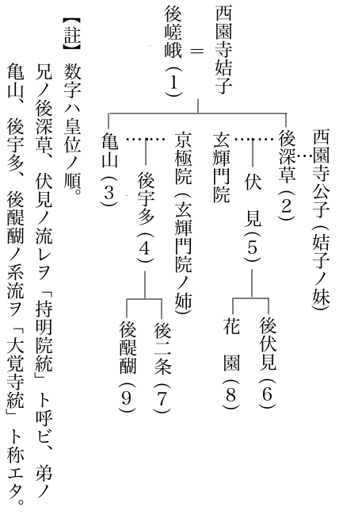

| 私本太平記 03 みなかみ帖 | |
| 吉川 英治 | |
| (2013) | |
私本太平記
みなかみ帖
吉川英治
古市
の朝は、舟の櫓音
やら車の音で明けはじめる。
ほどなく、散所民
のわめき声だの、赤子の泣き声。そして、市
の騒音も陽と共に高くなり、やがて型どおりな毎日の生態と砂塵が附近一帯をたち籠
めてくる。
「まだ帰らぬの」
「......帰りませんなあ」
出屋敷
の板かべの一間から、日野俊基は、外ばかり見ていた。――夜来、侍
いていた石川ノ豊麻呂
も、まんじりもしなかった瞼である。
「たかの知れた放免一人、あの二人が、討ち損じるはずはないと思われますが」
豊麻呂には、自責もあった。
俊基の身をここへ隠し、つき纒
う八荒坊は、高野街道へおびき出して、頼春と菊王の手で打ち果させるという計は、そもそも、自分が妙策と信じていい出したことなのだ。
「ご窮屈でも、弁ノ殿には、しばし、ここにてお待ち下さいませぬか」
「お身はどこへ？」
「万一のため、部下に命じて、高野街道を中心に、手分けさせておりますが、それらの者も、なぜか、まだ一人とて立ち帰って来ません。自身、石川まで行って、吉左右
のほど、確かめてまいりまする」
豊麻呂は出て行った。
いや、そんな悠長さではなく、飛ぶがごとく駈けてゆく背は、いかにも自責のつよい若者の純情ぶりを思わせる。
ところが。――その豊麻呂もなかなか戻って来なかった。すでに午
すぎ。やっと帰っては来たが、その姿は、朝にもまして疲労と埃
にまみれていた。
「どうした？ 豊麻呂」
「なんとも、解
せぬことになりました。八荒坊が討たれたらしい形跡
もなく、頼春と菊王の安否の程もわかりません」
「さては、不首尾か」
「が、部下どもの探りによれば、天見
の辺では、八荒坊にもあらぬ偽山伏の放免の死骸が、幾つか見られ、そのどれもが、みな矢キズを負っていたと申しまする」
「はての。二人は、弓は持たなかったはず。さらには、同類の偽山伏が、ほかにも大勢いたとすれば、何ぞの手違いが、起ったものに相違ない」
「されば、放免どもはいつか、弁ノ殿がここにお潜
みのことまで偵知したらしく、日頃から居る地元の諜者
もみな挙
げて、ここの出屋敷のぐるりを見張っておりまする」
「なに、ここをも？」
俊基は、愕
とした。
すべては破綻
か、と思わぬわけにゆかなかった。そして常々、ふところの深くに持っていた一包の毒薬が、すぐ意識となって、肌の毛穴に、人知れず、覚悟をそそけ立たせてくる。
いちどは鎌倉に囚
われた前科の身だ。絶体絶命とみたら、いつでも護持する綸旨
を灰として、自身は毒を仰服
ぐ決意を秘めていたのである。――しかし、これが公卿というものか、姿は、常と変らぬ静かな人に見えていた。
まもなく。散所民の板小屋や繫
り舟
の苫
に、チラチラ灯を見る夕となっていた。すると、街から出屋敷の長い土塀の外へかけて、
「喧嘩だ、喧嘩だっ」
と、俄
な人つむじの声がわき揚がッていた。
喧嘩は散所街
の名物といってもいい。
が、今夕のは、ただ事でなかった。出屋敷をつつむ六波羅の捕吏と、散所民との間に起ったものである。
昼、淀川方面から古市へ乗り込んで来た一群があった。これを待ッていたらしい地元の放免
を先頭に、出屋敷の掘割口だの裏門までの、地形しらべにも念を入れた上、やがてのこと、
「それっ」
捕手頭の顎合図
の下に、
「この内に、御不審のかかった人間が潜伏しおるとの報
らせである。手抗
う者は、用捨
なく六波羅へ曳くぞ。邪魔するな」
とばかり、一挙に出屋敷の内へ、混み入ろうとしたものだった。
この日、豊麻呂の旨をふくんで、すでに殺気だッていた出屋敷の雑用人らは、
「そんな者はいない！」
「よそに問え」
「散所ノ太夫のおゆるしがなくば一歩も通せぬ」
と、棒、槍、野太刀、狩弓などを持って立ちふさがった。
出屋敷の倉番、帳方
、舟手、軽子頭
、その他、ここで諸役についている者は、おおむね無籍
無禄
の浪人だった。
かれら浪人の生態や、日頃の言なども、おもしろい。「おれの祖
は、七、八代前までは、平家の小松殿の身内だったが、壇ノ浦このかた落ちぶれて」と、いうのもあるし。「おれどもの家は、木曾殿と共に都へ上って、一時はこの地方で、全盛をきわめたものだが」と、喞
つもあり、蒙古襲来
の役
に、わしの大祖父は、どう働いたとか。承久ノ乱では、宮方へついたがため、家名を失い、以後はこの通りな半百姓だ――などと、いずれも、今の我が身には誇れもせず、ただ、過去ばかりを回顧しあっている手輩
だった。
そして、明け暮れ、ばくちに耽
ったり飲ンだりの、自堕落な中に甘ンじている者かと思えば、そうでもない。
「――時に会
えば、俺だってこうしてはいない」とか。「世が悪いのだ、正しい世直しが行われれば、俺どもも立ち直る」などという放言の裏に、何か事あれかしの一ト旗を考えて、それには石川の散所ノ太夫などが、たのもしい木蔭と寄って、いつか徒党をなしたものである。
ここのみならず、こうした浪人輩は、公家
という地主や、武家天下の地頭制の地割りなども一定された今では、かつての如き、土地の斬り取り強盗もできないところから、自然、世路
に充満していて、叡山
みたいな法城にすら、ずいぶんその堂衆中には、この類の浪人が化けこんでいるという。
とにかく、そんな手輩
が、この出屋敷にも、百人以上はいると見えたから、六波羅の捕吏といえども、たやすく、
「踏みつぶせ」
とも、出られなかった。
さりとて、この中と睨んでいる日野俊基を、やみやみ見のがす彼らでもない。押し問答も、数語で終った。
「面倒だ。土塀を越えろ。どこからでも躍りこんで、当
の悪公卿
を引ッ張り出せ」
乱闘が始まッた。
捕手方も無慮
七、八十人はかぞえられた。だが内部の浪人群だけでなく、散所街の雑人
たちはみな出屋敷の味方だったから、彼らはたちまちいたる所で、袋だたきの目にあった。
夜になった。石河原の散所街の上に、大きな月がのぼる。それが一そう地上の喧騒を不気味にしていた。
「まるで一揆
だ」
捕吏の頭
は、呟
いた。
いちど、崩れた捕手方も、たった今、六波羅からの増援が着いたと聞いて、また気勢をもりかえしている。だが、それに対峙する出屋敷の浪人方へも、散所民の加勢が刻々とふえて、
「一匹も中に入れるな」
と、まるで小合戦の様相だった。
問題はもう、日野俊基の身を、渡す渡さぬ、などではない。裸の民と権力との抗争だ。
今日にかぎらず、この種の啀
みあいとなると、いつも血をみるまでは熄
まなかった。だから近国の地頭や六波羅でさえ、
散所一揆
といえば、事長びくも覚悟か、手を退
くかだった。ただの一ぺんでも、法的な処理などつけえた例
しはないのである。
まさに、今夜の形相は、それに近い――。
加うるに、道明寺川から駈けつけた六波羅兵は、おそらく探題直命の者どもだろう。捕吏、放免などの手ぬるさとは違って、殺到
するやいな、
「下種
ども、命はいらぬのか」
いきなり、矢を射浴びせて、
「かまわぬ。片っぱしから、虫ケラ塚としてしまえ」
と、まるで戦場へ立ち向うような勢いで、まず前衛の散所民から駈けちらしにかかった。
凄愴
なおめきが応
えた。無数な影が崩れ立つ。しかし、蜘蛛
の子と逃げちるものも、すぐ捲き返して来ては、捕方の背後をつく手段に出たり、また、どこからともなく、石の雨を降らせて、敵に面を上げさせなかった。
「豊麻呂」
「弁ノ殿」
二人は、眸
と眸で、ことば以上のものを、期しあった。
そこは出屋敷の役部屋だった。灯もなく、さしいる月の白さだけが、死の床を思わせる。
「......だめだのう、もう」
「そんなことはありません。お心づよく、この豊麻呂をお頼みくださいまし」
「其許
の心は信じているが」
いううちにも、ここの屋根にまで、ばらばら石の雨が降っていた。当然、それはすでに、出屋敷の構内へ、はや六波羅の手が混み入っていることを教えているものだった。
「......菊王も、頼春もまだ帰らず、捕吏どもは、わしを搦
めぬうちはここを退
くまい。さて、どうしたものか」
「いやいや、石川の父の太夫も、この御難儀を、坐視しているはずはありませぬ」
「月の空から、石が降る世の中だ。なかなか人の心もさだかでない」
「父の散所ノ太夫を、二心の者と、お疑いなされますか」
「ではないが、身に帯ぶる、みかどの綸旨
が気がかりなのだ。身は、いかにともなれ、万一綸旨が六波羅の手になど渡らば、こたびこそは、正中ノ二の舞ぐらいな騒ぎでは事すまぬ」
「あっ。ここもはや」
豊麻呂は急に、彼の手をとって、外へ出た。
そして、駈け乱れる跫音
のすきに、彼方の土倉の一つへ駈けた。俊基の身を、内へ隠して、彼自身は、倉の外に、太刀の鐺
を反
らして立った。
味噌倉
か。塩カビの香のつよい闇が、べっとりと、肌にひたつく。
俊基は、得知
れぬ物に腰をおろした。こうなっては、運を天にまかせているしかないと思う。
「......さても、われながら、数奇
な生涯を見るものだ」
公卿に生れ、殿上に仕えてきた身が、なにを求めて、こんなあさましい窮地に自身を追いこめて来たのやら。
と思いはしても、この期
となって、それを悔いたりする彼ではなかった。
沸
らすものは、むしろそれとは反対な志操への信仰だった。志士的な熱情だった。
この味噌倉の闇へも、はや死の手は刻々に近づきつつあるかもしれない。
しかし、じぶんの亡魂はかならず、北条幕府の滅亡を見るだろう。と考えて、彼の胸の悲歌は、笑いをふくんだ。そして自身の死もまた、荘厳な国の犠牲とかがやき観
えて来るのだった。
「弁ノ殿」
扉のすきから、外の豊麻呂が、小声で告げた。
「お気づかいなされますな。あの火の音は、捕手どもをくらますため、散所の者が、わざと二、三ヵ所に放ったもの。炎は、遠くでございますから」
いわれて、気づいた。
俊基が上を仰ぐと、棟木
の隙や屋根の破
れ目
に、赤い火光が映じている。遠いといったが、バチバチ火のハゼ音まで耳につく。
そのうちに。
「すわ」
彼も全身をそそけ立てた。突然、土倉の近くを、駈け乱れる跫音がしたのだ。おもわず、外へ、
「豊麻呂」
二度ほど呼んだが、その時、豊麻呂の答えもなかった。
「ついに来たか」
彼の手は、ふところの毒薬の一包を、無意識に触れていた。
たとえ、幕吏がこれへ踏み込んで来ても、生ける俊基を捕えることはできないのだ。彼らは毒を嚥
んだ死骸を見て茫然とするだけだろう。――俊基は、その光景を思いながら、しいて心に嘲笑をたたえた。しかしまた、咄嗟
には、秘勅の書を、どう処理するかに、はたと迷った。
「ここには、灯もない。灰とすべき火もなくては？」
とたんに、がらっと、土倉の扉があいた。
外の赤い闇を後ろに、数名の影がそこに見えた。太刀の柄へかかッた俊基の右手は、盲目的にそれへ向って、抜き打ちを加えようとした。
「私ですっ」
跳び退いた一人がさけんだ。
「――弁ノ殿、菊王でございまする」
「やっ、戻ったか」
「仔細
あって、遅くなりました。おゆるし下さいませ」
「して、頼春は」
「残念ですが、頼春どのは、たッた今、捕われました。わざと、弁ノ殿に似せて、みずから捕われて行ったのでございまする」
「俊基の身代りにか」
「一とき、ここの囲みを解くためにです。......が、すぐに、それは弁ノ殿に非ずと敵もさとるでしょう」
「いまのうちです」
豊麻呂も一しょに急
いた。
「すぐ、ここを脱
け出て、荷舟の底に隠れ、堀の水門から川ノ辻へお落ち下さい。さ、さ。一刻のまもお早く」
いまは何を訊
き返している暇もない。
せかれるままに、俊基は土倉を出て、堀の方へ走ッた。
一そうの荷舟がある。菊王が先へ飛び乗り、つづいて、俊基も手をとられて、苫
の下に体を隠す――。出屋敷の浪人七、八名は、後ろ向きに立って、四方へ眼を光らし合った。
豊麻呂が、繫綱
を投げた。
「では、先々とも、お心つけて、首尾よう御使
いをお遂げなされませ」
「おう、さらばだ」
俊基は、苫の蔭から、忙
しない別辞を返す。
「もう案じるな。ここが助かるような身の武運なら、先々とても、首尾はよかろう。豊麻呂、いずれ帰洛
のうえには、都からよい沙汰するぞ」
菊王は、棹
を取って、すぐ岸を突いた。
そこらにあった腰蓑
をまとって、散所者の舟人
に似せた姿も、それらしい。たちまち出屋敷の水門を離れ、舟は一と筋の川へ泛
かび出ていた。
いや、この辺は、水の静脈
動脈だった。大小無数の川が、河内平
で落ち合っている。石川の本流、餌香川
、道明寺川、恩智川などが、いわゆる〝川ノ辻〟をなしており、また、三角洲だの両岸の芦の彼方にも、散所部落の屋根が望まれ、大きな月一つのほか、すべて渺
としていた。
「菊王」
「は」
「あいにく、こよいは満月。あまり河心
へ漂い出るな。遠目も恐い」
「して、どう落ちのびまするか。ここは川ノ辻です。西へ下れば、摂津の墨
ノ江
。北へ行けば、淀川へ出てしまいますが」
「高野へ向うのに、水路はとれぬ。それにまた、川筋には川関もあるはず。ひとまず、舟はどこかへ繫
いで、夜半を待ち、陸路
へ上がって忍んで行こう。それしか、策はあるまいが」
舟は向きを代える。
芦と芦のあいだを縫い、流れの速くない江のふところを探して行く。貧しい部落小屋が岸に見えた。しかし、灯もなく、騒がしい気配も見えない。菊王は一つの杭に繫綱
をとった。
「......潯陽江頭
、さながら、ここは琵琶行
の詩」
俊基は独り思った。
やっと落着きをえた主従は、月もささぬ苫
の蔭に潜んで、何か長いこと、ひそひそ語りあっていた。
菊王が、昨日からの一ぶ始終を語っていたものであろう。また今日、立ち帰って来た出屋敷の危急を見て、頼春が、「こここそ、自分の死所」とばかり、われから捕吏に身をまかせて、捕われて行ったことなども、つぶさに告げていたにちがいない。
「......が、事々残念ばかりでもございません。加賀田の山奥では、やがては宮方のお力にもなろうかと思われる一隠者に出会いました。その人は」
と、彼が、毛利時親
なる人物の発見を、ここで熱心にしゃべり出したときだった。急に、俊基はその声を抑えて、
「しっ......」
と、苫の外へ顔を出した。
つい近くの杭に、もう一そうの苫舟
があったのである。人もなきかのようであったが、チラと小さい灯が点
った。そして弱々しい赤子の声が、ひイっと、水に響いて来たのだった。
赤子の泣き声は、まもなくやんで、夜はまた、芦のそよぎもない、水しじまに返っていた。
「やれやれ、赤子でよかった」
菊王は胸をなでおろして。
「......舟住居の夫婦者か何ぞでございましょう。まず大事はありませぬ」
彼はまた、話をつづけた。
毛利時親
についてである。
菊王としては、隠者
時親に、よほど心をひかれ、一個の有力な宮方お味方の発見とまで考えているらしいが、日野俊基は、そうは買わない。
おおむね、知識の人は他の知識を、想像だけでまず多寡
をくくる。
俊基がそんな軽薄ではないにしろ、彼とて、新しい宋学
の造詣
にかけては、堂上一般の若公卿なみに、いやそれの先駆者ぐらいな誇りもある者だった。
「そうか。......つまりは田舎儒者
だの、その者は」
「いえ、どうして」
菊王は、主人の無残な結論へ一そうムキになって言った。
「なかなか、そのような、ぬるい人物とは、見受けませなんだ。いわゆる高士
の風でもございましょうか」
「そちは、ひどく心酔だな」
「楠木家の御兄弟――正成、正季
どのも師事され、奥河内の若い郷党輩
からも、お師として、慕われておるのを見ても」
「山家に住んで、ちと小難
しげな書物など飾りたてておれば、田舎武者には、さも、めずらしかろう。――世の名利
を、あさましいなどといって、隠者めかしておるその類の似非者
は、世間
往々あるものだ」
と、俊基は手きびしい。
もっとも、彼のような実践第一とする志士的な眸には、口のみ賢
げに容態ぶって、時乱の外にだけいる隠遁者などは、およそ虫の好かぬ卑怯者ときめていたことでもあろう。――そんな者よりは、俊基にすれば、自分の身代りに捕われて行ったと聞く船木頼春の方へ、この宵は、万斛
の涙を覚えていたに違いない。
と。二人の話の途切れに......すぐ近くの杭の繫
り舟
の苫
から、またしても、さっきの甲
だかい赤子の泣き声が、水谺
をよんでいた。
「ち。よく泣かせるナ」
菊王は舌打ちして。
「わが殿にも、いまのまに少しなと、うとうと手枕
でもしておかれねば、お疲れが癒
えますまいに」
「泣く子はぜひもない。まして人の子」
「どこか、繫綱
をよそへ移しましょうか」
「それはいいが、大丈夫か、辺りの様子は」
「ここだけでなく、ほかにも人影のない岸はありましょう。......あれ、またヒイヒイと、ひきつけそうな泣き狂いだ。これや、いけない」
艫
へ這い出て、菊王は、もやいを解いた。そして舟を突きかけると、ゆるい波紋が、隣の苫舟の暗い灯までを少しゆるがせ、そこの舟べりから、
「......もし」
と若い男が、縋
るような声音
でこなたへ呼びかけた。
「見ず知らずのお方へ、とんだ御無心でございますが、よんどころなく、病人と赤子をおいて、ちょっと街まで一ト走り行って来たいのでございます。何とも恐れいりますが、その間、ここの苫
を、見ていていただけますまいか。すぐに戻ってまいりますゆえ」
「さあ？ ......」と、菊王には、生返辞
しか出なかった。
そのあとも、ただ、
「それはさぞかし、お困りだろうが」
とだけ呟いて、苫の蔭なる俊基へ、眼問
いしている風だった。
俊基は、そこから、隣舟
の若い男のすがたを、月の波映
の中に、まざ
と見ていた。
浅黄布の粽頭巾
に、つづれてはいるが派手っぽい肩衣
を着、冠者袴
という身なりは、すぐ芸人とわかる者だった。
けれど、面
ざしは賤
しくなく、難をいえば、三十すぎの壮者にも似ず、どこやら神経質にみえる。が、それも稼
ぎの弱い舟芸人が病人を抱えての、世帯苦労のせいかとも、察しられなくはない。
「菊王」
「はい」
「気のどくそうな。......ま、暫時ならば、心配なく用事に行って来るがよいと、申してやれ」
「そういたしますか」
と、菊王は、隣舟の男へ。
「おあるじが、ああ仰っしゃって下された。しかし、こちらも、泊り舟ではない。早く帰ってくれぬと困るが」
「はい、はい。......ありがとうぞんじます。では、大急ぎで行ってまいりますれば」
「街へ何しにおいでなのか」
「それがでございますよ」
と男は、いちど苫へ入って、妻の枕もとへかがんでいた。何か病人へ言いふくめてでもいるらしい。それからまた、舟べりへ姿を見せて。
「なにしろ、家内の母乳
が出ませんので、乳児
には、葛
、米の粉などを湯搔
いては、飲ませておりますが、今夕、この辺りの散所街
は、どこもかしこも、えらい騒ぎでございましてな」
「ほ。......そんな騒ぎがあったのかね」
菊王は、とぼけて。
「――それで、用達しも出来ずにいたわけなんだね」
「諸所に火の手は見えますし、六波羅衆が入って、合戦になったとか、いや捕物だとか、この辺の散所衆まで、棒キレなど持ってみな出てゆく様子。とても買物などには上がれません。......で、街の空のみ眺めていましたが、赤子は飢
もじゅうなり出して、ヒイヒイ泣くし、あいにく家内の容体も、こよいは常より病状が悪いので、途方にくれていたところでございまする」
「じゃあ、舟にはほかに、誰もいないのかい」
「生れてまのない赤子と、家内が寝ているだけなのでございます。それの葛粉
やら薬などを、街で買求めて来たいので......いまも、家内の枕もとへも、わけを話してやりましたら、安心して、頷
いておりました。すみませんが、一ト走り行ってまいりますから、ご迷惑でも、その間だけ、どうかここをお願いいたします」
男は、あとを頼むと、心も空のように、岸へ上がって、どこへともなく駈けて行った。
菊王は見送ってから、
「いじらしいなあ」
そしてまた、独り呟
いた。
「しがない舟芸人とはいうものの、女房思いな、やさしげな男だ。散所者は荒っぽいというが、こんな夫婦もあるのを見れば、そうでもないのか」
すると、苫の下で、
「菊王」
俊基がまた呼んでいた。彼も、家に残してある妻の小右京
を思い出したことでもあろうか。
「ちょっと、隣の舟を覗
いてみぬか。急に赤子も泣きやみ、苫のうち、妙に何の気ぶりもせぬが」
「なるほど、そう仰っしゃれば？」
菊王も気になっていたらしい。そっと、隣の舟へ這い渡って行った。
暗い苫のおくには、ぷんと病臭のようなものが籠
っていた。小さい灯皿が横木に架
かっている。むしろの上に、雑巾
のような薄べったい夜具
が敷いてあった。......菊王の重みで、少し傾いた舟の揺れを、病人はすぐ体で知って、木枕の上の顔を、ふと、もたげかけた。
半ば、黒髪にかくされて、女の顔は、見られようもなかったが、その白さは、柳の糸に架かった月ともいえようか。それに物怯
えでもしたらしい眸が、はっと、菊王をして、見ては悪いものを見たような罪の意識を抱かせたほどだった。
「............」
そうっと、出来るだけ静かに、彼は俊基のそばへ戻って来た。
「別条はございません。泣きつかれて、赤子もスヤスヤ病人のふところで寝ついたらしゅう見えまする」
「女は」
「ぎょっとして、木枕の顔をうごかした風でしたが」
「それきりか」
「はい。物も言いえぬ態
の病人です。それにまだ、いとうら若い女房でもありますゆえ」
「思えば、気のどく。今日のことも、この俊基から起った騒ぎだ。これを見ても、人の世のことは、一波が万波。誰へどんな禍いがおよんで行くやら分らぬものだな」
「そこまで、因果
のおよぶ果ての果てまで、いちいちお胸に傷
んでいたら、国事にお尽くしもできますまいに」
「そうなのだ。わし自身とて、愛
しい小右京
とも別れ、公卿の栄耀
もすてているゆえ、そこは眼をつぶっているが、しかし、何も知らぬ貧しい良民ほど憐
れなるはないのう。......そうだ、持ち合わせの旅薬
がある。これは典医の光雅
から、麝香
をふくむ貴薬とか申して贈ってくれたもの。これに少々だが金を添えて、女を慰めてやるがよい」
「え。これを縁
もないあの夫婦へ」
「いや、一河
の縁だ」
「それはさぞ、よろこびましょう。やがて女の良人も戻りましょうが、その前にお志を告げて、いまの怯えを慰めてやりましょうず」
菊王は、それを持って、再び、隣の苫
を訪れた。そして、すぐ戻ったが、俊基へは「......泣いてよろこんでおりました」と告げたのみで、多くも語らず、なにか考え顔に落ちこんでいた。
「菊王、なぜ沈んでおる」
「いえ、沈んでなどおりませぬが、どう考えても思い泛かんでまいりません」
「何をば？」
「いま、近々と見て来た舟芸人の妻ですが」
「それが何としたのか」
「たしかに、どこかで見たことのある女房なのです。けれど、はっと思ったのは刹那
で、また、そうではなかったのかと、迷われもして来ますし」
「つまらぬ迷いを」
そこへ、彼女の良人が、息もせかせか岸の上に姿をみせた。そして隣舟へ帰るやいな、何度も礼をくり返した。
「や。早かったな。赤子の葛
の粉
とかは、手に入ったか」
「おかげで」
と、男はふたたび、ていねいに頭を下げた。
大道芸人もおなじ舟芸人といえ、やはり身にそなわる芸味がにじみ出るものだろうか。せまい舟べりで小腰をかがめた姿の線がいかにもいい。この辺の散所民と同視していただけにふと目をひかれた。
はてな？
菊王はまたしても、男の病める妻を思い合わせた。が、やはり思い出せなかった。といって、夜舟ばなしに夜を更
かしていられる境遇でもない。すぐ棹
を取って、彼の舟と離れながら、
「なにしろ、舟住居ではたいへんだな。大事になさいよ。赤子もお内儀も」
「ありがとうございました。おかげで乳呑
みにも、さっそく、葛粉
を搔いてやれまする。いずれへのお旅路やら存じませぬが、あなた様方も、お気をつけて」
「ああ、夜がすみが深くなったな。月もぼやけて来たし」
「ままこの先の洲
では、川の衆でも、よく舟底をのし
上げます。御用心なされませ」
「おおよ。おさらば」
川面
を這う白いものに、もう相互の舟影は、朧々
になっていた。
ややしばらく、菊王の棹は、水の流れを探り探り、人なき岸もやと、さまよっていた。
陸
へ上がって、深夜の潜行へ移るには、まだ時刻が早い気がする。さればとて、河心は流れが早いし、岸は油断がならないし、気が気でない。
すると、朧な中に、櫓音
が聞え、つづいて、
「旅のお方。......もうしっ。さきほどの、旅のお方」
と、つい今しがた、別れて来たばかりの男の声が近づいて来た。
舟影はすぐ見えた。男は、櫓づかを片手に、
「少々、お待ち下さいまし。お呼びとめして、重ねがさね、失礼ではございますが」
「まだ、何ぞ用かい」
「なんとも、不覚でございました。お別れした後で、病床の妻から、貴重なお薬だのお金をいただいた由など、涙ながら聞かされまして」
「で、礼を言いに追って来たのか。いや、あれはお主
が、一河
の縁じゃと申されて、憐れなお内儀に上げたもの。そうまでのお礼は、かえって、わがお主には、御迷惑かも知れないよ」
「はい。その御迷惑も、お察しせぬではございませぬ。......けれど、妻へいただいたあのお薬苞
は、朝家
の典医寮でなくては用いぬ物かとぞんじまする。で、じつは俄
に」
「えっ」
菊王の手の水馴棹
が、水の中で、ぶると顫
えた。もすこし、男のことばの裏に何かが密
んでいたら、一颯
の水玉と共に、棹は、相手を河へ叩き落していたかも知れない。
「何をばかな。あれやお主
が、人様からいただいたお薬だわ。要
らざる察しを......。したが、それはとにかく、おぬし散所者の風情で、どうしてそんな細かな点に気づいたのか」
「お気色を悪くなさらないで下さい。常なら、さまで心にとめもいたしません。ところが、さいぜん街へまいった時、はしなく、恐
い噂
をふと、耳に入れて帰りましたので」
「な、なに。......町で恐い噂を耳にしたからだと」
「はい」
「わしたちのことをか」
「もしや、と存ぜられますが」
「ど、どんな取沙汰を」
夜目だが、菊王の語気、ただの形相
ではなかったようだ。
が、男は自己の善意にかたく拠
って、それは人も善意で汲んでくれるものと、信じている口ぶりだった。
「さ......。その儀でございますが。ここは、さりげのうお別れした方がよいか、または、存ずる旨を、ありていにお告げ申した方が正しいだろうか、夫婦
して、お身の上なども、思い迷うたのではございましたが」
「............」
「しかし、行きずりの御縁と見すごし、万一にもお行き先にて、取返しのつかぬ厄
にでもお遭
いなされたら、てまえども夫婦
は、生涯の悔いを心のそこに嚙むことであろ。......妻もさように申しますし、てまえも、さこそと心が決まりましたので、俄に櫓
を把
って、かくはお跡を追うてまいった次第でございまする」
「ふうむ」
なんのために。また、何を知って。
もう菊王の一存では、返辞のかぎりでもないし、判断もつかなかった。彼のあいまいな唸
きは、舟底で聞いているであろう俊基の意志を待つまでのつなぎだった。
「......菊王」
「はっ」
「悪意の者ではなさそうな」
「と、私も存じますが」
「この夜がすみ。舟べりと舟べりとの高声などは、心ないわざ。ともあれその男を、こなたの苫へ招き入れ、膝ぐみで仔細を聞いてみたらどうか」
すると、男の舟から、
「ならば、そこの川洲
へお上がりなされませぬか。しばし、梁杭
にお舟をつないで」
と、先に漕
いで、芦の蔭へ、水先して行った。
川洲の島には、鮎小屋らしい小屋があった。俊基がその辺に腰をおろすと、菊王は万一を警戒してか、ひたと主人の脇にちかく片膝を折る。そして左の片手を太刀の鯉口
に忍ばせておく身構えも忘れなかった。
「さ。何をお耳に入れんとするのか、早ういえ。申してみい」
「はい。お手間をとらせてはなりませぬ。それゆえ、あけすけに申しまするが、眼の前におわせられるのは、弁ノ殿、日野俊基朝臣でいらっしゃいましょうが」
「うぬっ」
菊王は、ひざまずいてなどいられなかった。思わず身を突っ立てて。
「下郎
。なにを、証拠
に」
「あ、もし......。お隠しなされますな。街の噂、妻にいただいた貴薬。二つを思い合せて、さてはと、思い当ったのでございまする。まして、こう近々とお目にかかりますれば」
「菊王、下にいよ」
俊基は、彼を抑えて、自身、男へむかって言った。
「つつむまい。いかにも儂
は日野右少弁
だが、そちが告げたい真意は何か」
「はい。街で聞いた六波羅衆のうごきによると、やがて川筋すべても洗われて来るようです。また、高野路の諸所も手配りが行き渡っているとか。どうぞ、お旅路の先をかえて、一刻も早く、ここをお落ちなされますように」
男の忠告を、俊基は疑わなかった。もし欲心の上なら、密訴して、六波羅兵をみちびいて来るはずだ。――さはなくて、こちらの一片の情に、彼も恩を感じてくれたものだろう。
「かたじけない」
と、心から彼はいった。
男は、彼のいんぎんな礼に、かえってあわてて。
「いえいえ、お礼なら手前の方こそ、山々申さねば相なりませぬ。それよりは、少しもお早く、ここを落ちる御思案をお決めなされませ」
「そちは、当所の者か」
「ごらんの通りな舟芸人。まずは散所の住民も同様な者でござりまする」
「ならば、この辺の地理には詳
しかろうが、高野路もふさがれ、水路もならぬとすれば、袋の鼠、どう落ちのびる道があろ」
「高野へは、ぜひともお越しなさらねばなりませぬか」
「いまは実を打ち明けるが、或る御使いをおびて、第一に紀州高野へ、次に伯耆
の大山寺、越前の平泉寺と、順次にめぐって、やがて帰洛
もいそがねばならぬ身」
「では、お着がえも相なりませぬな。川関にもかからず、地頭の領も経ずに、高野へ参るには、ただ一つ、ここより天野山金剛寺の裏岳
を越え、葛城
から粉河
へ出る細道のみでございますが」
「おう、それを択
ぼう。とはいえ、西も東も分らぬここの川洲だが、どう行ったら、捕吏の眼をのがれえようか」
「ご安心な地へ出るまで、てまえが、ご案内いたしましょうが、そのお姿では」
と、男は鮎小屋の内を覗き、破れ笠や、腰蓑
などを持ち出して来て。
「これで、一時、お身をお包みなされませ」
「......が、そちはその間、病の妻と赤子をどうしておくか」
「お案じ下さいますな。乳児
もよう寝ついておりますし、家内へもただ今、仔細を申し聞かせてまいりますから」
男は、自分の舟へもどって、すぐまた、苫の下から上がって来た。
洲
は、島になっているが、男は浅瀬を先に立って渡って行き、さらに、道もない芦川原をかきわけて、ほどなく一つの散所部落の岸へ上がった。
もう深夜だが、一切、口もきかずに三人はただ歩いた。
男は部落の裏を巧みに縫って、やがて一本の街道を早足で横切ると、あとはいちめんな野路
だった。それも尽きて、野末
の山を見ると、
「では、お別れ申しまする。......彼方の山が岩室
で、まもなく、金剛寺の西の国分峠、あとは南へ南へと、粉河までは、山つづきです。どうぞ、おつつがなきように」
菊王も、ここではもう、疑念を一掃して、男の親切を本心から謝していた。同時に、今の機会を失ってはと、
「ま、お待ちなされ。このままの、お別れも何やら......」
と、俊基と共に、野路の石に腰をおろした。そして、途々も訊
こう訊こうと思っていた、彼の妻のことを、きり出してみた。
「たしかに、どこかで見た女性
には相違ないが、さて俄に、思い泛かぶところもない。それに御辺
のものごしといい、よも、お夫婦
とも、根からの舟芸人では、おわすまいがの？」
「これは、お買いかぶりで......」
男は、菊王に問われて、はたと、恥じらい顔だった。
「元々、ただの舟芸人にすぎませぬ。氏素姓とてない散所者。妻とて、同様にござりまする」
それは、迷惑そうというよりも、拒
む風でさえあった。
「いや、さしつかえなら、悪問
いは、控えよう。したが、芸名ぐらいは」
と、俊基が代って訊くと。
「オ、それも申さいでおりましたか。......イヤどうも失礼をいたしました。てまえは、申楽師
と申しましても、しがない大道芸人にひとしい、杉
ノ本
の雨露次
と申すものでございます」
「雨露次？」
「はい」
「杉ノ本は、生地の名か」
「さようで」
「すると、伊賀だの。伊賀の一ノ宮には、古くから山田申楽
の座がある由。そちも山田申楽のながれを汲む者か」
「め、めっそうもない」
雨露次は、俊基の知識で、そこまで探り当てられると、ひどくあわてて。
「ただ今も申したような、身過ぎ世過ぎの大道芸、山田申楽の端くれにも連
なるほどな者ではございませぬ」
また菊王が、そのそばから、
「して、お内儀の名は？」
と、彼の空虚をついた。
妻の名は、秘す気もないのか、または急に噓も出なかったのか、ふだん呼びなれているままに、
「家内は、卯木
と申しまする」
と、彼は答えた。
「卯木どのか」
なんども、菊王は呟いて。
「......卯木どの。それも、どこかで聞いたような気はするが？ ......さて、これ以上根ほり葉ほりは、ごめいわくであろ。それだけ伺っておけば、またいつか、再会の縁にめぐまれぬこともあるまいし。――では、雨露次どのとやら、ご息災に」
「ありがとう存じまする。御縁もあらばまた......。ごきげんよう」
雨露次は、もとの道の方へ、独りすたすた引っ返して行った。
彼と別れて、主従が、岩室を越え、次の鉢ヶ峰寺の一堂に眠ったのは、明け方ぢかい頃だった。
「......あっ？」
と、その際、俊基が旅衣を解きかけつつ、異様な声を発したので、菊王も、故なくぎょッとしていると、
「しまった」
と、くり返して。
「菊王、何としようぞ、知らぬこととはいえ、宵のうち、わしは心もどうかしていたのであろうか。......常に肌に持っている毒薬を、旅薬の苞
と間違えて、そちの手から、あの雨露次の妻へ与えてしもうたらしい」
「げっ？」
「典医寮からくれた旅薬はこれにあるが、人知れず持っていた毒薬の方が肌にない」
「では、あれや毒薬だったのでございますか。そ、そんな物を、常にお持ちとは」
菊王も仰天した。
あんなにまで、涙を流してよろこんでいた雨露次の妻である。もう今頃は、服
んでしまっているにちがいない。
良人の雨露次が帰って、いかに恨むことであろうか。二人は、慄然としたが、どうしようもない。ふいに耳をついた鉢ヶ峰寺の鐘の音に打たれて、二人とも蒼白な顔を鐘の行方に俯伏
せた。二人の冷たい汗は、仏の名号
をとおして、無意識の罪を、一念に詫びていた。
「またそろそろ腹をすかして、嬰児
が乳をせがみ出す頃......」
野路をいそぐ男の胸に、そんな思いがたえずあった。
俊基主従を途中まで送って、人目にふれぬ暗いうちにと、河内野を駈けるように、もとのわが家の苫舟へ帰ってゆく申楽師
の雨露次
であった。
ほどなく、餌香川
が広まり、まだ寝しずまっている散所部落が見えてくる。
さきに、越えた浅瀬の水を彼はザブザブ渡りこえて行った。そして、以前の川の中洲
へ帰り着くと、そこで初めて、
「ああ」と異常な緊張から解かれたような風だった。――袴のすその水をしぼって、しばらくは、そのまま空を仰いでいる。
ゆうべの満月は、あとかたもない。
その月も、俊基朝臣や菊王の姿なども、すべてが、一夜の夢だったような心地がする。
どこか、東の山の端
は、はや明けかけているのだろう。川ノ辻あたりの水面だけが、ぽかっと白い。行々子
のヒナやら雲雀
やら、ほの暗い芦のうちでは、もうチチチチが聞かれ出す......
彼は知らない。寸前に待つ運命を、まだ何も覚
っていなかった。
しかし、彼と別れた俊基は、ちょうど、この時刻ごろ、鉢ヶ峰寺の一堂で、心にもない昨夜の過失に気がつき、愕然
としていたのである。
所持の毒薬を、べつの旅薬とまちがえて、彼の妻に与えて来たことを今朝となって知ったのだが、恐らくは、それを告げるためだけに、ここへ駈け戻って来るはずもないだろう。――ましてや、雨露次に虫の知らせもなかったのは、ぜひもない。
「......卯木
」
わが家の苫舟
を見ると、彼は岸の上から、もう妻の名をよんでいた。――その声には、一刻離れても、お互いに、待ちつ待たれつの、常日頃の夫婦仲が、ことばのほかに溢れていた。
「いま帰ったよ。......さぞ心細かったであろう。嬰児
はあれきり眼をさまさなかったか。......待て待て、さっそく、葛粉
を湯搔
いてやるからの」
舟べりを踏む。
そして、苫
の外を半ば巡り歩いてゆくうちに、ふと何か変った様子でも見たのだろうか。彼はあわてて身を這うように伏せて、
「卯木」
と、もいちど呼んだ。――が、返辞はない。
苫の内の灯は消えているし、あの眼ざとい
妻が、寝返りを打つ気配でもなかった。雨露次は転
び落ちるような恰好で、中へはいった。
そして、そこらの木枕やら寝床やらを、まっ暗な中で、狂気のごとく、なで廻しつつ、
「あっいない。ど、どこへ」
彼のつまさきで、器が砕け、とたんに動顚
した彼のからだが、大きく舟を揺すぶった。
「卯木っ。卯木......」
また外へ出て、うろうろと、苫の外を巡り巡り、水へ向って、声をからした。――果ては、その声も、どっと、ただの大きな嗚咽
となりながら、洲
の陸
へ盲目的に駈け上がった。
すると、待っていたように、鮎小屋の蔭にひそんでいた一群の人影が、わらわらと、すぐ彼の姿を埋めていた。いうまでもなく、六波羅の手の者どもだった。
うむ
をいわせず、蔽
いかぶさって、雨露次をねじ伏せ、縄をと、ひしめく群れへ、
「何をするっ」
と、彼の方も、ままにはなっていなかった。
こうした刹那には、つい正味の自己が出てしまうのも、ぜひがない。それまでの彼とは似もやらず、捕手の二、三を足わざにかけて、一瞬に、彼らの重圧の下から後ろへ跳び退がっていた。
「人違いするな。わしはこの辺りの舟芸人じゃ。申楽師
の雨露次という者。なんの咎
で、曳
こうとなさるか」
「うそをつけ」
あざ嘲
う声がする。それが、捕手頭か。
「おい、雨露次とやら。きさまあ侍だな。いまの手なみは舟芸人の芸当じゃあるまい。......いや、そんなことは、あとで訊こう。とにかく屯所
まで来てもらおうか」
「たむろとは？」
「知れたこと。わざわざ六波羅から駈けつけて、藤井寺に本拠をおいている御人数の溜り場だ」
「そんな所へ、曳かれて行くいわれはない。身に罪の覚えもないものを」
「言い開きなら、たむろで申せ。なんの覚えもない奴が、なぜ、このような中洲
に舟をつなぎ、しかも、ゆうべから人目を避けていたのか」
「舟住居は、浮寝の鳥じゃ。その夜その夜、さだまる岸に寝るとは限らぬ」
「では、おなじ杭
にもやってある、あの空舟は、何なのだ？ ......あれへは、誰を乗せていたのか」
「知らぬ。いずれ、ぬしなき流れ舟か何ぞであろうに」
「知らぬとはいわさぬ。あれは出屋敷の荷舟。舳
に烙印
もみえる。その出屋敷の水門から逃げのびた曲者を、きさまが水先して、これへ繫
いだものにちがいあるまい。......また、ここから何処ぞへ、逃げ道の案内をして立ち帰って来たものだろう。うぬの帰りを待ち伏せていたのだ。縄目が恐いなら、ここで即座に、日野俊基の行った先を、申し述べろ」
「ばかな」と、雨露次は耳もかさず、
「日野俊基などとは、聞いたこともない。よそに問え」
と、しいて嘲殺
した。
捕手頭は、それをまた、声高く、嘲
い返した。
「そうか、うぬがいわぬなら、うぬの女房の口から訊こう。......ばかな亭主だ。ここで、すんなりと泥を吐いてしまえば、病人の女房も、痛い目にもあわず、すぐ屯所
から帰されるものを」
「しゃっ......。では」と、仰天して、
「妻の卯木は？」
「もう一ト足先に、たむろへ曳かれて行ったのだ。それでもきさまは、じたばたするのか。なお、手抗
いいたす気か」
「む、無慈悲な」
「なにが無慈悲ぞ。女房を憐れと思うなら、白
をきるのはよすがいい。ええい面倒な、四の五をいわせず、引っ縛
めろ」
言下に、部下の人数は、おめきかかって、ふたたび雨露次の身を地にねじ伏せた。雨露次はもう手むかいもしなかった。夜は明けて、川ノ辻には毎日の櫓音
が、今日も変りなく行
き交
いしていた。
わずか百余の兵でも、軍が駐
まると、幽邃
な庭も、一夜に殺伐な辻と変ってしまう。
それも、権威ある寺では、立ち入りなど許さぬが、藤井寺は往年の洪水
で荒廃したままだった。本尊の石川観音の御相
が、からくも茅葺堂
に守られている程度である。――で、昨日から、六波羅兵と放免
（密偵）どもの、煮炊
きの跡や馬糞やらで、そこは狼藉
を極めていた。
「ち、うるさいなあ」
ここの部将らしい虎ヒゲの男だった。一堂の濡れ縁に腰かけて、どなっていた。
「ギャアギャアと、いつまで餓鬼を泣かせておくか。赤子の声などは、変な里心
がついていかん。いいかげんに捥
ぎ離して、女だけをここへ曳いて来い」
兵の一人が駈けよって、それへ答えた。
「飢
もじいせいだそうです。米の粉か葛粉
をくれと、女は申しおりますが」
「乳は出ぬのか」
「産後の病とかで、嫋々
と、物に縋
らねば歩けぬような母親なので」
「やっかいな囚人
だ。ま、仕方がない。裏の堂守
に言って、粥
の汁でも母子にくれてやるがいい」
部将は本庄鬼六
といって衛門尉
、六波羅
検断所の一将だった。威張るはずである。
「おい」
と、その顎をまたすぐ、横の兵へ振って。
「この暇
に、放免組の一人に、ここへまいれと申せ」
まもなく、放免溜りから、眼の大きな、木菟
みたいな顔の男が出て来て、彼の前にうずくまった。
「放免の権三
でございますが」
「そちが組の頭か」
「さようで」
「どうしたんだ。おとといから、放免組の手では、いっこう何の実績も挙らんではないか」
「おそれ入ります。何せい、総頭
の忍
ノ大蔵
が、一昨日来、消えてしまいましたので」
「まだ死骸も見えぬのか」
「見当りませぬ」
「ばかなはなしだ。放免の総頭ともある奴が」
「てっきり、船木頼春にたばかられて、天見
の辺で、どうかなったものと考えられますので、その頼春を、昨夜から拷問
しておりますが、口を開きませぬ」
「彼奴は、ひとかどの侍だ。放免の調べぐらいで、口を開くはずもあるまい。いずれ、六波羅ノ庁の白洲で叩こうわい。それまでは、日夜、警固をおこたるな」
ところが――。
その船木頼春が、たった今、仮牢としておいた庫裡
の内で、舌をかみ切って自殺したと知らせて来たので、本庄鬼六は、仰天して、すぐそこへ飛んで行った。
......が、すでに、こときれていたのである。鬼六は、唯一の生き証拠を失ったとして、警固の兵に当りちらし、地だんだ
を踏みつつもとの方へ戻って来た。
そして、ふと。
さっき、自分がいた堂の濡れ縁の前に、一枚の莚
を見た。――莚の上には、水藻
のような黒髪をさっと束ねて、朝の光にも耐えぬかのごとく俯っ伏していた、うら若い女房が見えた。
「......そうだ、今は、日野俊基の行方を知る生き証人は、この女と、女の良人としかいないのだ。大事に生かしておいて、責めねばならぬ」
鬼六は、黒髪を見すえながら、もとの座へ腰をおろした。
「......女」
「はい」
「名は」
「卯木
と申しまする」
「何歳に相なる」
「............」
本庄鬼六もつい見惚れた。
が。われに返ると、とつぜん、六波羅検断所の白洲で猛
ぶような地声に変った。
「幾ツだと訊いておるのになぜ答えん。何事も素直にいわぬと、仮借
せぬぞ。痛い目には、あいたくあるまい」
「二十六になりまする」
糸のような声である。
二十六か、女ざかりだナ、と鬼六は思う。さらに「......もっと、顔を上げろ」といって見たかったが、気がさして、鬼六もそこまでは、言いえなかった。
苫舟の底に病んで久しいせいだろう。そんな者の妻とは見えぬ嫋々
しさであった。梨
の花みたいな皮膚である。いやいや、かりに五ツ衣
の裳
を曳かせ、雲の鬘
に、珠の釵
を簪
させなば......と、鬼六は眩
のような空想にとらわれた。それはまた彼の詮議立
てのうえにも、酷
い興味をそそッていた。
「聞けば、申楽を渡世とする舟芸人の夫婦とのことだが、そちも良人も、ただの散所者ではあるまい。生国はどこだ」
「......はい」
「はいではない。どこだ、生れは？」
「都の辺りでございます」
「そうだろう。都ならではの容姿が見える。して良人の姓は」
「雨露次
といいまする」
「それは芸名と申すもの。本名を申したてい」
「いえいえ、七条河原の小屋仲間にいた根からの貧しい芸人です。ほかに名はございませぬ」
「たしか、か」
「......はい」
「ま。そこは、後で洗うとしよう。では、その雨露次は、昨夜から今暁へかけて、病人のそちを独り舟へ残して、そもどこへまいったのか。知らぬとはいわさんぞ。おなじ洲に夜泊
りしていたもう一艘にいた者を、どこへ逃がした。......さ、それをいえ」
「............」
「それさえ、素直に白状いたすなら、ここはすぐ解いて帰してやる。さもなくば、夫婦とも、六波羅ノ庁まで差し立てて、白洲の糺問
を受けねばならんぞ」
「ゆめ、何も存じません。......私は、舟底に乳児
を抱いて寝ておりましたし、良人がどこへ行きましたやら」
「よしっ」
鬼六の舌打ちは、憎悪に変ってきた。急に、ぎらぎらした眼で、辺りの兵を見まわしながら呟いた。
「あとの人数は、まだ雨露次をこれへ曳いて見えぬな。彼奴を縛
めて来たら、夫婦を莚
に並べて、泥を吐かしてくれる。――その間、赤子を添えて、観音堂の裏縁にでも繫
いでおけ」
この朝。
部将としての彼には、なお他方面に、火急な事態をひかえてでもいたのか、言いのこすやいな、部下をひきつれ、藤井寺から古市の出屋敷の方へ向って、馬を飛ばして行った。
その藤井寺へ、雨露次が曳かれて来たのは、すぐあとだった。もちろん、卯木とは、べつな所に監禁された。またなぜか、その日も、次の日も、夫婦は吟味の莚に曳き出されもしなかった。
六波羅兵と散所民の抗争は、きのうも今日も、いたる所で、血の雨、石の雨をみせていた。
もう焦点の問題などは、問題の外なのである。
日ごろの憎しみ合いだけが、相互の狂気をつのらせていた。古市
だけではなく、玉手、柏原、恵我
、高安あたりの散所民もまた、呼応して、
「川止めの関を解け」
「稼業
ができぬ」
「おれどもを、干
ぼしにする気か」
「辻結びを解け」
「放免どもを追ッ払え」
と、彼らの結束力は、兵の行動を、随所で立ち往生のほかなきにいたらせた。
この日増しな様相には、検断所派遣の本庄鬼六も、手のくだしようがなくなった。――兵を駆
ッて、弾圧すれば、数を加えて来るのみだし、なだめていれば、藤井寺の営さえ、彼らの奇襲と遠巻きに委
せられて、糧道も絶たれかねない勢いだった。
「始末が悪い相手」
彼は、つぶやく。
だが、自身の姿が、すでに散所民の狂暴を刺戟する権力の代行者に見えているものとは決して気づかない。――反対に、石川ノ散所太夫義辰なる者こそ、暴民の背後で糸を引いている怪物だと、睨んでいたが、
「さて？ 古市の出屋敷や、石川城へ当るには」
と、それの敢行には、さすが、二の足がふまれてしまう。
手持ちの兵は少ないし、よしんば、兵力があったにせよ、散所ノ太夫を相手とすれば、たちまち、合戦の端
となる。
公卿のうごき、寺院の呼応、そうなれば、一切は予測しがたい。――また当然、六波羅探題の指令もなければ、出来うる芸でもないのだった。
「この上はただ、主脳の御決断を待つばかり......」
鬼六は、毎日のような地だんだ
のうちに、六波羅の指示を仰いで待った。――日ならずして、早馬は帰って来た。が、意外にも、
「すぐ引揚げよ」
という指令である。
「――北条殿の御方針として、地方の紛争などは、何事によらず、事を大きくすな、とのおさしず。......されば、日野朝臣の追跡も、ひとまず打ち切り、当所にて捕えた散所民なども、みな解き放ッて、さっそく兵を戻せとの令でおざる」
伝令のこんな口上は、鬼六としては、意外だし、心外でもあったようだ。けれど、彼が河内へ出ているあいだに、従来の強硬な六波羅的な武断主義が、鎌倉の方針によって大きく修正され、同時に、探題以下の大更迭
が、近々に行われよう、という噂なども、やがては彼も、後になって耳にしたことではあった。
とにかく。
その代りには、本庄鬼六も、収拾
のつかない泥沼から、救われたような気はしたであろう。――即日、彼は、川止めの関を放ち、辻結びを解き、また藤井寺の囚人溜
りへ数珠ツナギにしておいた散所民を、みな解いて、
「いのち冥加
な虫ケラどもだ。六波羅へ送られれば、どいつもこいつも、投げ込み墓に入るところを、これも鎌倉殿のお情け。ありがたく心得ろ」
と、恩に着せて放った。
それらの釈放人のうちには、舟芸人の雨露次もいたし、彼の妻の卯木も、もちろん、交じっていなければならぬはずだった。
「ひどいなア。......まるで野盗が住んだあとみたいにして行きおった」
藤井寺の堂守は、ひとりで腹をたてていた。
むりはない。その日、本庄鬼六らの六波羅兵が、急に引き払って行った跡の景は、なんとも狼藉
なものだった。いくら無住同様な寺にせよ、欄
や建具は手当り次第、薪
にしているし、大小便をした坑
に土さえ埋
けて行こうとした様子もない。
「......が、まあまあ白鳳期
の御本尊、石川観音の御像
が持ち出されて、焚
き物にされなかっただけでも、目ッけものか」
堂守の一僧は、ぼやきながらも、やがて箒
を手に、片づけはじめた。時代の良民は、みなそうだったろうが、天災に会ったような諦
め顔が、彼の、せッせと働き出す姿にもあった。
黙々と、一坪掃
けば、一坪だけのもとの平和と静けさが、自分の手によって、大地へ取りもどされて来る。そんな小さい祈念を、せめてもの慰めにでもしているような風だった。
「おや？」
そのうちに、彼はふと、荒廃した庫裡
と物置の裏手に気づいて、遠くから咎
めた。
「誰だい。そこにいるのは。まだ誰か残っていたのかね」
「妙達さんですか。私ですよ。私でございまする」
近づいて来た男を見て、堂守の妙達は、眼をみはった。
「なんだ、雨露次さんかよ。さっきから、探していたのに」
「妙達さん。家内は、どこにおりましょうか、ご存知ではございませぬか」
「だから、お内儀の身になって、おまえさんの方を、心配していたのだよ。ほかの捕われの仲間は、ここの山門から皆、ゴミでも撒くように、解き放されたから、多分あんたも、一時どこかへ、立ち去ったに違いないと思ってさ」
「はい、他の衆と同様に、縄は解かれましたなれど、あの朝、妻の卯木も、ここへ囚われて来ていたはず......。その卯木が、どこにも見当りませんので」
「ああ、それでか」
「どこへでも行きおれと、山門から、突きとばされましたが、一時とて行くアテはなし、家内の安否も知れませぬので、もしやまだ寺内ではないかと、覗き歩いていたわけでございますが」
「そうかい、では、見つからないはずだよ、雨露次さん」
「えっ？」
雨露次はすぐ、色をかえて。
「卯木の身は、どうかされたのでございましょうか」
「いや、いや。これや、わしの言い方が悪かった。びっくりなさることはない。見つからないはずといったのは、わしの計らいで、あの藁葺御堂
の観音堂の内に、こないだ中から、そっと寝かせておいたわけさ」
「ああ、では、あの御扉
のうちに寝かされておりましたのか。妙達さん、お礼のことばもございません」
「......が、待っておくれよ。そう、よろこばれると、言い出しにくいなあ。びっくりなさるといったけれど、じつは、おまえさんのびっくりしそうなことが、ほかに一つあるんだよ」
観音堂といっても、ほんのワラぶき屋根の仮御堂である。せまい、ほの暗い、須弥壇
の上に、聖観音の光背
までが金色
の蜘蛛の巣みたいに仰がれる。
卯木は、この間じゅうから、ここの御壇
の下に、寝かされていた。
それも六波羅兵のいたわりだったわけではない。堂守の妙達とは、日ごろ顔見知りだったので、御扉
を開けてくれたのも、薄い夜の具
をかしてくれたのも、みな彼の親切だった。
しかし、兵がいる間は、妙達も、思うままには、ここへ来てもやれなかった。――で、今日の引揚げをみると、さっそく、枕もとを見舞って、彼女を力づけてやったが、なぜか、卯木は泣いてばかりいて、顔も上げない。
だんだん訊いてみると。
生後いくらもたたない嬰児は、彼女の乳も出ないふところで、ゆうべ、冷たくなってしまったというのである。
妙達は驚いて、
「では、抱いているのは、もう息のたえている冷たいお子か」
と、それでもなお、生けるもののように抱いている親心に、もらい泣きを催
さずにいられなかった。
――妙達はいま、以上のことを、良人の雨露次へ、こう告げ終ると、
「さ。はやく行って見ておあげ。かわいそうに、お内儀は、良人のおまえさんが、どうなったかと、それもまた、身も世もない心配らしいよ」
せきたてて、自分は自分の用に立ち去った。
雨露次は、藁御堂
の階
を、這うように上った。歩く力もなかったのである。そして、暗い御堂の扉をあけた。舟底に病んでいたとおりな寝すがたが、すぐ彼の眸をただらした。けれど赤子の声はもう聞かれもしなかった。
「卯木......。ここにいたか。......わしじゃ、わしじゃ」
「おっ。あなた」
彼女は、良人が坐るも待たず、すがりついた。その手は、暗い波間で何かをつかんだ力だった。ごくと、込みあげるものも一瞬
は呑まれて、わっと声と涙が堰
を切ったのは、後からだった。
「............」
須弥壇の観音像は、二つだが全く一つとなっている夫婦というもののこんな場合のすがたを、微笑
の下に見おろしていた。雨露次の手には、妻の薄い背を打つ喘
ぎが、いつまでもわかっていた。そっともとの寝どこへ横たえようとしても、離れようとはせぬ卯木であった。
「......泣くな。もう、わしはどこへも行きはせぬ。六波羅兵は去
んだ、難儀も去
った。もうもうどんな事があろうと、再び、そなたの側を離れることではない」
「それは、うれしゅうございますが、ただ、申しわけないことを。......あなたに、申しわけがなくて」
「嬰児
の死か」
「......見てくださいまし。......見てやって。......すやすやと眠っているような、この顔を」
「わるかった。みんなこの身の」
「いいえ、わたくしとても」
「なんの、舟住居の産後の冷えに、そのうえにもまた、この災難じゃ。したが、かかる酷
い世
に、このような親効
いもない親の下に生れたのが、そもそも、運のない子。......ま、気をとり直せ。せめて、夫婦
して、子の通夜
など、今夜はここで営
んでやるしかあるまいが」
夕方。堂守の妙達は、また、なぐさめ顔に、観音堂へ見えた。
「もう、六波羅風は去
んでしもうたし、誰へ気がねもいらぬことじゃ。お内儀がよくなるまでは、ゆっくり、ここで養生して立つがよい」
そして、晩には、また、
「これも何かの縁。わしも今夜は、小さい仏のお通夜を一しょにさせていただこうよ」
と、かたちばかりの供え物なども、彼が飾った。
「......倖せな子」
半夜の静かな念仏は、雨露次夫婦に、やがてそんな想いも抱かせた。
むしろ、苦患
を生きてゆかねばならぬ親こそ、業
の深い者なのだろう。......と思って、須弥壇
を仰ぐと、金色の聖観音
の御手に、亡きわが子は、抱きとられているかとも見えてくる。
夫婦は、おもわず「......お願いします。来世はどうか、こんな宿業
の深い親の仲で生れて来ずに、倖せな子に生れますように」と、心でさけぶ。すると、観世音の微笑は、「......それはよけいな取り越し苦労ぞ。この子は元々、私の子なのだ。いや世の衆生はみな私の子であるものを。......いま、おまえ方の子も、私の手によび返したまでのこと」――そう答えているように仰がれた。
と。そのとき、堂の外で、
「もしや、そこの灯影のうちに、申楽師
の雨露次は居るまいか。先ごろ六波羅兵のため、ここへ曳かれて来た者だが」
と、訊ねている声がする。
さっきから、まっ暗な境内を、さまよい歩いていた数名の武士があったが、その人影が、ここの小さい灯を探りあてて来たものらしい。
「どなた様で？」
用心ぶかく、妙達は、自分一人で縁へ出た。武士のうち、ひとりは際だって若かった。
その若い武士が言った。
「わしは、石川ノ豊麻呂だが」
「えっ。散所屋敷の若殿でいらっしゃいますか。ならば、仔細はなかろう。雨露次さんは、おりますが」
「卯木とやらは」
「はい。そのお内儀も」
「死んではおらなかったか」
「何を仰っしゃいます。亡くなったのは、赤子の方で、こよいは、その通夜をいとなんでいたところでございますがな」
豊麻呂は、つれていた家来と顔見合せて、ほっとした様子だった。そして、彼に代って、家来の一名が、事のわけを、こう話した。
数日前、日野俊基の消息をたずさえた高野の一僧が、石川城へ連絡に来た。
その消息の端に、「――過
って、雨露次の妻へ、毒物を与えた。過失といえ、悔恨にたえぬ。何とか、罪の償
いをしてやってほしい」と、伝えてきたものだという。
が。その毒薬は、あの折、雨露次がいぬ間に、苫舟を襲った捕吏の足もとに蹴ちらされてしまい、卯木は、それを手にさえしていなかったのだ。
「いや、そう聞けば、安堵
いたした。......雨露次とやら、あらためて、迎えをよこすぞ。日野朝臣から懇
ろなお旨もあること。そち夫婦の身は、散所屋敷に引き取って、不自由なきよう、取りたてて得させる」
豊麻呂は、そういって、まもなく帰った。
「では。......あれは毒薬だったのか」
――豊麻呂が帰ったあと。
「ああ、知らなんだ。神ならぬ身、おめぐみ下すった日野朝臣も知らぬ過
ちだったとやら。それが、毒薬とは」
夫婦は、今さらのように、慄然
とし、また、ふしぎな命拾いに、驚いた。
もし、あのさい。
雨露次の留守で、卯木が捕吏に拉
して行かれなかったら？ ......。そして十数日も監禁されたこの災難もなかったとしたら。
疑いもなく、卯木はあれを、貴薬と信じて、飲んでいたにちがいない。
「卯木。これやただ事ではないぞえ。何度も、二人は生き疲れて、あの夜も、いッそ夫婦
心中をして果てようか......などと、そなたもわしも、つい死の安けさに引かれていたが」
「死ぬな......と、何かが、私たち夫婦に、こんな驚きを見せるのでございましょうか」
「そうとしか思われぬ。お互いの亡き親たちが、世に意気地のないわしたちを草葉の蔭からお案じて、つよく生きろと、叱っていらっしゃるような気もする」
「もうもう、夫婦心中をしようなどと、弱い心はお互いに抱きますまい。卯木も病気に負けますまい」
「おお、わしとて、武門嫌いの性
が、世をせばめて、わざわざ、自分をこんな弱い者にしているが、自身の好きな道へ向えば、どんなことでもできるつもりじゃ。......わけて、わしのために、主家も郷家
も失わせたそなたを、その女一人ぐらいを、倖せにしてやることもできないでは、男として恥かしいわえ」
「そんなこと。もう、仰っしゃらないで......。恋は、どっちの罪でもありませぬ。恋が罪だなどとも思いませぬ。これが二人の求めた恋なのではございませんか」
「よういうた。元々わしたちは、何も、武門の出世や、殿上の真似びを、あこがれているのではない。どんな苦労をしても、そなたと暮せればという願いだけなのだ。......だがなア、そのためには」
「あなたは、御養家を勘当されて、都にもいられなくなりましたし」
「そなたもなあ」
雨露次はまたつい、沁
んみりした。男の自分がなした犠牲は覚悟の前としても、女の一生を大きくかえた自責は自責として始終胸に問われていた。それを洩らすと首をふる卯木がいつも、いじらしかった。
赤子のなきがらは、その夜、堂守の妙達と、父の手で、そっと、藤井寺の裏で、荼毘
（火葬）に付された。
それから数日の後である。
或る夕、妙達が飛んで来た。
そして、観音堂の内のふたりを覗いて、仰山顔に。
「雨露次さん、来ましたぜ」
「えっ、何がです」
「先夜、ここへ来た石川ノ豊麻呂さまがいってたろうが。......いずれ後日、あらためて、迎えをよこすと。その迎えの衆が、散所屋敷から見えたんだよ」
「へえ、私たちを」
「たぶん、おまえ方の着がえだろうよ、衣裳箱やら、馬やら連れて」
「と、とんでもない。断ッて下さい。断って」
雨露次は、顔の色さえ変えて、慌てて言った。
「え、断るって」
妙達は、あきれたように。
「――雨露次さん、よけいなことだが、こんな運を逃がしたら、冥加
に尽きはしないかね」
「でも、私たち夫婦には、いっそ今の境遇が、貧しくても、気らくなンでございますよ。しょせん、屋敷仕えなどは、柄でもないし、求めてもおりませんので」
「だがさ、散所屋敷の方では、おまえ方夫婦を、よほど、由緒
ある者と、見ているらしいんだ」
「だからなお困ります。妙達さん、何とか、ていよくお詫びして、石川の御家来衆に、帰って貰って下さいまし」
雨露次だけではない、卯木も良人と一しょになって、頑
ななほど、固辞するばかりだった。
「気が知れないなあ」
初めからこの若い夫婦者の境遇に、他意ない同情をよせてきた妙達だけに、こうなると、理解のほかなものがわいて、親切者の仏頂面
といったような顔にもなる。
「......ま、お内儀も、よう考えてみたらどうだね。詳しいわけは知らないが、日野朝臣とやらいう人が、高野から使いを立てて、わざわざおまえ方を倖せにしてやってくれと、散所屋敷の方へ頼んで来たというんじゃないか。そんな幸運が、生涯、二度とあるものじゃない」
「はい」
「それやあ、申楽師もよかろうさ。申楽師も、ぴんからキリまでだ。春日
やその他、名だたる御社
に座をおく申楽師ともなれやあ大したものだが、散所芸人といわれる乞食申楽をして歩いていたンでは、お内儀も一生、大道の埃
にまみれて、食うや食わずの毎日を、細々つづけてゆくしかあるまいに」
「ご親切はありがとうございますが」
「嫌なのかい、どうしても」
「おそれいりますが」
「困ったもんだな。断るにも、文句がないよ。無欲なのか、阿呆なのか。わしでも、腹が立つものを」
――が、ぜひもなかった。妙達はしぶしぶ去って、迎えの使者へ返辞をした。ありのままな断りもいえず、卯木の病気やら、雨露次の恐縮やらを、いいかげんな口実に、とにかく詫びて戻って来た。
「やっと、帰ってくれたよ。......だがね、使いの衆は言っていたぜ。今に限ったことではないから、またの日、迎えにまいろうと。......ま、その間に、こっちも夫婦
でよく相談しておくこったな」
妙達は、庫裡
へもどって、寝てしまった。彼にすれば、いかにも歯がゆい、また、むなしい思いに耐えぬらしかった。
深夜が来た。
もう四月も半ばすぎ。初蛙
の声もする。夫婦
は、あれから後も寝てはいないようだった。やがて、ひそひそ声がとぎれると、なにか身装いをしだしたり、雨露次が、どこからか、妻と自分の草鞋
など探して来た風だった。
「卯木。あれは持ったか」
「持ちました」
それは、亡き子の骨を納めた小箱のことであったろう。卯木が背に負っていた。破
れ笠
を片手に、観音堂の外へ降りた。
夫婦は、姿をそろえて、御堂にぬかずき、また妙達の寝ている庫裡の方へも、手を合せていたが、ほどなく、藤井寺をあとに、その夜、どこともなく立ち去った。
翌朝。――まだ堂守の妙達も、起きぬけ早々。
藤井寺の外に、駒や従者をとどめ、ひとり山門を入って来たものがある。石川ノ豊麻呂だった。
「堂守。堂守」
その声に、妙達は、庫裡のうちから飛んで出て。
「これは、これは。散所屋敷の若殿さまで」
「前夜、わしの向けた家人どもへ、あいさつに出たのは、そのほうか」
「はい。てまえでしたが」
「なぜ、雨露次夫婦は、迎えをよろこばぬのであろ。当方の意を、そのほうまでが、思いちがいしたものか」
「滅相もない。ありがたいおぼしめしは、よう伝えもしましたし、当人どもも分っているはずでございますが」
「ともあれ、わしが直々
会おう。会ってよう得心
させようぞ。呼んでくれい。夫婦の者を」
「ちょっと、お待ち下さいまし」
あたふたと、彼はすぐ、観音堂の方へ走った。
が、豊麻呂は待ちあぐねた。――また、さっきから山門の袖に佇
んで様子を見ていた一武士も来て、彼と何か咡
きあい、やがて肩を並べて、藁葺御堂
の方へ、一しょに歩み出していた。
そして、そこの縁に、茫然と、ただ立っているだけの妙達を見たのであった。――その妙達の口から、夫婦
の姿も見当らず、夫婦が毎日供養していた子の骨つぼもないと聞いて、
「さては、昨夜のうちに。......正季どの。残念だったな」
豊麻呂は、一方の侍をかえりみて、憮然
とした。――が、うつろな面を、御堂に向けたまま、惨
として、涙を内にのんでいるらしいその侍の姿を、見るに耐えぬかのようにすぐ眼をそらした。
「堂守。......何ぞ、夫婦の持ち物でも、残っていなかったか」
やがて、訊ねたのは、正季といわれた侍の方だった。
「べつに......」と、妙達も今は力なげに。「元々、何も持たぬ、さすらい芸人ではございますしな。けれどただ、てまえへ宛てて、こんな礼を一筆、書き残して行きおりましたが」
手にしていた紙片を、彼へ示した。
「どれ、どれ」
彼は、その女文字の墨あとを、読むでもなく、しげしげ見入った。ついには、睫毛
がキラとしかけてきたが、途端に、さりげなく巻きおさめて。
「堂守。この文
は、わしへくれぬか」
「ええ、どうぞもう」
「そちは、大そう親切にしてやってくれたそうな。これはわしの寸志」
ほかに持ち合せもなかったとみえ、刀の笄
を抜いて、妙達に与えた。そして連れの豊麻呂へ、
「ぜひもない、立ち帰りましょう。拙者の耳にしたのが、ちと遅すぎた。もすこし早く、あなたと、お打合せが出来ていたらなあ」
淋しげな微笑をしいて見せながら、共に悄然と、帰って行った。
それを山門まで見送って後。妙達はふと、礼に貰った笄に気づいた。布目象嵌
の部分に金で〝橘
〟の紋が入れてある。
「ああ。では、あの人は？」
彼はもいちど、山門の空の遠くを見やった。この河内で橘の紋を用いている家は、楠木家しかないのである。
「ヤ、ヤ、ヤ。......笠よ、どこへ行く」
法師はあわてる。駈けまろぶ。笠は果てなく、ころころ山路の坂をころがって行く。
吉隠
の峠下がりで、足を休めていた旅法師の、つい涼風に、うか
としていた間の不覚だった。
「悪戯
な風め。笠返
やせ」
谷底を覗いて、法師はやがて、ケラケラ笑い出していた。
ふとすれば、舞ッた笠を追ッて、勢い、谷へも飛びこみかねなかった浅ましい息ギレが、われながら貪欲
なと、おかしくなって来たものらしい。
瘦せッぽちで、小兵
な体つきだった。顔も大きくない。頭もきれいに剃ってはいない。栗のイガだ。眼だけがするどい。
いや、鋭いといっては当らないようである。子供のように好奇にたいしてよく動く眸なのだ。また独り言が癖でもあろうか。今もぶつぶつ言いながらもう歩き出している。
「さて、笠なしはやりきれん」
汗拭きを出して、頭へのせた。ひょっと見、意地悪法師に思えもしたが、どことなく、依怙地
の底に愛嬌みたいな楽天性のあることが、その態
でも、うかがわれる。年は、六十といえば六十かと、人も真
にうけそうだが、渋紙いろの皮膚のつや、足達者なこと、まだ四十七、八といったところ。
それから程なく。
この奇異な旅法師は、伊賀の名張から大和へ出る唯一の山街道を初瀬川にそって、長谷寺
の麓へ出ていた。
六月の日盛りである。
わけて今年は猛暑だった。五月中から雨がなく、田は干
ワレて、田植えもできない地方やら、立ち枯れの苗が諸所に見られ、空怨
めしげな農家の声を、つんぼのように、今日の空も、雲さえ見せていなかった。
が、賽日
でもあろうか。
長谷詣りの男女が、この炎天にもめげず、密集していた。その中に、さっきの旅法師の姿を探してみると、彼はもう夢中らしい。子供の眼つきそっくりである。門前町から沿道の露店
やら大道芸人やら立売りなどまで、見洩らすまじと、人に揉まれ揉まれ、眼をくばり歩いているふうだった。
「白粉
売りか。なるほど」
また、少し行って。
「櫛挽
きだな。ほう、櫛はこうして挽くものか」
まんじゅう売り、心太
売り、数珠
屋、酒売り、瞽女
の莚
、放下師、足駄売り、鏡研
ぎ、庖丁師、何の前にでも、一応はちょっと佇
んで、またせかせかと歩きだした。
「お。笠売りがおるナ、笠を買おう、これこれ、笠をくれい」
笠売りは、法師と見て、あいそもなかった。
「坊んさん。あいにく、網代笠
はないよ」
「それや何ンだ」
「初瀬笠ですわい」
「何笠何笠と、よく土地名
をかぶせるが、みな似たような物よ。初瀬笠、かぶろうかい」
「ようございますか」
「ああ、よしよし」
銭
を払い、すぐ汗拭きとかぶり代えて、立ち去りかけたが、また何を見たのか、急に戻って、笠売りの隣の木蔭に佇んだ。
巨きな槐
の木の下に、むしろを延べ、古机をおいて、傍
ら扇を売っている若い夫婦者を見たのである。ちょうど、一人の女客が、小扇を買って、何かそれへ書いてでも欲しいように求めていた。
素扇
なので、扇を買う客は例外なく、扇折りの夫婦に、ちょっとした絵やら歌など書いてもらって行った。
が。やはり男の亭主よりは、女房の女筆のほうが、客には人気があるものとみえる。男は黙々と、扇を折っているだけだった。
「これ、扇折り」
やっと客足が絶えたのをみると、旅法師も銭をかぞえて。
「わしにも、そこの扇を一本くれまいか」
「はい。これでございますか」
「いや。そちらの五本骨の方がよいな。そして、なにか一筆、染めてくれんか」
「めっそうもない」
扇折りの女房は、まだ若かった。僧侶とみて、恥じらい顔に。
「なかなか、おん僧などへ、お目に入れられる筆ではございませぬ。おゆるしなされませ」
「どうして」
と、意地わるく、
「さいぜんから見ていたが、一人の客へは、普門品
の一句へ、紅筆
で蓮華散
らしを描いて与え、老婆の客へは、空也和讃
の一章を、葦手
書きにしてやったではないか」
「ま......」
いよいよ、顔あからめて。
「素扇では売れませぬまま、人のすすめで、里人
のなぐさみばかりに、恥を鬻
いでいるだけでございまする」
「わしとて、里法師
じゃがな。ま、そういわずと」
「困りまする」
「わしとて困る」
「ホ、ホ、ホ、ホ」
ついに、笑いこぼすと、
「はははは」
法師も胸を反
らしたが、また言い出した。
「では、こうしよう。わしも書く。そなたも書く。恥のかき競
べ。取り換えッことしようではないか」
ぜひなげに、彼女もつい筆を持った。扇を片手に、さて何をと、ふと思案顔に落ちるのを、法師は、じっと見すましている。
やがて、女房は筆をおいて、面伏せに、旅法師の手へ、まだ乾
かぬ墨のあとを、そっと捧げた。
「どれや、拝見」
法師は、扇へ、ちょっと礼をしてから見た。
世のなかの
女にしあれば
吾
が渡る
痛足
の川を
わたりかねめや
「オ、これは当所の、痛足川を歌うた万葉の一首。歌の心に寄せて、と小書きがあってもよかったな。......さて、わしの番か。その筆、貸して給われい」
法師も、べつな扇へ、さらと、何やら書いて、返した。
「......あっ？」
何気なく、受けた扇は、はッと、蝶が羽ばたくように彼女の手で慄えをみせた。そして、良人の扇折りの机へ擦り寄るなり、夫婦は、しびれたように、二つの顔を寄せ合って、扇の文字に、一とき、息も絶えたような容子であった。
久しく都に見失ひける服部
ノ元成
と卯木
となんいひける者の、
変り果てたる姿を、長谷のあたりに、ふと見いだしければ
と、前書きがあって――
籠口
（古き地名）の
初瀬の山の山際
に
いざよふ雲は
妹
にかもあらぬ
と、万葉集のうちの一歌が書いてあったのだった。
しばらくしてから。
扇折りの夫婦も、やっと心に平調をとり戻したらしい。姿を並べて――、といっても、さも肩身がせまいもののように、旅法師の前へ出て手をつかえた。
「失礼ですが、一体、どなたでいらっしゃいましょうか。私たちの身の上を、ようご存知らしい、おん僧は？」
「思いつかれぬかの」
「さあ、どうも」
夫婦して小首をかしげ合う様を、法師の方は、もう旧情にみちた眼皺
で、
「......ではやはり、お辺
は、服部治郎左衛門に違いなかったか」
「赤面至極にござりまする。むかし名を、仰っしゃられては」
「また、お内儀もそのかみは、後宇多院
のみ后
、西華門院
のお内で、雑仕
の卯木
と仰せありし小女房でおわしたの」
「......はい。もうおつつみは申しませぬが、そも、あなた様は」
「わしか。......わしは近年、洛中では吉田の神護院に宿借
いたしておるので、吉田のすね
法師だの、吉田の兼好
などとよばれておるが、それでは、思い出されもなされまい」
「兼好さまとな」
「いや、まったくは、治部
ノ少輔
兼顕
の三男、卜部兼好
でおざるよ。......俗の名を取ってそのまま、今は兼好法師と呼ばれておるが」
「おっ。......それでは、やはり後宇多法皇の院御所に、北面
（院ノ武者）としておいで遊ばした左兵衛
ノ尉
兼好
さまでございましたか。......まあ、なんたるお変りよう」
「はははは。おたがい、わが身の変りようは、さまでとも気づかぬものか。この兼好
も、近ごろは人に、卜部兼好かと、昔名
を問われたことなど、とんとない。......したが、お夫婦
の姿をここに見、そぞろ後宇多の法皇
が世におわせし頃もなつかしゅう思わるる。さても、変ったものよなあ」
「はしなく、こんな所でお目にかかって、消えも入りとうぞんじまする」
「はて。何をそんなに」
兼好は、首をふッた。
ひところ、院の内や、京わらべの口の端
に、二人の浮名が、かしましく取沙汰された当時のことは、薄々だが、彼の記憶にも残っている。
いまなお、それを恥じるのかと、兼好は、自分の遁世
とひきくらべて、なにか歯がゆく考えたようだった。
急に、ことばをかえて。
「元成
どの。わしは急がぬ旅じゃが、ひと夜を共に、もっと来
し方
、ゆく末、語りおうてみる気はないか」
「願うてもないことではございますが」
「扇店
は、たそがれに、莚
を巻くのか」
「いえ、この生業
も、木賃
のあるじが、長谷のお賽日
には人出もあるゆえと、私たち夫婦に稼ぎの道をおしえてくれたのでございました。筆硯
も、扇の品々も、貸し与えてくれたもの。それさえ、あるじへ戻せば」
「そうか。では、こういたそう。これへ来て、初瀬詣でをせずに過ぎるも心ないわざ。わしは、入相
の鐘のなる頃、ふたたび、ここへ帰って来る。まちがいなく、お夫婦
もここにいてくれぬか」
言いのこすと、兼好は、すぐ立ち去った。豊山
長谷寺
を上り下りする数千の男女と同様、彼の姿にも、なんの屈托らしさもない。
卯木と元成は、いちど木賃宿
へもどった。――そして旱
の夏の一日も、ようやく冷ややかに暮れ沈んできた頃、また出直して、昼の槐
の木の下で、約束の兼好
が来るのを待っていた。
ほどなく、
「や、おいでたな」
兼好の声だった。昼にもまして、親しげに。
「どこぞ、話のできる所はないか。人目もなくて、涼やかな」
往来をそれて、初瀬川の川原へ下りた。橋の上には、宵の人影もまま過
ぎるが、そこは瀬の水音と、とび交
う蛍だけだった。三名は腰をおろして、しばし黙
しあった。夏も忘れ、生きる苦患
も薄らいでくる。
「......じつはの、御夫婦」
「はい」
「法師の身のこんなくり言
、嘲
われもしようが、この兼好にも、あんた方のように、恋をした覚えがある。が、女は若死にしましたわい。こんどの旅も、まったくは、伊賀にある女の墓へ、会いに行った帰り途なのでしてな」
「............」
「されば、よけい他人事
ならず思われたものか。それにまた、元成どののお国も伊賀だし、卯木どのが、幼少から養われた都の御縁家、玄恵法印
と仰せあるお方も、俗の頃、よう存じあげておることじゃ」
「............」
「わしも、女への供養に、恋のざんげ
を、恥もなくお物語りいたそうほどに、お夫婦
も、なぜ日蔭者めかしゅう、こんなところに、うらぶれておわすのか、そこを、お打ち明けなされまいか」
兼好は、こういって、自分の出家の動機やら、女の思い出を、むしろ愉しげに、語り出した。
女は、中宮
仕えの少弁
ノ局
といい、伊賀の権守
橘
ノ成忠
の娘だった。
まだその頃、北面
伺候
の二十六、七の若武士にすぎなかった卜部兼好
には、それが初恋だった。火となって、女の許へ通った。
女の父は、よろこばない。一北面の下﨟
などへ、嫁
がす気はないのである。
宮を退
げて、娘の身を、深草の辺に隠した。――が、その深草へも通いつめて、
衣
打つ夜寒
の袖や
しぼるらむ
あかつき露の
深草の里
などと、彼は自分を歌って、自分を哀
しがった。
女の父は、狂恋の彼に、おぞ毛をふるッて、ついに娘を、自領の伊賀の田舎へ移してしまった。――兼好が北面を辞して、姿を消したのも、その直後である。
だが、ついに女とは、二度と会えなかった。悲観の余り、彼は幾年となく自暴の姿で、東国をさすらい歩いた。――再び召されて、後宇多の院御所にお仕えしたのは、十年もたった後であった。
女は、その間に、伊賀国で亡き人になっていた。――また、まもなく正中の元年、後宇多法皇もみまかられた。
「恋にやぶれ、恩寵
をうけた法皇
にも別れ、わがゆく途は、出家一途
と思いきわめたのは、その時でおざった......」
こう、結んで兼好法師は、
「伊賀の女の墓へは、その後、何度となく詣っておる。ふと、女に会いとうなると、伊賀へ行くわけでおざるわ」
と、こぼれる涙を、隠そうともせず、手のひらで、汚い顔じゅうに、こすり廻した。
ふたりは、兼好法師自身の、恋のざんげやら、出家の動機を、身につまされて聞いた。「......この人へなら」と、人には語らぬ身の上も、聞いてもらいたい程な心になったことらしい。
以下は。
雨露次夫婦が、いや、服部治郎左衛門元成と妻の卯木
が、その夜、初瀬蛍
の吹き舞う川音のなかで、兼好へ虚心に語ったものである。恋にからむ恐ろしい時局の一秘事も、身の素姓も、いまは悪びれなく一切を話す夫婦
であった。
× ×
元成は、伊賀ノ国小馬田
の小領主、上島入道
の次男だが、同族の服部家へ、養子となった。
伊賀の服部、上島、太田などの族党は、平家の世頃、一門と共に栄えた伊賀ノ平内左衛門家長
の流れである。――だから今もって、都には、祖縁につながる家柄が少なくない。
平
ノ成輔
、単に「烏丸
どの」ともよばれる中宮亮
成輔も、平家系の縁すじだった。
その烏丸家へ、元成が、公卿小姓に入ったのは、地方武士の子が〝しつけ習
び〟と称して、家督をつぐまで、都の権門に住みこむ当時の風習に従ったものだが、彼は格別、成輔に愛されて、
「もすこしいよ、もすこし」
と、いつか十年余り仕えてしまった。
また、元成自身も、伊賀の養家を、とうに忘れかけていた。
恋が芽生えていたのである。
後宇多院の後宮、西華門院基子
の侍女の卯木
とであった。
あるじの成輔の使いで、再々、垣間見
あっていた相思のふたりは、やがて、北山殿の花の御遊
の折、花の下で結ばれた。
春秋の北山の御遊には、いつも、行幸輦
は、ふた夜も、三夜
もとどめられるので、相互の陪従
のお主
に供する二人も、その間じゅうは、花の闇で、忍び会いもし、または昼は昼で、花ふぶきの宴
の莚
や、舞楽見物のどよめきの中やらで、思うざま、恋を味わうことができた。
また、正中元年の、石清水行幸
にも、元成は、曠
れの車副
いに立ち、派手ずきな主の好みで、他の侍八人と共に、銀延
べ地に鶴ノ丸を黄に染めだした揃いの小袖に、下の透
けてみえる水干
を着て、人目をひいた。
のみならず、夜の燎火
をめぐる酒宴では、成輔の名ざしで、
「元成、伊賀舞を、お目にかけよ」
と、いわれ、その姿のまま、人々の中で、山田申楽
の一曲を、さっと舞った。
幼少から武技の鍛
えをうけたのは、もちろんだが、天性、彼は舞楽が好きだった。――伊賀の一ノ宮、その他の社
には、自然発生的な神楽
めいた今様
舞踊が近来興
りはじめている。元成は、見よう見真似のそれを、即興に演じたまでのことだッたが、彼の異彩は、はしなく、燎火
の明るさをも増すばかりな喝采をはくし、人々の賞讃はしばし鳴りやまなかった。
「あの者は、わが家の秘蔵家来でおざるよ」
成輔は、人々から問われるごとに、鼻高々と、自慢した。
が、たれの賞讃より、元成としては、遠い所の御簾側
にいた卯木の眸が対象だったことだろう。だが、その夜は、あいにく、逢
う瀬
にもめぐまれず、しかもそれ以後まもなく、二人の恋は、致命的な事件に会わねばならなかった。
その当時のことである。
大内裏の、しかも局町
に、盗賊が入ったという怪事件があった。
所もあろうに、宮中深き所の後宮へ忍び込むとは、と賊の不敵さに、世人は舌を捲いたが、世相の乱れは、ついにそこまで来たと、いう者もある。
それかあらぬか。
以後は、検非違使
の手の者が、夜となく昼となく洛中を徘徊して、あだかも、六波羅の放免（密偵）組にたいする宮方の諜報陣のごとき観を呈した。
当然こんな時勢の爪は、恋する者の花園をだんだん狭くするか茨
にしてゆく。といって、抑えられないのが若者の炎
でもある。――或る暁
ちかく、西華門院の御築土
の下で、不審な若者が、見廻りの警士につかまった。
若者は、烏丸家
の侍、服部元成だった。
二日ほどして、彼の身柄は、検非違使ノ庁から、烏丸殿の手へひき渡された。「......以後は、ご注意ください」という内々な諭告
のもとに。
が、このことがあってから、ふたりの恋は、あらわに、人の口端
にのぼって来た。「――烏丸
どのが御自慢の家臣元成と、西華門院の雑仕
の卯木
は、火もおろかな仲とみゆるが、さて、千種殿
の弟君が、だまって指をくわえていようか」などと。
かねてから、卯木へは、さかんに言い寄っていたもう一人がいたのである。宮方一味の急先鋒と目されている千種忠顕
の弟とやらであった。
恐るべき競争者がいることは、元成も知っている。――だが彼の情火は、検非違使の諭戒
も、あるじ成輔の、
「ちと、つつしめ」
とある禁足の命も、耳になど入れない。ものの三日と卯木の顔を見ずにいられなかった。
わけて風雨の晩などは、むしろ、与えられた僥倖
の夜として、主邸から忍び出し、西華門院の高築土
をこえ、夜空の吠えもよそに、卯木と明け方ぢかくまで睦
んでもどった。われながら、その勇には、驚かれもする。
いや、彼の情熱とその大胆さに、ひそかな微笑を覚えたのは、じつは主人の成輔であったらしい。恋の同情者としてでなく、元成を、自分の眼がね
どおり、勇ある者と見て、「――この男、用うべし」と、思ったのである。
かねがね、烏丸成輔、千種忠顕、坊門ノ清忠など、急進的な公卿のあいだで、
「用うるによき男はないか」
と、心がけていた宿題があったのだ。
それは、みかど（後醍醐帝）も、おふくみではあり、仕損
じたら、一味の公卿同盟には大ヒビが入るし、対鎌倉の面でも、危険な機
ッかけを呼ぶものとなりかねないので、秘命をさずける人選には、大事に大事をとっていたことだった。
ついに、或る折。
成輔は自室を閉じて、密々、それを自分の見こんだ治郎左衛門元成に打ち明けたすえ、
「どうじゃ、やるか」
恐いほどな眼
ざしで、彼の返辞を迫った。
「大きくは、みかどのおん為。一つには、そち自身の恋のためだ。首尾よう果たしたら、そちと卯木の仲も、末始終、そい遂げられるように、千種殿とこの身とで、計ろうてつかわすが」
「いたしまする」
元成は、敢然と、答えた。――それは、人を殺せ、という刺客
の役だったが、元成はこの一念で、出来ないことはないとおもった。
元成が、明晰
に「――やります」と、刺客の任をひきうけたので、烏丸ノ成輔も、ほっと、体じゅうの硬
めをほぐした。
殺すべき目標の人物。
また、理由などは、それから打ち明けて聞かせたのである。
ここに大判事中原
ノ章房
という公卿がある。
彼もかつては、一味の〝文談会〟にも顔を見せ、早くから宮中における、北条討伐の秘謀を知悉
していた一人だが、その章房が、先ごろ、
「事、余りにも、御無謀にすぎましょう」
と、みかどへ直々に、諫言
したものである。
「北条氏であれ、東国の諸武士であれ、みな一天の君の赤子
。諸民の悪行は、君の御不徳に帰しましょう。まして、乱
となれば、塗炭
の苦しみは、良民に降りかかります。――世に乱なかれと、民のために祈られてこそ帝
ですのに、九五
の尊
をもって、若公卿ばらの陰謀を嘉
しあそばすなどは、世の末、思いやられてなりません。――なにとぞ、ひたぶるな御改革は思いとどまらせ給い、ひとえにみ心を聖徳にお傾けあらせられますように」
ずいぶん、お耳痛いことまで、あえて、言上したらしい。
が、もとよりおきき入れある後醍醐天皇ではなかった。
諫
め言
なら。
天皇の乳父
、吉田定房なども、ほのかに、いっている。
また、亡き寵妃
為子の父、大納言御子左為世
なども切に、おいさめしたものだ。
それでさえ、天皇の逆鱗
にふれたので、為世は出家して、高野の蓮華谷に身を隠してしまったほどである。
「――いわんや、大判事ずれの分際で、なにを烏滸
な」
と、章房の再三な諫めも、当然、お聞き捨てに付されてしまった。
が。これを知った討幕派の公卿には、聞きすてならない。さまで大判事章房が、反対だとすると、事、鎌倉に洩れる惧
れもある。そこで「......いッそのこと」という処置が、みかどを前に、烏丸
ノ成輔
、千種忠顕、坊門ノ清忠、三名の胸で黙契
されたものだった。
「その章房は、出過ぎ者となった身の不首尾をさとって、以後は出仕
もせず、引き籠っている風だが、まま清水寺
の社参には詣るよし。いや狙えば、いくらでも窺
う機会はあろう。首尾よくせよ」
と、成輔は、眼をかがやかして聞く治郎左衛門元成の若い血をはげました。
そして、賞としては。
これを機会に、暇
をやる。卯木を妻に、末ながく暮すがよい。
しかし、その卯木には、一方、千種
殿の弟も恋して、側室にほしいと、やっ気な運動をしておるが、これは兄の千種忠顕どのから、あきらめさせる。千種どのも、それは交換条件として、御承諾ずみのことだ。
かたがた、卯木の仕えている西華門院様へも、お願いしようし、また、卯木の親もとたる玄恵
法印や、河内の実家方
などへも、万端、円満な計らいをつけてつかわす――。成輔は、そう約束した。
「いたしまする。きっと、大判事章房どのを、数日のまに、刺しとめてお目にかけまする」
元成は、聞くうちにも、腋
の下に汗を覚えながら、憑
かれたような語気で誓った。
おもてむきは、主家の烏丸家から暇をとったことにして、元成はその後、巷
に身をひそめ、ひたすら、大判事章房
の出入りを狙ッていた。
章房の邸は、今出川にある。
が、さて。たやすくない。
何の恩怨もなく、一個の人間を殺すという目的の、いかに至難なものかを、元成は、刺客となって、思い知った。
それは、勇気や腕の問題ではなかった。なかなか来ない機会のせいでもない。自分のなかのものである。いい知れない心の暗さに、まだ犯してもいない自己の影が、すでに黒い罪に染まっているような、やりきれなさであった。
「これが、自分か」
日を追って、人相はけわしくなる。げッそりと削
げてきた頰が、手にさえわかる。
「こんな鬼の顔。......ああ、ゆめ、卯木には見せたくない」
だから彼は、卯木の許へは、その間、いちども通っていなかった。
ひたぶるに、
「大判事、姿を見せよ」
と、附近の空地や邸外に、鬼の影を、さまよわせていた。
むなしく月余も過ぎるうち、まま彼は、いやな噂を耳にした。――世間での、章房その人の評判である。「いまの世にめずらしいよいお人だ。職務上では、切れるような御裁決だが、かりそめにも、賄賂
などはお取りにならず、貧しい者への涙もある」と、いった類
の声なのだ。これは元成を萎縮
させた。鬼の耳は、相手の善性など、受けつけたくない。
とはいえ、彼自身、自身の勇気を、しだいに懐疑しだしていた。――当初は彼も自信し、主の成輔も見込んだところの大胆さだの熱情の性
は、要するに、女の許へ会いにゆく恋の闇なればこそ燃えたもので、人を殺すにも湧き出る勇でも一途でもなかったのである。
「そんなことでは」
彼は、自分の中にいる小心恟々
たるケチな小鬼を叱咤した。
機会は来た。
虫しぐれの宵だった。月にでも誘われ出たか、大判事その人が、供もつれず、ただ一人で、灯もなき河畔をそぞろ歩いてゆく。――今だっと、草むらの露を刎
ねて、彼は這い走った。
もう相手の背は、寸前にある。が、その寸前に、
「誰だっ？」
章房の眼が、生き生きと、彼を振り向いた。
せつなを、逸
すべきではない。だのに元成は、後ろへ跳んだ。もう刺客の資格は失っていたのだった。
しかし、元成は、章房の眸のさきに、異様な覆面姿を、砕かれた物
ノ怪
みたいに、ひれ伏していた。いつか彼の本心では、章房の人物を、尊敬していたのであろう。慚愧
して、自白してしまった。
「もしっ......、お気をつけなされませ。御一命は、狙われています。自分は、刺客に不適な者、消え失せますが、世はただならぬ世」
すると、立ち去る彼の後ろで、章房の笑う声がしていた。
「刺客、そう慌てるな。いまの注意、ありがたいが、覚悟の前だ。覚悟なくして、あれほどなこと、みかどのおん前で、いえるものかは」
――転じて。
西華門院の局のうちから、卯木の姿が見えないと騒がれ出したのは、元成にそのことがあってから数日後の、暗い秋雨が吹きすさんで明けた一夜だった。
浮名沙汰もかねがねだけに、卯木の失踪は、それに輪をかけての噂になった。
「大それた女院抜けなど、一人で思い立つはずはない」
「男も手伝うたことであろ」
「いま思えば、卯木どのは、一ト月ほど前から、ひそかに酸味
を好んでいた風でもある。よくよく思い余った末か」
わけて、女院の内では、興味と嫉妬の対象として、囀
りぬかれた。――が、この事件に、誰よりも仰天したのは、烏丸ノ成輔である。即時、家人を八方へ派して、心当りを尋ねるやら、密々、検非違使
の手まで借りて捜査したが、男女の行方は、杳
として分らない。
男の治郎左衛門元成の国もと、伊賀へも人をやってみた。
立ち廻っていない、とある。
「さらば、女の由縁
を」
と、次には、卯木の縁故
さきを洗って行った。
まず第一に、彼女が西華門院に雑仕
として上がる前から養われていた北ノ大路の学僧玄恵法印を、成輔が直接たずねた。
「......姿も見せぬ。いや、さような不始末では、来られもしまい」
玄恵の答えだった。
当代、玄恵法印の名は、急に世に聞えていた。新しい宋学
の泰斗
である。特に、急進派の若公卿ばらの間に人気がたかい。
かの公卿一味の〝文談会〟なども、この老学者を引っぱり出して、表面、資治通鑑
の講義を聴く会だなどと、世間を欺瞞
していたものである。
玄恵は、彼らに利用されるのを、知ってか知らずにか、唯々
として、それにも出席し、天皇の侍読
に挙
げられれば、それにもなった。
けれど、自身の新学説が、いかに天皇以下の、公卿新人を刺戟し、また世に波及するところが大きいか、そこまでは、われ関せずの態
であった。一個の学僧は、あくまで一個の学究にすぎずと、みずから身を低く処しているような人である。
「親もととして、卯木を女院へ御推挙ありしは、貴僧なりと伺うているが、それは、いかなる御縁からで？」
成輔が、さぐると。
「されば、卯木の河内の実家方
、楠木家と、わが家とは、遠い姻戚にあたるのでな」
「これは初耳。では、楠木多聞兵衛正成
と、貴僧とは」
「いやすでに、前代楠木正遠が、北河内の玉櫛
ノ庄
の出屋敷にあって、あの辺りの散所を支配していた頃からの誼
みでおざった」
「して、卯木とは」
「あれは、その正遠の末娘よ」
「すると、正遠は、はや亡き人ゆえ、卯木の実家方
をたどるなれば、必然、水分
にて家督をつぎおる現当主、楠木兵衛となりますな」
「さよう。正遠のあとは、嫡男正成、次に弟の正季
......。その下にまだ女子がいたやらいぬやら。ともあれ、卯木は正成の妹にあたる者でおざる。とはいえ、十を幾ツも出ぬ女童
のころより、この玄恵が手もとにて育
みしものを、かかる始末となっては、迂僧
も何やら申しわけない心地ではある」
そう述懐
をもらして、
「さっそく、河内へ書状をやって、玄恵の養育のいたらざりしを、詫びねばなるまい」
と、呟いていた。
成輔は、自邸へ帰ると、すぐさま使いを河内の水分
へ派して、失踪の男女が立ち廻ったか否かを、ただしてみた。
本来、武士だが、人を殺すわざなど、とても出来ぬ自分を覚
って、刺客の使命もなげうち、西華門院の内から、卯木を奪ってかくれた治郎左衛門元成は、すぐ、その日その日の暮しにも困窮していた。
伊賀ノ国へは、いまさら帰ってゆく顔もない。
おそらく、国の養家では、一族して、
「勘当する」
と、立腹しているは知れたこと。
さりとてまた、のめのめ卯木の実家
を、頼って行けるものでもない。
今はまったく、天涯
、寄るべなき二人とはなったのだ。しかし悔いはしない。卯木もそれが本望といっていたのだから。
けれど、卯木が身に持っていた物などもすぐ売りつくし、その上にも、元成の身は、たえず生命の恐怖に襲われていた。
「......こんどは、自分が刺客に狙われる番か？」
始終、そんな怯
えに振り向かれていたのである。
なんとなれば。自分もまた、烏丸殿から、みかどを中心の公卿謀議が宮中にある由を、はしなく、聞かされていたからだ。
それを、世に洩らす惧
れがあるとて、大判事章房の身は、狙われたものである。――さすれば当然、坊門殿、千種殿までも、やッ気となって、
「刺客の使命も果さず、あまっさえ、女を奪ッて逃げた烏丸どのの下﨟
こそ、章房以上に、生かしてはおけぬ奴」
と、密々、草の根も分けよと、叱咤
されているに相違ない。――元成には、そう推理されて、暗澹
となってくる。
こんなときの男女に、
死
は常に、魅力である。死と恋との、悩みの中における両種の物の攪拌
は、一そう強い甘美な酒を醸成する。
それにまた、卯木の身には、西華門院にいた頃から、すでに妊娠の兆があった。親を自覚しては、なお死ねない。
みぞれの降る冬になった。
十二月の下旬。清水寺の下、三年坂での騒ぎだった。
「人が殺されてるぞッ」
「いや、たった今、刺されてそこへ、仆
れたばかりだ」
「下手人は。下手人は？」
「わかるものか。殺した奴が、まごまごしているはずはない」
元成は、妻の卯木を、音羽の奥に隠し、その夕、食べ物など提
げて帰って来た途中だった。
わいわいと黒山のような人だかりである。話し声は、いやでも耳へ流れこむ。
――つい今し方、清水寺から降りて来た公卿風な人がある。坂下に輿か馬でも待たせておいたのか、三年坂を傘さして降りかけて来た。すると、突如、大銀杏
の木蔭から、竹ノ子笠を眉深
に、身には半蓑
をまとった武士が、燕
のごとく、公卿の傘へ、体当りにぶつかッて逃げた――。おや？ と、往来の者が寄ッて見ると、すでに泥土
は紅
と変り、公卿は、鋭利な刃で脾腹を刺され、もう死んでいた――というのである。
何気なく、群集の肩ごしに、元成もつい、ぬかるみの死体を覗いてみた。
「......あっ？」
慄
えが来て、元成は脚がガクガクし出した。――が、自分が犯人であるような錯覚に襲われて、あとの歩みは夢中だった。
死んでいた人間は、大判事中原ノ章房に、まちがいない顔をしていた。
それから数日の巷
は、
大判事殺し
の噂で、もちきりだった。生前、庶民にまで評判のよかった大判事章房だけに、その非業
な死には、一般の同情があつまった。
官辺では。「日ごろ、潔白な大判事ゆえ、訴訟に敗
れし者の怨みか」などと、かろく触れていたが、庶民は、そのままのものとは信じない空気である。「......何かこれには深いわけが？」と、なかなかこの咡
きは消えなかった。
だが真相は、彼らにわかろうはずもない。白昼、市井
の雑閙
で行われた兇行の根元は、宮中にあったのだ。知る者は、やんごとなきお人と、三、四の公卿と、犯人しかなかったのである。いやもう一人、治郎左衛門元成という者と。
その元成は、
「次の横死は、わが身の番か」
と、冬日の下にも身をおく尺地すらないような恐怖に、日々追いつめられていた。
また、世間の声を聞いては、
「もし、大判事殺しを、あの時あのまま自分が刺客となって、自分の刃でしていたら」
とも考えた。
その方が、むしろ彼には、おそろしい回顧だった。――たとえ結果では、こんな境遇や恐怖を求めたにせよ、まだこの途を選んだことの方がよかったのだと、思われもする。
生きようとすれば、あがきの爪が、何かはつかむ。
生きる途を、夫婦
はついに見つけた。
京も端
れの蹴上
の下、今熊野
の裏に、ちょっと得態
のしれない都の中の村がある。
いつも、がちゃがちゃ賑やかな生活
の物音の中で、よく働き、よく唄い、また或る晩には、村全体で、老いも若きも子供も、鉦
叩き念仏を唱和して、念仏踊りを仲よく踊りぬいている奇妙な仲間なのだった。
世間では、そこを、
時宗阿弥教団
と称
え、村の稼業人とか、法体
の女や男とかにたいしては〝阿弥衆
〟だの〝時宗ノ衆〟だのという呼び方を用いている。
近年の現象だった。
ここだけでなく、時宗の仲間は諸所にみられ出し、だんだん蔓延
の兆
しがある。教義となると、空也念仏
の脈をひき、法然
門下の浄土宗の流れも交
じえ、一遍上人
の発想を基
として、なかなかむずかしそうであるが、法友同士の約束は、かんたんでまた、しごく自由であった。
この世は、たのみ難い。
明日も知れない。
べつな浄土を建てよう。
念仏一道に、仲よく暮し合おうじゃないか。法衣
を着たい者は着るもよし、俗の姿でいたいなら俗でよし。商売、階級、男女老幼、問うところでない。
来る衆は、拒まず
去る衆は、追わず
要は、現世の醜悪
に惑わされず、人間ありのままな生を愉しみ、生を終ったら、弥陀
のお迎えにまかせて、来世の極楽へ行こうよ。と、いうようなことであるらしい。――たとえ極楽を信じない者でも、生は極楽、死もまた極楽、と、諦観
している風である。
元成夫婦は、ここへ隠れた。――そして、妻の卯木は、初産
した。
阿弥村
ノ衆は、親切だった。しかも治外法権ともいえる和合と結束があるので、やっと蘇生の思いがした。けれど夫婦の仲の初子は、まもなく村で亡くなった。
ともあれ、治外法権の阿弥衆部落は、元成夫婦にとって、絶好な〝身隠し〟の場所ではあったが、しかし、いつまでそこも、安全ではなかった。
来る衆は、拒まず
去る衆は、追わず
としている雑多な男女の教団なので、自然、偽装した官辺の手先なども、紛
れこむのはぜひがない。
それに、卯木と元成との、一対
の姿は、この庶民の沼底をすくッたような阿弥村では、鶏群中
の一鶴
みたいに、余りに人目立ってもいた。
「気をつけなよ」
それとなく、夫婦へ注意してくれる仲間もある。
「なぜか、わけは知らないが、お前さん方に、とかく眼をつけているうさん
な人間が、ここにもいるぜ。幾人となく」
夫婦
にも分っていた。
かくて、阿弥村にいることも一年たらずで、都の外へ、流浪のほかなく、流浪して出た。
だが、阿弥仲間の強い生き方を一年ほど見て「――人間、何をしても生きようとすれば、生きられる」自信だけは習
びえていた。元成が、好きな道を生業
に活かして、大道芸人の仲間に伍したのは、それからだった。
――といってもまだ、ふたりともに、公卿生活と女院の内のみやび
から恐々
ただよい出たばかりである。烈しい生存の荒海にも、食うためには咬み合いもする庶民の肌にも、なかなか溶け入れないのであった。まして、住みなれた都を遠く去るほどな勇もなく、その流浪も、摂津、和泉
、河内の辺にとどまっていた。
こんな間に、卯木は、また次の子をみごもった。
一そうの朽舟
を手に入れて、以後、舟世帯に移ったのも、産婦と赤子のためだった。
まもなく、古市
の一夜、思わぬ災難から、浮き巣の世帯も失い、また夫婦とも、六波羅兵の藤井寺の屯
につながれて、あげくに、二度目の子まで亡
くすに至ったものである。
おもえば、初産の子といい、藤井寺で死なせた子といい、何の宿縁で、こんな薄命な親の下に生れ、笑顔一つ覚えぬまに、闇から闇へ、消え去って逝
ったのだろうか。
そもそも、自分たちの恋なるものは、初めから、実の結ばれない約束にある非縁な結合なのだろうか。そのため、人の世には容れられず、神や仏にも、憎まれているものなのか。
以上を。
ふたりは、語り終って、
「つまらない身の上やら愚痴やら......。つい何もかも申しあげてしまいました。お笑いくださいませ」
と、後は、泣き笑いにまぎらせた。
× ×
いつか、初瀬川の水音も、夏の夜ながら、肌寒いほど更
けかけていた。
「いや、伺うてみれば、二人の身の上も、このすね
法師が身の上も、まずは似たり寄ッたりといえようか。あらまし、同様な境遇の人間は、世上にめずらしくないものとみえる。ハハハハ」
沁
んみり、聞いていた風だったが、聞き終ると、兼好法師は、からからと打ち笑った。
それは、夫婦
の嘆きを揶揄
したのではなく、自分もくるめての、運命というものに対する、彼らしい楽天的な嘲笑だった。
――のみならず、兼好法師は、
「よかった、よかった」
何がよかッたというのやら、しきりに、独
り合点
して。
「恋、お身の上、現在の御境遇、なべて縷々
のおん物語りも、伺うてみれば、まずはめでたいことばかりじゃ。さらさら御不運でも何でもない」
彼はまた、こうもいう。
「......羨ましいのう、この兼好の恋にくらべれば、また、この兼好のすね
たる半俗姿の今にくらべれば。......あんた方などは、よほど、よい月日の下の男女よと、わしには見えるが......待てよ、違うかナ......ご自身では、さように自身を見つけ出しておらるるや、否や」
「さ。......？」
奇法師の弄
する奇言。元成には、そう聞えた。
なおのこと、女の卯木には、一そう解りそうでもない。むしろ逆に、非情ななぶり
言
を吐いて、運命に疲れた不運な者をおもちゃにする路傍の戯
れ言
並みにもそれは受け取られて、つい、くやしげな涙につき上げられた風でもある。
「ご不平らしいの」
兼好は、独
り喞
して。
「いや、ご無理はない。たれでも人は、少し逆境の波間を泳ぐと、世に自分ほど不幸な者はあるまいと思いがちだ。いずくんぞ知らん。苦患
の世は底なしだ。下には下に想像もつかぬ不幸な人々が埋
ンでおる。それにひきかえ、何とお夫婦
は、祝福された青春かよと、正直、羨まれ申したのでおざる」
「兼好どの。私たちが倖せとは、どういうわけか」
「お互い、出家同士でおざろうがの」
「いえ、よんどころなく、世を忍んではいるものの、出家はしてはおりませぬ」
「ま、狭義にいえば、出家は仏弟子に限るようなものだが、兼好が申す出家とは、もっと広い意味のこと。すなわち、お辺
は武門から出家し、卯木
どのは、女院の内の栄花
めかした似非
幸福から出家なされたものではあるまいかの。いうなれば、弥陀
をたのむ発心
も出家。恋の彼岸を本願とするも出家。お身がたは、恋の出家というものじゃろうが」
「なるほど、おことばのような意味なれば」
「そればかりか」
兼好は、胸の奥底にはある埋
め火のような熱情の端を、このとき語気にちらと、搔き立ててみせた。
「明日を思えば、何とも今日はただならぬ世というほかない。都も鄙
も、公卿も武門も、また法
の山門まで、頼む木蔭などはどこにもない。やがては、我執
と我執の争いが、乱麻
の修羅地獄をこの地上に呼びおろして来るのは、眼に見える心地がする」
「............」
「はしなく、この未然地獄を追放されて、好きな者同士で、自由の野を漂泊
う境遇は、むしろ、めでたい青春ではあるまいか。兼好は片恋ゆえに、かようなすね法師
となり申したが、お辺がたはお若いし、しかも恋の成就者
だ。......日蔭者のすね夫婦
などで朽
ち終ってはなりますまい。ひとつ、野に生きた生命で、野にいッぱいな楽園の花でも咲かせられては、どんなものか。希望を持つなら、機会は目の先にあろうものを」
兼好の言も、初めは、ちょっと奇矯に聞えた。
だが、元成は、彼の無造作なことばの端には、まま真実がこぼれ出すのを知って驚いた。――それとまた、自分の中に久しくいじけ
たままで眠っていた本来の自分が、彼の声に、呼び醒まされていたことにも気がついた。
「おことば、ありがとうございました」
元成は、急にその眼までを、生き生きさせて。
「まったく、しいて自分を日蔭者に仕向けていた私でした。これまでにも、そんな卑屈を、口惜しく思わぬでもありませんでしたが、二度と武辺や権門にたよる気にもなれず、ほかに何の能
もなく、志を抱くなどはおろか、つい露命もつなぎかねていた始末です。――その私へ、野に花を咲かせてみよ、と仰っしゃったのは、どういう意味でございましょうか」
「さいぜんのお話によれば、武門の出なれど、天性、舞楽こそが、自分の好きな道といっておいでたろうがの」
「それに偽りはございませぬ」
「ならば、なぜ、好む道へましぐらに、望みをおかけなさらぬのか。雅楽以外の遊芸は、賤しい者の生業
と、やはりそれにも、お怯
みかの」
「いや、品にもよること。昨日までしていたような、身過ぎ世過ぎの大道芸では、心から観て下さるお人はなし、こちらも、ただ投
ゲ銭
にこたえて、芸ばかりか、身まで荒
んでゆく浅ましさが、余りに、情けなくもなりまして」
「なんの、大道芸人をしてゆけの、それが野の花だのと申したわけではない。じつはの、元成どの、お身の上を聞きおるうちに、ふと、べつに思い当ることがあったのじゃ」
こういった後、兼好は、次のような旅路の見聞を、ふたりへ聞かせた。
こんどの旅の一日、伊賀山田ノ庄の植木神社に、申楽能
の催しがあるときいて、見物に行ったところ、なるほど、聞きしにまさるものだった。
大和申楽は、すでに有名だが、おさおさそれにも劣るものではない。わけて座首
の山田小美濃
の芸風は、眼にのこっている。
ところで、人の噂には、山田申楽の座は、その後すぐ、河内水分
神社の雨乞い神事に頼まれて行ったという。
――折ふし、お辺たち夫婦には、またとない機会といえぬこともない。
とにかく、そうした由緒
も背景もある座に身を寄せて、芸道をみがき、近ごろ、ようやく興りかけている申楽能を、もっと、完璧な芸術にまで盛りあげてみる気はないか。たとえ、一代二代で出来ないまでも、そういう希望をもっての苦労なら、生きての効
いもあろうというもの。
「......まして、お好きな道じゃ。それになお、伊賀に興
りつつある山田申楽。御縁すじの手づるもあろう。座首
の小美濃をたずねて、座入りをお頼みなされては、どんなものか」
兼好はすすめるのである。元成は、妻の卯木と、しばらく顔を見あわせていた。
それは、天来の声みたいに、夫婦の希望をわきたたせたが、さてまたすぐ、日蔭の身――と、つい考え込む、弱い習性にもとらわれていた。
次の日。――初瀬の旅籠
を立って、三輪
の追分の方へ行く三名の姿が見られた。
兼好も京へ帰る身なので、途中まではと、元成夫婦と共に一つ宿を出たものだろう。まもなく、
「では、ごきげんよう」
と、至極、あっさり別れを告げていた。
それにひきかえ、若い夫婦
は、はたと惜別にたえない色を佇
ませた。
兼好の言に感じて、ゆうべ、あれから宿へ帰った後も、ふたりは、真剣に、生涯の方向を、相談しあっていたのである。そして、さいごの決意が、今朝の旅立ちとなったのだった。
だから、ふたりにすれば、ここの追分の辻は、生涯の岐路でもあるのだ。で、兼好と別れるのも、何かその指針から離れるような淋しさにふと引かれたに違いなかった。
「お蔭で――」と元成は、あらたまって、礼をのべた。
「これからは、日蔭者の暗い癖を、努めて拭
い去
り、毎日を希望に生きます。再生の昨夜を、忘れまいぞと、卯木とも誓うたことでございました」
すると兼好は、大いにテレたようだった。
「やあ、迷惑迷惑。つい、つまらんことをいってしもうたが、おふたりの幸福は、他人の誰が仕向けてあげられるものでもない。やはりお辺たち二人でつかむしかないものだ。人の幸福に役だつことなど、何一つ出来る法師ではない。わしすらが、この乞食法師のざま
だ。あとのことは、わしは知らんぜ。無責任な言には似るが、それが懸値
のないとこじゃよ」
「どうぞ、あなた様も、お達者に」
「そうだな、お互いの達者を祈り合うことなら、確かに出来る。......蔭ながらわしも、祈っていよう。折に、都へ出たら、吉田山の庵を訪うてくれい」
「まだ、ほとぼりのさめぬうちは、めったに都の土も踏めませぬが、またいつかは」
「して、これから、おふたりは何処へ？」
「じつは相談のすえ、思いきッて、妻の卯木の実家方
、楠木殿にすがって、昨夜仰せあった山田小美濃の座へ、座入りの儀を、お願いしてみる所存でございまする」
「なるほど、山田申楽の出向いた水分神社は、楠木殿の領下だったな。何もかもよい都合、それやお急ぎあるがよい」
兼好は、道を北の方へ、飄
として、立ち去った。
彼と別れた元成と卯木は、当麻
越えに出て、翌る日からは、河内へ入った。――六月に入ってもまだ一ト粒の雨すらみせぬ旱
の空は、乾き切った山野の人畜とは没交渉なもののように、この数日も、照りつづいており、石川、石見
川、東条川、水分
川、どこも水涸
れ涸
れな姿だった。
「卯木。疲れたのか」
「いいえ」
「足が重そうな」
「でも、やがて」
彼女は、笠へ指をかけた。
富田芝
（現・富田林）二里の曠野は陽蔭もなく、涸れ川のみなかみを見やれば、金剛山の巨大な胸に眼がつきあたる。卯木が十三、四の頃までいたふるさとの山すそは、もう近かった。――が、近づくままに、彼女は不安になった。
兄の正成、正季などが、どういうであろう。また、何とわび言をしたものだろうか。俄な胸騒
いが痛むのだった。
「正季どの。居るか」
突拍子
もない大声である。
四隣は深い檜林
だ。
その檜がみなミンミン啼いているような蟬
しぐれの中の武家玄関なのである。よほどな声でないと、奥まで訪れがとどかない気がするものか、
「天見
ノ五郎でおざる」
「まった、中院ノ雑掌
俊秀
ですが、ご不在かの」
二人はどなっていた。
ここは金剛山の西の麓だ。中腹の千早
、赤坂などより、ずっと下だが、もう山裾の一端にはかかっている。
佐備
ノ郷
龍泉
の里という。
兄の楠木正成は、ほど近い水分
に〝御本屋
〟として、さらに大きな山館
を構えているが、弟の正季は、べつに一邸をここに持っていた。
「やあ、両所か」
やがて、正季自身。
「さ、上がられい。――今日は侍どもから下部
まで、水分神社の雨乞い祭りの用意に出向き、屋敷は、このとおり無人の涼しさだ」
「いや、上がるまい」
「なぜ」
「じつは、加賀田のお師のお言伝
けで、帰りを、ここへ廻って来たわけ。何かと、お忙しい中だろうし」
「なんの、忙しい数日はもう過ぎて、明日
よりは、建水分
の舞殿
にて、山田小美濃の申楽一座が、雨乞い神事の一つとして催される。あらまし、準備はできたのだ」
「さ、そのことだが」
「なに。お言伝けとは、雨乞いの件か」
「そうだ。――今日、加賀田ノ山荘へ伺ったところ、お師（毛利時親）の仰せには、この旱
の下の農民どもにせがまれて、明日より水分
にて、申楽奉仕
の雨乞いを営むらしいが、すぐ行ッて、延期させたがいいと、申される」
「......いまさら」
正季は、当惑顔と共に。
「何ゆえ、延期せよなどと、仰っしゃるのだろう？」
「時早し、ということらしい」
「雨乞いがか」
「この空、まだ雨を催す気配はない。――自然の雨気が循環
ッても来ぬものを、いかに建水分
ノ神でも、雨を降らせようがあるまいに、と腹を抱えて、笑われるのだった。......そしてまた、こうもいわれる。さてさて、兵法を知らぬものかな、と」
「兵法とな」
「ムム。戦の上でも、星を祭ったり、卜占
を観たりするが、奇蹟や神だのみがあて
ではない。人心収攬
の術で、べつに理由のあることだと、さんざんお談義をくッてしまった」
「じゃあ、雨乞いなど、見合せろと、仰っしゃるのか」
「いやいや。そんな無理解なお告げでもない。――金剛山を水源
とする、この水分川の要地に拠
って、先祖代々、川下の河内平野、数十郷の百姓に、水利を与え、代りに年貢
をとっている楠木家がそれしきの兵法をわきまえずして、どうするかという、ご注意に過ぎぬ」
「なるほど」
「で今後、気象の上に、雨気近しと見えたら、すぐ加賀田から知らせるゆえ、その日より雨乞いにかかれ。ヘタな祈禱をやって、領主のこけん
を失うなとのおことばなのだ。お分りだろう、これならば」
「ム、分った。かたじけない」
正季は、二人が帰ると、すぐ厩
の方へ駈けて行った。
乾き切った山里道の登りを、正季の駒は、戛々
と、喘
いで行く。
道に沿う水分川に水音なく、農家も死んだ虫籠みたいに声さえしない。この一川
を灌漑
としていた川下数十ヵ村の田や畑も、すべて枯死を呈しかけていた。
「無慈悲な太陽
......」
たまたま、気力のない百姓の男女が「......オオ、龍泉の御分家様よ」と、彼の姿へ身をかがめるのを見ても、正季は、彼らの眼に責められるような気がしていた。
「......おれには、雨を降らせる力がない」
ままになるなら、こんなときこそ、彼らの上へ、雨をも降らせてやれるのでなければ、ほんとの領主でない気がする。彼らの土下座
をうける資格があろうかと、自問自答が起るのだった。
楠木家は。と、正季は考えてみる。
なにしろ古い。よほど遠い以前から土着した家とは、彼にも信じられる。
遠祖は、敏達
天皇の裔
、橘
ノ諸兄
からと、いわれているが、そんな遠くの血は、水分川の水上の滴
りが知れないように、彼にも分らない。
しかし、橘を氏
とし、橘を家の紋とし、源平争覇
のころから、代々の楠木家の祖先が、よほどな粒々辛苦
で、土豪の地位を、築いてきたものには、ちがいあるまい。
さもなければ、以後の北条幕府下に、これだけの地盤を、突忽
として、斬り取りしたり、他国から割り込んだりすることは出来ッこない。
家系の根が古い証拠だ。また、代々祖先の、経営のよかった余徳でもある。
その一つが、水分川の水利権であった。
もちろん、収入はそれ一つとは限らない。たとえば、石川の散所ノ太夫のように、楠木家も玉櫛
ノ庄に出屋敷をおいて、運輸の私税を上げたり、寺院争いに兵を貸したり、さかんに散所大名の勢威をふるッて、財を蓄えた一時代もある。――が、近年は玉櫛の出屋敷を廃したので、散所収入の方は、際
だッて、減ってしまった。
なぜか。――これには一族の不平も多い。
正季には分っていた。
要は、兄の正成の性格でもあるが、なまじ学問に傾きすぎて、血みどろな生存合戦に徹すべき散所領主の悪党にはなりきれない弱さにあるのだ。
そして、清浄な良民の上の、良い領主であろうとする風なのだが、その正成のゆき方を、悪いなどとは、正季も考えてはいない。――だが、こんな旱
の凶年には、さてどうなのかと、問いたくなる。
「......兄の正成殿にしても、雨を降らせることはできまい」
豊年には、水分川の水のとどく限りな領下から貢税
をとりあげ、水涸
れには、素知らぬ顔でいいものか。
いやそのため、楠木家では、山田申楽を勧請
して、三日間の雨乞いをすることにはなったのだが、しかし、それも「――兵法を知らぬものだ」と、加賀田の隠者時親は、嘲
っているというではないか。
「――時早し、延期せよとの、お師の御意見だが、さて今日となったこと、兄の正成どのは、何というか？」
正季はやがて、水分神社の石段の下で、駒を下りた。
どの松の姿もいい。社殿は、その松蔭に神
さび、一つの峰いただきに位置して、附近の山里の屋根を下にしている。
「お。龍泉殿がおいでた」
あすからの準備に、大童
で働いていた工匠
だの、神官や村人までが、正季の姿に、一とき手をやすめて、礼をした。
土地
呼びでは、彼のことを、〝龍泉殿〟というらしい。
「ご苦労だなあ」
正季は、一同をねぎらいながら、神職のひとりへすぐ訊ねた。
「兄上はどこにおられる？」
「はっ。御本屋
様には、つい今し方、お帰りでございました」
「何、はやお戻りか」
「あらまし、明日の準備を御覧のうえ、社家
に泊っている山田小美濃以下の申楽衆
へ、御色代
（あいさつ）など、あった後、ごきげんようお立ち帰りで」
「恩智
は」
「お奉行は、おられまする」
「よんでくれい」
社家の奥でも、賑やかな人声がしていた。宿泊中の山田申楽の一座だ。――その人々の話し相手にでもなっていたのだろう。楠木家の家職（家老）で、よく人を笑わせたりするので、誰にも親しまれている恩智左近
が、赤ら顔に、雪をとまらせたような白い眉を、きょときょと動かしながら、
「ほう、御舎弟さまには、そんな所に」
と、正季の腰かけていた石段口の大きな松の根かたへ、せかせかとやって来た。
「爺
。......困ったことに相なったぞ」
「とは、何事で」
「延期だ。あすの雨乞いは」
「怪態
なことを仰せられますな？」
左近は、白い眉に皺
をよせた。葡萄
の果肉みたいな眸でじっと見られると、正季には、ちと恐かった。腕白時代から、家来ではあっても、恐い爺と、烙
きつけられていたからだ。
「とにかく、そちは兄上から、雨乞い奉行をいいつかっておる者ゆえ、そのつもりでいるがいい」
「では、日延べして、神事はいつから御奉仕
しますな？」
「そこは、わからぬ」
「こは、面妖
な」
「爺。もっと寄れい。ちと、秘策だ」
正季は、声を落した。――そして、中院ノ俊秀と天見ノ五郎を使いとして、加賀田の毛利時親が、わざわざ忠言してよこした計を、ざっと伝えた。
だが、恩智左近は、露骨にいやな顔をした。彼は雨乞いの霊験を信じて疑わない者だったのだ。のみならず、この準備をし、山田の勤仕者
まで大勢招いておいて、今さらそんなことはできぬ、と強く言い張るのだった。
「始まったな、爺の頑固が」
正季は、舌打ちして。
「したが、もし兄上からも、延期と仰せ出られたら、それでも、爺は、なおやる気か」
「かっ。馬鹿なお訊ねを」
いまいましげに、左近は、伸ばした腰の骨を、叩きながら、横を向いた。
「そうなれや、是非もござりませぬわい」
「よしっ、では兄上から、そのほうへ言っていただく」
正季もすこし、むかっ腹気味である。石段下から駒の背になるやいな、白い埃
をのこして、まもなく、兄正成の屋形の前に、とび降りていた。
北を森にかこまれた楠木家の、奥での声。――
「はて。兄上はまだお戻りではございませなんだか」
「はい」
「神社の方では、今し方、お帰りだったと申すので、急いでこちらへ来たのですが」
「ではそのまま、川下の里々
を見にお廻りなされたのでございましょう」
「なにしにです」
「この旱
では、今から凶年の策をも立てておかねばなるまいと、近ごろは、まま遠くの領下まで、ようお歩きなされまする。それに、水喧嘩のお裁
きやら、枯れ田の百姓衆を励まされるやら、折には、夜に入ってのお帰りもめずらしくはございませぬ」
「や、それは困った」
正季は、ここの涼やかな書院に、汗をわすれて落着くでもなく、はたと当惑顔になる。
あいての人は、嫂
だった。正成の妻、久子である。
久子は、唇
もとの微笑で。
「正季さま。何をそのように、お急ぎなのでございます」
「明日の雨乞いは、時が早い。ここ数日、天候を観
て、雨気の到るを待ってすべし、と加賀田の時親先生からのお使いなのです。しごく道理。さっそく、兄上の御同意をえて、延期したいと思うのですが」
「それなら、たとえ晩
くとも、お帰りのないわけではなし、そう御心配なさらないでも」
「したが、雨乞い祭りには、近郷の男女が、あまた詣
でまする。わけて山田申楽の奉仕
を見ばやと、待ちかまえてもおりましょうず。一刻も早く里々へ、触れを出さねば相なりません」
まるで、久子のせいみたいに、正季はがみがみいった。それがしばしば、久子の唇もとに見えないほどな微笑を催させるものらしい。竹を割ッたようなこの義弟の性情をよくのみこんでいるからだった。
「あちこち、下部
の者を、走らせて見にやりましょう。ま、お涼やかに、冷やし瓜
なと召しあがって、少々お待ちなされませ」
ほどなく、なだめて、彼女はほかの用に立った。
「............」
下の沢で、蜩
が啼く。
邸内は、豪族の山館
として、いいぶんのないほど広い。表は金剛への、山街道に面し、裏は深い断層をなした崖下を、千早川が流れていた。――だからそこの書院では、いながらに、金剛、葛城
、そして峰つづきの水越峠までが、対坐のすがたで、一望に眺められる。
「......見飽きたなあ、家の黒い天井も、彼方の山波も」
ここに坐ると、若い彼には、耐え難いものがあった。
蜩の声は、壮年期の弔歌
に聞え、都を中心とする時の潮鳴りが、山の静寂
とは逆に、心へ底波を打ってくる。
た、た、た、と飛ぶような跫音が、そのとき、こっちへ向って来た。
「龍泉のおじさま」
元気のいい、八、九歳の童子の眼が、内をのぞいて。
「オヤ、欠伸
してんのか。お父君が帰って来たのに。さ、おじさまも早くいらっしゃい」
「やあ、帰られたか」
やっと地顔に返って、正季がそこを立ち出ると、童子はすぐ後ろへ廻り、彼の腰を押して、トットと長い廊を駈け出させた。――正成の嫡男、後の正行
、幼名多聞丸
だった。
愛馬の青毛
や、供の者を外において、正成はいつものような機嫌で、迎える家族たちの顔の中を、式台から奥へ通って来た。
「おう正季。お汝
も来ていたのか」
「ちと御相談があって、お疲れの折とは思いましたが」
「何ぞ、急用かの」
「は。明日の打合せで」
「待ってくれ。......久子」
と、妻を見て、
「風呂は」
「ご用意してありまする」
「正季。一しょに、一ト浴
みせぬか。なにしろ、この汗と埃
だ」
「ま。あちらで、お待ちしておりましょう。どうぞお先に」
正成は湯殿口で、妻の久子に、夜の膳には、酒をつけよ、といいつけてから衣服を脱いだ。弟の酒好きを知っているからだろう。
湯につかる。
掛樋
の水も、ポトポトと心ぼそい。
だが、人間にはまだ、使うだけの水がある。田や畑の物は、だまって、旱
の猛威の下に枯れているが、これが人間だったら、どうだろう。そんな世もやがて来ないとは限らない。
「おもえば恐
い」
こんな山間の、せまい領下を、今日半日、歩いてみても感じられる。
世相は、けわしい。人心はカサカサだ。あらゆる事態が、世間を可燃性なものにすべく努めている。火ツケ役の出現を待っているような相
である。
「ここへさえ、火を咥
えた鳥が訪れたことがある」
湯殿の竹窓ごしに、あかがねのような夕空を見ながら、正成は思い出していた。
かつて都の若公卿が、身を山伏にやつして、暮夜
ひそかに門を叩き、北条幕府の悪政をそしり、そして、みかどを中心とする世直しの急を説いて、加担の血判せよと、自分へせまったことがある。
――お答えは、熟慮の上で。
と、そのときは、やっと逃げたものの、以後、幾たびも密々な訪ねをうけた。
日野朝臣俊基
だった。
はたせるかな、事漏れて、その朝臣は、鎌倉へ曳かれたが、どう言いのがれたか、この春、ふたたび河内辺に姿を現わし、ここへは来ぬまに、どこかへ立ち去ったと聞いている。
「まずは、よかった」
いつわらぬ心では、正成はそう思っていた。
しかし、火の鳥は、いつのまにか、ここらの郷武者
の間に、卵を孵
していた。彼の肉親のうちからも孵っている。弟の正季などもその一人だ。
「よい機
、こよいは、正季の胸も、一つ訊いておこうわえ」
やがて書院で、その弟と、夜の膳を共にしたときは、あらかじめ、彼にはそんな気も抱かれていたのであった。
が、正季は、好きな杯も、まずおいて、
「さっそくですが」
と、短兵急に、加賀田の時親の忠言をつたえて、兄の同意を求めた。そしてすぐ、雨乞い延期の命を、神社へも、領下へも、触れねばなりますまい――と、当然のように言った。
「......ふうむ。それが、加賀田の時親先生よりの、御忠言なのか？」
正成は、うなずかない。
やがてすぐ四十という思慮分別にも富む面
ざしに、灯のまたたきが暗かった。幼少の日の怪我とかで、右眼は閉じているように、左の眼より細かった。
「正季」
「は」
「せっかくだが、明日の雨乞いは、延期せず、予定どおり行おう。その心得でいてくれい」
「えっ。お師の御忠言でも」
「正成の心にそむく」
「どうしてです」
「先生は、雨乞いも兵法と、仰せの由だが、正成は、〝祈り〟でしかない」
「さ、そこを、楠木殿にも似ぬおろかよ、と仰っしゃるのです。降らなかったら、雨乞いも滑稽
だ。領民の信望を失うばかりではないかと」
「それでもよい」
「イヤ、よくよく天文
を観測して、雨気近しと見さだめてから、雨乞い祭りを触れ出すがいい。さすれば、人心をつかむ妙機となろう。兵法とは、そういうものだ。兵法を知らぬにも程がある、とのお教えなのです」
「はははは」
正成は笑った。
「兵学家とすれば、当然な仰せだろうが、わしにはわしの信条がある。正季、祈りは、祈りでいいじゃないか」
「おことば。よく分りかねますが」
「百姓も正成も、この旱
には、打ち勝つ手もない。ただ、祈りを抱くだけなのだ。――それも、兵法に倣
えば、雨が早く来るとなら、兵法にも従うがの」
「では、雨乞いをいたせば、雨がさっそく降りますか」
「降るまいなア。やはり降るべき天象が自然に、巡って来ぬうちは」
「おなじなら、先生のお説を用いて、天候の変を測
り、併
せて、人心の機微をつかむ方が、領主の賢明ではありませぬか」
「ばかな」
少し気色を損じたらしい。
こんなときの正成は、悪い方の右眼のまぶたに、かろい痙攣
の風を示すのだった。吃
がその感情の閊
えを、唇に見せる、あれと似ている。
一眼の悪いせいか、鬱陶
しげに、やや顔を斜
にして物をいうのも、正成の癖である。濃い眉毛と、高い隆鼻が、横顔では、よけい目立つ。
そういう癖だの、また広い肩幅や長やかな手足が、岩磐のように、ゆったり胡坐
しているのを見ると、正季すらも、ついこの兄を、およそ神経の太い、大人みたいにおもいがちだが、まことは、感情家だとよくいわれる弟の自分よりは、よほど細心で潔癖
な兄であったことを、彼は今も、気づいて来た。
「......分りました。つまり兄上のお心として、神事を、わたくし事に利用したり、農民をあざむくような真似は、好ましくないと仰っしゃるのですな」
「そうだ。その通り......」
「では、加賀田の御忠言は、聞き流すとして、予定どおり、明日から雨乞いを行わせましょう。......とすれば、正季もいッそ気らくです。今夜とて、もう用もない身になれる」
「飲むがいい。......どうだ、すこし過ごさんか」
酌
いでやって。
「加賀田の山荘へは、この頃も、皆、足しげく通っておるのか？」
「はい。御講義日には」
「そうか。兵学もよいが、まあ、一ト通りの心得だけで止めるがいいな。あれは、学問にとどまらず、活用が主だ。とどのつまりは身を殺すものでもある。われら山家武士には、まず生涯、実用の日などあるまい」
「なぜです？」
正季は、突ッかかった。
兄の容貌までが、このとき、ただの大百姓の一戸主みたいな凡くら
に見えて。
「兵学無用との御意ですが、わが家は、武門でしょうが」
「だから程々に、心得おくのは悪くあるまい。したが、兵学ならでは、夜も日も明けぬかのごとく、血の気の多いのが、山荘などに寄り集
ッて、天下国家を論じるなどは、どうかなあ。......山家武士の蛙談議
。ひまつぶしではあるまいか」
「では、伺いますが」
むかっ腹ぎみに、干しつづけていた杯を、正季は下へおいた。――議論はしても、喧嘩はしたくないからだった。
「兄上もたしか、兵学はお学びでしたな」
「ムム、少しはな」
「いや、少々なことではない。あなたも私も、幼時の学問は、中院ノ龍覚御坊
につきましたが、それ以上にも兄上が、青年期を通じて、よく通
ったのは、加賀田の山荘ではありませぬか」
「そうだった。十年の余
も通ったろうか」
「さすれば、加賀田の毛利時親どのは、あなたにも、恩師のはずだ」
「えらいお方だと、今もって、尊敬は失っていない。御恩も忘れてはおらぬ」
「しかるに、その兵学を、害のみで、益なきものとは、どうしていえた義理でしょう。矛盾している。兄上の今夜の言は」
「していない」
「いや、している」
「はははは」
正成も、一杯
、ふくんで。
「正季」
「は」
「そんなにまで、兵学に執心
して、おぬし、その兵学を役立たせる日があるとでも信じているのか」
「ないとは限りませぬ」
「あったら事だな。理も非もない日だ。――自体、理も非もない日に役立つ究理などは、学問とはいえぬものぞ。......そうならぬ和をお互いに支
え合い、世の福祉
を計り、とまれ妻子のなかで、無事一生をとげるのを以て、わしは学問としておるが」
「ははあ、そうですか」
「違うか」
「分ることは分ります。良い妻を持たれて、三人の和子の父君だ。御幸福にはちがいない。しかし、武門の常、べつな日のお覚悟もなくてはならぬ。正季ですら、一朝
の心構えはしています。それを、無用なものへ血道を上げている、とのお叱りは心外だ」
「ま。おぬしも早く、妻を迎えて、よい子を抱え、父親の膝の重さや温
みを、凡身に知ってみることだな」
「思いもよりません。ぞっとします」
「いやか」
「世が世なら、どうか知れませんが、あすをも知れぬ風雲や、世の真夜半が知れていては」
「おぬし、どうして、明日
のことが、さまではっきり分るのか」
「............」
正季は、黙った。――兄の年と共に保守的な、いや退嬰
的ですらある身の処し方は、いま知ったわけでもない。で、これ以上論争する心にもなれず、胸中の火を、ぶつけてみる気にもなれなかったものらしい。
まもなく、彼は酔いもえず、水分
の山館を辞して、黙々と、馬を龍泉の家へ返していた。
卯木
が、ここの故郷にたどり着いた日は、ちょうど、雨乞い祭りの三日目だった。
建水分
の境内は、人で埋まっている。
祈禱も、奉納の申楽も、今日で終るわけだが、相変らず、一滴の雨すらなく、あすも照りらしい夕晴れだった。
「あああの松、あの舞殿
」
彼女には、すべてが乙女時代の記憶につながり、なつかしさに、そぞろだった。
「卯木」
と、元成
は寄って、人混みの中にうつつない彼女の姿へ。
「いま訊いたら、夜の申楽能には、まだ、よほど間があるそうな。どこぞで休んで、出直そうではないか」
多くの男女も、一とき、石段の方へ、ぞろぞろなだれ去って行く。
それに交じって、ふたりも宮下の村道へ降りた。物売りや掛茶屋などの賑わいは、峰よりは下の方がさかんで、人間臭い暮色が、里人
たちに、旱
の憂いも忘れさせている。
卯木と元成は、人目だたぬ葭簀
がこいを見て入った。――笠もとらず、床几に煮売り皿の物など取って、山田申楽のはじまる時刻を待っていた。
「......すぐにも、兄の正成どのを訪ねて、水分のお屋形へ」
とは、卯木も、途々では言っていたことだが、さて、何となく閾
は高いし、折ふし、雨乞い祭りも今日限りと聞いたので、山田小美濃の舞台も見たしと、それを後廻しに、すぐ社
へ来てしまったものだった。
「御遠方から、わざわざおいでなすったかの」
煮売り茶屋のおやじの世辞をうけて、元成は、さりげなく。
「はい。伊賀の小美濃太夫とやらの申楽能は、どんなかと思いましてね」
「それやもう、えらい評判での。めったに見られまいと、古市
や高安の遠方からさえ、この通りな人出でございますわ」
古市と聞いては、忘れていた怯
えや傷
みが、すぐ夫婦の胸を打っていたにちがいない。元成は、銭をかぞえて、床几の端へおいていた。
「もうそろそろ、舞殿
の始まる時刻でしょうな」
「いえいえ。申楽能の前には、楽座囃子
が鳴りますで、それからでも、ごゆるり間にあいまする」
どっぷり暮れて、夜は、赤い斑
な闇になった。
やがて、峰の上で、太鼓、笛、鈴が聞える。人々の黒い影が、先を争ってまた石段を上っていた。夫婦
もすぐそこを出た。――そして二、三段、踏みかけたときである。
さっきから同じ葭簀
の蔭で、濁
み酒
をひっかけていた町人ていの、でっぷりと肥った恐
らしい男が、さっと追って来て、
「もし」
と、けん
のある声でよびとめた。
「おお、ちげえねえ。おまえさんは、古市にいた舟芸人の雨露次
の女房、たしか卯木さんと仰っしゃいましたね」
「......えっ。ち、違います」
「違うって」
「お人違いでございましょう」
卯木が肩をすくめると、
「なんの、その声からして、そっくりじゃねえか。どれ、顔を見せな」
木像蟹
のような腕が、いきなり彼女の笠のふちをつかんだ。
「何をするッ」
良人の本能か。――妻の体へ手出しされた怒りは、つい、制止できなかった。
その元成の平手が、ぴしゃっと、木像蟹の頰ゲタで火打石のような音を発したとたんに、卯木も笠を押さえて、彼の毛むくじゃらな腕の下を、あやうく逃げ交わしていた。
「野郎っ」
ぶざまに泳いだ体を、奮然と、木像蟹は踏みとどめた。そして、肩の息で、
「やったな、治郎左衛門」
と、元成の本名をわめいた。
それだけで、元成はこの男の職業が何であるかをすぐ覚
り、思わず水を浴
けられたような硬直を姿にもって。
「な、なんじゃと」
「雨露次さん......、いやさ、そう呼んだら、すまして返辞するのだろうが、おめえはもと烏丸家
に仕えていた服部治郎左衛門元成にちげえねえ。どうだ、おれの眼に狂いがあるか」
元成もいまは腹をすえた容子で、後ろへ廻った妻のおののきを励ますためにも、毅然
と言い放った。
「もし、わしが治郎左衛門元成だったら、どういたすのか」
「と、おいでなすったね。ご足労だが、高安の六波羅番屋まで来てもらおうか」
「番屋へ」
「おうさ」
「なにしに」
「胸にききねえ」
「迷惑千万。そんな所へ行かねばならぬ理由はない」
「へん。まだシラを切るつもりかい。おらあ忍
ノ大蔵
の弟分、大蔵が消えたあと、放免頭となった忍
ノ権三
だ。おめえたち夫婦
の面あ、藤井寺のとき、この眼の奥におさめてある。――あれからこっちも、眼を放していたわけじゃねえんだよ」
「この下種
、いわしておけば」
「どうしたと」
「わしを何だと思うているのか。放免（密偵）などに尾行
まわされる覚えはないわ」
「そっちになくても、こっちにはある。聞け。やいっ」
権三は一歩ふみ出して。
「この春、日野朝臣
を古市
で逃がしたときも、てめえたち夫婦が浮かび出たし、数年まえ、京の三年坂で殺された大判事章房
の下手人をだんだん洗ってゆくと、これまた何と、服部治郎左衛門というやつが、当時、烏丸家を出て行方知れずになっている。......うかと、藤井寺では押ッ放したが、どうあってもあの舟芸人は臭い。もいちど、からめ挙げて来いという本庄鬼六
さまのおさしずだ。苦情があるなら検断所でいえ」
「だまれ、いわれなき言いがかり」
「来ねえのか」
どこかに仲間がいるらしい。権三の眼のくばりが異常である。――元成の身構えは前身の武士になっていた。手に余ると見たか、権三は急に後ろの石段ぎわへ飛びのいた。
建水分
の舞殿では、山田申楽の楽の音が、はや山上に、わいていた。権三の手下
もそれに気をとられているのだろう。彼はやにわに、タタタと石段を駈けのぼり、なお、下の二人へは眼を離さず、途中から上を望んで、
「おういッ。みんな来い」
と、呼ばわった。――いやその声も半ばにして、彼の体は、さっきから、そこに佇んでいた何者かの反撃に出会ッて、不意に突きとばされたらしく、数十階の石段を、あッともとの所まで、まッ逆さまに転
がり落ちて来た。
下のふたりは、事の意外に驚かされた。
まッ逆さまに転がッて来た忍ノ権三は、地にのび
たまま、うごきもしない。そして、何者なのか、彼を突き落した人間は、なお石段の中腹から、じっと、下を見おろしている様子。
が。自失したように仰いでいる元成と卯木を、もどかしいと思ったのか、上の影はついに、トトトッと、石段を下りて来て、
「お逃げなさい。早く」
と、ふたりへ手を振った。
三十四、五か。がっちりした体つきの、何職やら、工匠
らしい者だった。
はっと、われに返って、
「あ。ありがとう存じまする」
姿を揃えて地にひざまずきかけると、工匠は、その浅黒い面と眼底
に潜むどこか不敵なものを、しきりに山上へも振り向けながら。
「礼などは、どうでもいい。早くこの場をあとになさい。祭りの庭には、いまの権三のほかにも、六波羅の諜者
がだいぶ入りこんでいる」
「......卯木」
「どうしましょう」
夫婦
は、はたと、立ち暮れるほかなかった。
ここもついに、容
れられる所ではなかったのか。いまだに、検断所の放免に尾
けられている身であっては、山田申楽への座入りなどは、しょせん、夢でしかない。たとえ座入りがかなっても、やがてすぐ嗅ぎつけられて、六波羅へ曳かれる憂き目をみるにきまっている。
「やっ。この糞蛙
」
ふいに、工匠
の猿臂
が、横へ伸びた。――気を失っていたはずの忍ノ権三が、まっ黒な血に塗られた顔をもたげて這い出しかけたのである。――その襟がみをつかんで、ぴしゃッと石段の根に叩きつけ、もう、あがきもしない容子をじっと見とどけてから、また、もどって来た。
「おふた方。......途方に暮れておいでのようだな。どこへも、お行き先はないのか」
「じつは、仔細あって、当所の楠木殿を頼ってまいったのですが、今のような次第では、御門を訪うても、後日の禍いです。といって、ご推察どおり、この危地を、とっさに遁れ出る思案もなく」
「おう。それなら」
工匠は、ことばを弾
ませた。
「てまえも、先ごろから御舎弟の龍泉どの（正季）のお屋敷に滞在中の者。一時、龍泉どのの内へお潜みなされては」
「して。そこもとは」
「てまえですか」
と、彼はまた、石段の根がたに、俯ッ伏せになっている動かない背中へ、眼をそそいでから。
「住吉の具足師
柳斎
という者です。じつはこの奥河内のお武家や龍泉どのにも、毎度御用を伺っておりますので、先ごろから武具の虫干しに、お手助けとして伺っておりますうち、ちょうど、この雨乞い祭り......」
言いかけて、また急に。
「いやいや、つまらぬお話などは、あとでもいいこと。ともあれ、龍泉どのまでおいであって、その上のご思案としては、どんなものです。一刻のまもここは物騒。そこへなら、てまえがご案内いたしますが」
救いの声だった。渡りに舟と、卯木は拝みたいような顔で頷いた。
「あとが危ない。さ、走りましょうぜ」
ふたりをせき立てながら、具足師柳斎も足を早めた。
雨乞いが終ると、案のじょう、近郷の悪声がすぐ起った。
土豪にしては無能なほど、隣郡との軋轢
なども避け、ただ無事を守っている水分
ノ館
だったが、それにしてさえ、敵はあった。あわよくば、その領を蚕食
すべく、つねに積極的な他の土豪の乱波
（第五列）が、純朴な農民をそそのかして、すぐ攪乱
を計るものらしい。
楠木家の家職の恩智左近は、ここ数日、そんなことを小耳にはするし、相変わらずのつんぼ空
やらで、老いの一徹をカンカンに火照
らせていた。
今日もである。
彼は、山田申楽の二十余名が、いよいよこの地の奉仕
もおえたので、大和の春日へ寄って伊賀へ帰る――というのを領境まで見送っての帰り、馬上、ふウふウ喘
いながら戻って来た。
すると、観心寺道から、石見川
ぞいに、里の方へ下りて来た四、五人づれの郷武者たちが、
「やあ、御老体」
すぐ見かけて、中の一人、天見ノ五郎が問いかけた。
「どこのお帰りです。この炎天に」
「つい今、山田申楽の一同を、石川まで見送って来た」
「それは、それは。併
せていえば、雨乞い祈禱も、ただただ御苦労千万と申すほかありませんな。――正季どのより、加賀田のお師のお智恵を、おつたえしておいたが、ついにお採り上げにはならず、雨も降らずでは」
「なにを、おまえらが」
老人はすぐむき
になった。そのむき
になるのを郷武者の若いのが、いつもおもしろがって、からかうものとは知らず、
「神事を行うに、など兵法を用いんやじゃ。お屋形（正成）のまっ直なお心をうかがって、この爺
などはおそれ入った。いまに見い、神の感応
あって、かならず大雨を見ようわえ」
「あはははは」
若い顔が、みな笑った。
「今に――とな」
「なるほど」
「それや、降るに極ッている」
老人の方は見向きもしない。もう馬をせかせか追っていた。――龍泉寺の大屋根がほどなく見えた。それに隣して、檜林
に深く沈んでいる方の屋根が〝龍泉殿〟正季の屋敷である。
「おいでかな？」
呟きながら馬をつないだ。門前を通れば、常に、あいさつだけでもして行くのがこの老人の律義
であったようだ。その訪れを見て玄関の小侍は、
「おお、御家老ですか。殿は、お物蔵
のほうにおられますが」
と西側の、木立の奥を指さした。
彼はすぐそっちへ歩いた。
土倉と土倉との間を、橘ノ紋を打った幕が張り繞
らされている。――はて、的場
のお集
いでもあるのかと、近づいてみると、蔵の口から的場へかけて、驚くべき数量の武器やら甲冑
が干しならべてあるのだった。
「ははあ、お風入れか」
老人は、眼をほそめた。治
にいて乱
を忘れず、の共感なのかもしれなかった。
が。――正季の姿は見えず、虫干しの莚
には、数名の具足師や弦師
らが、弓を調べ、具足のつづれなどを縫っている。
「これこれ。御舎弟は、どこにおいであられるな？」
その声に、莚の上から、ひょいと顔を上げたのは、先頃からここに滞在仕事をしていた住吉の具足師柳斎だった。
柳斎はすぐ腰を上げ、
「は。殿はお蔵の内です。お取次ぎしてまいりましょう」
と、駈けて行った。
土倉の口から、やがて、正季が顔を見せた。――その下へ、すすみ出て、恩智左近は、その白髪あたまを、うやうやしく下げて、いかにも爺
らしい儀礼で言った。
「山田申楽の一同、今日、国もとへ立ち帰りました。これにて、雨乞い諸事の儀も、つつがなく終りましたわけ。――で、その帰途、御門前を通りかかりましたので、右をちょっと御報告までに」
「そうか。爺も、やれやれというところだな」
「ここはまた、たいそうお取り込みのようで」
「虫干しだ。――よろい櫃
やら矢束
やら。イヤ、持ち出してみると、思いのほか、少ないものよ」
「何の、これだけの御陣具があれば、二百の兵は賄
えまする」
「いや常に、五百ほどな用意はと、心がけるのだが、虫蝕
いやカビにさせぬだけでも、骨が折れるわ」
「はははは。ここでは、武器のお風入れ。水分
では雨のお祈り。これでは、旱
の太陽
も、どっちへ加担してよいやら、迷うわけでおざりますわい」
「兄上にはいうな。お気をわるくなされよう。......そうだ、爺、よい所へ来てくれた」
急に、彼は、〝虫干幕
〟の外へ足をはこび始めた。
そこらの莚
には、弓師、皮縫工
、飾師
などが手入れ仕事に他念もない。で、他聞
を避けるお心だろう。爺の左近はそう察しながら尾
いて行った。――だが、その二人の背を、具足師の柳斎だけは、すでになにかを感じたように振向いていた。ふと、そんなときの柳斎の眼
ざしには、ほかの工匠
らにはない底光りがあった。
――はて。どこまで連れておいでなのか？
左近の白い眉がいぶかりを持ち出したとき、ようやく、正季は足をとめた。そして、林の中の小道から庭ごしを指
して咡
いた。
「爺。......あれに見ゆる女子
を知っていようが」
「え。......？」
母屋
を離れた一亭が彼方に見える。そこの机で読書に顔を埋めていたのは、見も知らぬ中年の男であった。――が、も一人、片すみの欄に、ひじをかけて、物思わしげに、下の水もない涸れ小川に見入っている女性がある。
女性の姿は、暗い翠
の翳
にかこまれ、その面窶
れまでが、妖しいほど美しく、暗所の女人像のように見えた。
「......はて、どうもかつて見たこともない男女。存じ寄りもございませぬが」
「男は知るまい。だが、女子
の方は、その幼少の頃より、爺がよう知っておる者ぞ」
「ほう？ ......」
遠い凝視をいつまでもして。
「やはり、わかりませぬなあ」
「爺、あれは卯木
だ」
「げっ。......卯
、卯木さまでございますとな」
「待て、爺」
彼の袂を抑えて、正季は彼の足もとを、一そう木蔭へ引きもどした。
「そっとしておけ。そちが俄に顔など見せたら、卯木は、女童
のむかしに返って、わっと、いちどに泣くに違いない」
「ど、どうして、卯木さまが、ここへは？」
「これだけは、雨乞い祭りの霊験
だった。ちょうど虫干し武具の修理に、住吉から来ていた柳斎という者が、先夜、水分
の社の下から救うて来たのだ。すんでのこと、六波羅者の手に捕まるところをば」
「おとうさまアっ」
多聞丸
の声である。――下の千早川
で水遊びでもしているのだろう、父の姿を見つけ、木立で埋まっている断層の下から遥かに呼んでいる。
「いま行くぞ」
正成は降りかけた。
近くの百姓の子や侍長屋の子らも交じって、まッ裸な童の群れが、涸
れ涸
れな渓流に、水を見つけて、ぴちぴち遊び跳ねているのを覗
くと、彼の鬱気
も、いっぺんに飛んでいた。
旱魃
いらい、領下の訴え事は、日ましに多い。――それに雑客。さらに今日の午後にはまた、高安番所の六波羅武士が三人も来て、用もないのに、くだらぬ雑談などして、小半日もねばッてゆき、やっといま、肩をほぐしに、庭づたい、裏の渓谷の上に立っていたところだった。
「おとうさまアっ......。ここには、水がありますよっ。いらっしゃい」
「いま行く。いま行く」
崖は急なのである。子供のように軽捷
には降りられない。翠
の傾斜を下へ沈みかけてゆく彼の姿が、途中から答えていた。
ひとつ、自分も童
の群れに入り交じって、まっ裸な五体に水しぶきを感じてみたい。正成の答えた声には、そんな意欲がこもっていた。しかし思いながら、彼には、それが出来ないかもしれなかったが、今ばかりでなく、多聞丸にまといつかれる時の父なる彼は、いつもただ、そんな疼
きには衝
かれるのだった。
すると、彼の上で、
「殿。......どちらへ」
呼ぶ者がある。
まだ崖の途中にあった。振り仰いでみると、家職の恩智左近なのだ。――爺ならいいと思ったのか、正成は木につかまりながら、そのままズリ足をつづけて、下へ、
「左近も来い」
と、谷底へ降り立った。
ぜひなく、爺も降りて来た。夕陽のせいか、爺の顔はいつもよりまっ赤で、大汗をかいていた。
「遅なわりました」
まず、帰邸のおくれを詫び、山田申楽一行の報告も、のべてから、
「じつは、その帰途、正季さまの御門に立ち寄りましたところ、意外なお方がおられまして、いやもう爺もきもをつぶし、それやこれのお話などにて、つい時を過ごして来たわけでござりまする。......で、その儀について、篤
と、御意
を伺うてくれいと、御舎弟さまの仰せにござりましたが」
「左近」
「は」
「そちが、きもをつぶしたと申すのは、妹の卯木を見たのであろうが」
「やっ。はや御存知で？」
「読めたわ」
「なんぞ、こちらへも」
「うさんな六波羅武士どもが、郷々
の田涸
れを検見
にまいったなどと申しながら、それとなく邸内を窺い見つつ、小半日もムダばなしの末、ついさきほど帰ったばかりだ......。ことばの端に、ちらと卯木の名も出たゆえ、さてはと、虫の知らせのようなものが、ふと言い当てたものとみえる」
「まこと、お察しのとおりにござりまする。が、ここでは細かいお話なども」
「いや、ここがいい。――一応は立ち帰ったものの、六波羅の手先の眼は、おそらくまだ、この辺りを油断なく見ていよう。ここは究竟
な語り場所と申すもの。......さて、爺、卯木はどんな容子でいたか」
ひとりの妹卯木を、正成もここ数年、雨につけ風につけ、胸に忘れ難かった。
ひと頃は。――この辺にまで、都の噂がつたわって、楠木殿のお妹に、情夫
ができ、仕えていた西華門院を逃げ出したとか、その男が、ただならぬ御詮議人
だとか、領下の咡きも、紛々
だった。
で、何かの座談にでも「......近ごろ、都のお妹君
は？」などと問う者があれば、正成は、わざとでも、こういわねばならぬ立場であった。
「あのような淫
ら者、妹とも思うてはおりませぬ。幼少から御恩をうけた諸家に御迷惑をかけたのみならず、お上の追捕人
と手をひいて、行方をくらますなど、言語道断
な女です。わが家の名にも泥を塗った妹。たとえここへ頼って来ても、寄せつけることではありません」――と。
しかも、つねに心の底では。
どこにどう生きているのか。
倖せであれ。
どう零落
れても、倖せでさえいるならば。
と、折にふれ、ひそかな祈りを内に抱いていた正成でもあったのである。
――すると、この春、弟の正季の口から、彼女が舟芸人の良人と共に、藤井寺の六波羅屯所
へ曳かれていると聞いて、愕然としたものだった。
が、そこは散所ノ太夫義辰の領下なので、正季から、義辰の一子豊麻呂に事を打ち明け、その結果二人で、藤井寺をたずねて行ったところ、すでに卯木夫婦はその前夜、堂守の妙達にもだまって、どこへか、姿を消してしまった後だったのだ。
「探すな」
正成は、かたく、正季の心配や行動なども、それからは、封じていた。
時局は複雑だ。――卯木の連れ添う男には、その時局にからんでの、何か、機密が纒
っている。――正成は、惧
れたからだ。
「万一、そのため、累
を楠木家におよぼしては」
と思い、また、しいて探して、現状の家門へ妹を入れることが、妹夫婦の幸福か否かも、わからないと思っていた。だから彼のきびしい「寄せつけるな」も、「放
ッておけ」も、じつは非情につつんだ愛情にほかならないものだった。
ところが、――今。
爺の恩智左近がいうのを聞けば、妹夫婦は、過ぐる雨乞いの夜から、正季の龍泉の屋敷奥に、ひそかに、かくまわれている、とある。
「......ああ、ついに来たか」
むりもない。そう思う。
ふるさとだ。妹にとっても、ここは生れた山河なのだ。さすらいの果ては、来ずにはいられまい。
――ついそこの、渓川
に遊び跳ねている童の群れを見るにつけ、その中に、妹の幼い頃の姿もあるように......正成の瞼は、遠い過去を、描いていた。
「......左近」
「はっ」
「そして、正季は、妹夫婦を、あくまで匿
う所存なのか、どうなのだ」
「さ、そこを、どうしたものか、伺うてくれとの御意でございました。一族の長たる兄君のおさしずによらねばと」
「わしにか」
正成は、辛
さの余り、知れきッている立場なのに、そう反問した。――窮鳥
、懐
ニ入レバ猟師モ撃タズ――そんな古い言葉も、今の彼には切実だった。
千早川の裸の子らも、蝙蝠
に気がつくと、みな上の灯を見て崖を這い上がっていた。
夕まぢか。正成はまた、客と会っていた。
同族の南江正忠、松尾季綱
、橋本正安など、いずれも、近村に住む縁者どもで、
「こちらには、御異状もございませぬかの」
と、見舞にでも来たような口吻だった。
「なにゆえに」
訊いてみると。
その日、彼らの屋敷へも、ここへ見えた六波羅筋らしき武士が立ち廻って、そこでは露骨に、卯木夫婦のことや、忍
ノ権三
に危害を加えた者の詮議だてなど、洩らしていたというのである。
「ははあ」
正成は、ひと事みたいに。
「ここには、喧嘩したらしい郎党はおらず、また卯木夫婦の儀も、かねがね耳にはしておるが、よしこれへまいっても、匿
いだてはせぬつもりだ。どうぞ、お案じなきように」
縁者たちは、ほどなく笑い声のうちに帰って行った。――彼らは、一族の族長正成を、どんなばあいにも、長年の支配ぶりと、その温厚な思慮とに見て、絶対に信頼している風なのだった。
だから、正成には、それだけになお、つらかった。
かりに今。――一族十数家を集めて、妹夫婦の処置を、その意見に諮
ってみるとしたら、どんな結論が、そこに出るか。おそらくは、こうなろう。
卯木の身は、当然、楠木家にひき取って、慎
ませる。
そして、さっそく、都へ使いを立て、多年お世話になった北小路ノ玄恵
法印を通じ、西華門院様へ、お詫びを言上する。
なお、このさい、卯木には髪をおろさせ、出家しました――と申しあぐれば、女院へのお詫び出でも、一そう誠意を示すものになるであろう。
次に、男の処置だが。
男の服部治郎左衛門元成の身は、生木を裂くような非情には似るが、これは、いちど元型に返して、旧主の烏丸家
へ、差し送るのが当然。
そのうえ烏丸家で、いかなる御処置をとるかは、二の事だが、楠木家として、当今、声望のたかい烏丸成輔卿と、わだかまりを持つなどは以てのほかだ――と。
「......だが」
正成は、悩んだ。
「あわれな妹、そんな処置にはしたくない」
――その晩、彼は蚊帳のうちに横たわっても、何となく眠れなかった。
爺の左近と、龍泉の正季も、彼のさしずを待ちかねるふうだが、それに黙
したまま、寝床まで抱き入れた迷いは、寝ぐるしい蒸し暑さを、よけい幾たびもの寝がえりにさせていた。
すると、夜半ぢかくだ。
ずしん......と屋の棟
の一震につづいてゴロゴロゴロ......と遠雷の響きが聞かれた。
「ア、かみなりか？」
正成はすぐ雨を思った。
思わず、坐り直した。雷鳴は、啞
の金剛山が物を言い出したように轟き鳴ッている。――いまここで、一ト雨来れば、枯色
の田の半分以上は救われるぞ――と考え来たって、正成の頰を、白い涙のすじが垂れた。
「久子、久子っ」
正成は廊へ出て、妻をよんだ。また、爺の左近をも呼びたてて、俄
に、外出の支度を命じ出した。
しきりな稲妻が、厩
の馬までを、噪
がせている。
侍長屋でも、雷鳴の下に、
「何事か」
と、わけも分らず、物音をたて出した。恩智左近から、身支度して、すぐ広前に集まれ、と布令
が出たからだ。
身支度とは、腹巻して出よとの意味だ。何か非常なことでなければならない。
広場には、正成以下、家職や小侍まで、みな出ていた。正成は一同が揃ったのをみると、
「ありがたいことではある」
ごろごろ鳴りハタめく真夜半ぢかい空を仰いで、
「......雨が来る！」
と、いった。
感慨のこもったこの一語は、説明なしに、小者たちの胸にまで、彼とおなじ程度の歓喜と大きな安堵
を揺りうごかした。
が、なおまだ、
「降るかな？」
と、懐疑もするらしい顔が、天を仰いだ。
毎夜の星がいッぱい見えた。が、一方の空は、灰色の膜に星も消されて、金剛山からソヨめく冷たい雨気に、いつになく、身ぢかな草木が急に表情をかえていた。
「この雨気、久しぶりの雨を地に恵
もうぞ。正成はこれより建水分
の神前
に、さっそく、お礼をのべに参る。――また郎党どもは、手分けして、郷々
の名主
へ、同慶のよしを、触れ歩け。いずれ年貢下げの沙汰も出すゆえ、百姓を励まして、元気を出せと」
これは、異例だ。こんなさいに、領下の名主や神職たちが、土豪の門へ、祝
い言
をのべに来る例はあっても、かかる前例は、かつて聞いたことがない。
「よいか、申しつけたぞ」
郎党たちのいぶかりをよそに、正成はそのさしずを、恩智左近にさずけて、特に、念を押した。
「心得まいた」
左近は、のみ込んでいるものらしい。門を開いて、正成の駒を、送り出した。
駒には、正成の近侍二名がついて駈けて行った。しかし水分川の坂道まで来ると、何か、彼の意をうけた近侍だけが、神社の方へ曲がって行き、正成一人は、龍泉の方へ下
って、弟正季の屋敷の門を叩いていた。
すでに、その頃は。
ここの屋根にも、檜林にも、風を孕
んだ大粒な雨が、あらい音を立て始めて来た。
時ならぬ兄の訪れと聞いて、正季は脂燭
を手に、自身迎えに出て来たが、その小さい灯も、雨音に消されそうだった。
「や。兄上ですか」
「弟っ......。降って来た」
「やって来ましたなあ、よいあんばいに。これで御念願もとどいたと申すもの」
「いや、心がかりはまだ去らぬ。それで来たのだ。卯木に、ひと目、会いとうて」
「え。ひと目と仰せられますのは」
「すぐ、夫婦
に旅装いを急がすがいい。......そのうえで、わしの待つ一間へ連れて来てくれい。長い別れになろうも知れぬ」
正成は、そう告げて、一室のうちに坐った。
雨の音は、屋根をも抜くばかりに、待つ間の彼を、爽快にも、うら悲しくさせていた。
兄の考えを、正季はまだ訊いてもいないが、ともあれ、急げとのことに、自身、離亭
の通い戸を、どんどんと打ち叩いた。――内の二人が、驚くほどに。
「卯木っ、卯木っ」
通い戸を叩く正季の声も、つい風雨に打ち消されて、内へは、おそらくきれぎれにしか聞えていまい。
「水分
の兄上が、俄に、お越しあって、そなた夫婦
に、会おうと仰っしゃる......」
何度も、念を押しては、くり返した。
「すぐ旅に出る支度して、母屋
へ来いよ。――兄上が、ひと目会おうと、お待ちしていらっしゃる。旅支度だぞ。急いでだぞ」
離亭
の内でも、
「はいっ。はい」
おなじ返辞が幾たびも。
「......ただ今、まいりまする」
やがて、あわただしげに、雨光りをくぐッて、妻戸から渡りの板へ駈け出て来る夫婦
が見えた。――母屋
の灯は、どこのも暗く揺れ、また、どこかでは、ふと、正成の咳声
がする。
卯木は、胸せまるものに、はっと、緊めつけられた。――咳声
のぬしは、兄正成とすぐ感じたが、なんとその咳声の、亡父
正遠にそっくりなことよ。――そこに兄妹の亡き父がいるのかと怪しまれもしたほどだった。
「卯木か」
正成の声が「――入れ」と内で宥
っている。その側には、正季もいた。卯木は、裁
きの前にすえられたように、ちょっと、良人の顔をうながして、共に片隅へ手をつかえた。
「......これは初めて、御意を。不届き者の、服部治郎左衛門にござりまする」
元成
は、正成の姿を見ると、すぐ喘
きあげるように、こういった。
「お手にかかって、御処分を受けるぶんには、如何ようなお仕置に会おうとも、異存はございませぬ。お詫びは――御舎弟の正季どのまで、今日までの仔細と共に、つつみなく、申しあげてはありますが」
「お......。あなたが、治郎左衛門元成どのか」
正成は、こころもち、頭を下げて。
「奇
しき御縁で、ひとりの妹が、女の生涯を、あなたへ頼みまいらすこととはなった。お目にかかるは初めてなれど、日頃とて、いかにやあると、忘れたこともありませぬ。......元成どの、どうか末長く連れ添うてやってください」
こう聞くと、元成も卯木も、ただ涙になってしまった。
外の風雨は、いよいよ烈しい。
大屋根の雨樋
をあふれる雨水が、軒に滝をなしている。
その咆哮
に急
かれるように、正成は「......元成どの。思い過ごし召さるな」と、顔を振って、すぐ次の語へ移った。
「ここで二人を処置するの、成敗するのと、そんな心は毛頭ない。ただ二人の倖せを祈るだけです。......卯木」
「......はい」
「大きゅうなったなあ。いや、そなたの乙女ざかりを知らぬゆえ、見違えるばかりだが、こうしておる間に、そぞろそなたが、幼顔
に返って見ゆる」
「兄上さま。おなつかしゅうぞんじまする」
「おお、よく訪ねて来た。正成もいちど会いとう思っていた。さるを無情
い兄と恨んでくれるな。お汝
ら夫婦を、この地におくことは相ならぬのだ」
「よう、わきまえておりまする。なんでお恨みなどを」
「勿体ないが、亡父
の遺領を継いだればこそ、正成もこうしているが、本心、割って申せば、野や町に、気まま暮らしでいられる一軒が羨ましい。が、一族を抱える多聞兵衛正成
は、そうもまいらぬ」
「......また、聞けば」と、正成は、語をつづけた。
「お汝
ら夫婦が、これへ来たのは、山田申楽の座に修行入りせんためとあるが、それもこう、六波羅者の邪
げでは、しょせん、願いは能
うまい。それよりは」
一瞬、瞼をとじる。
大屋根を搔きむしる暴風雨
の爪が、ここの灯と沈黙をも、怒濤の中、そのものにしていた。正成は、何やら紫の布でくるんだ一包みを懐
から出して、片膝の上に持ったまま「......卯木、ここへ」と、眼でまねいた。
「......はい、なんぞ？」
こわごわすすみ出ると、正成は一方の手で、妹の手をすくい取った。そして、彼女の窶
れ顔の中の幼い面影を、しげしげ探すように見入って、
「父も母もないそなたに、故郷
も茨
だったな。愛
しいやつとは思うなれど、はや此処は立ち去ってくれよ。いずこへなと、遠くに行って、良人と仲よう生涯を送るがいい。それが、人と生れた一番の倖せであったと思い当る日もあろう。......この金は、正成が与えるのでなく、そなたの亡き親が下されるもの。これをもとでに、何なと生活
の道を見つけてくれい。――さ、ここを立ち出るには、今しかあるまいぞ。この風雨こそ、勿怪
な機
、夜の明けぬまに」
と、紫づつみの重たいものを、妹の手に、かたく持たせた。
「......あ、兄上さま」
卯木は、そのまま、伏し拝んだ。兄のその手も離さず、むせび泣いた。
そばの正季も、肱
を曲げて顔をかくした。――彼には、べつな意見もあったろうが、兄の言には、異存も何もありえなかった。
ただ。思うのは。
折しも、こんな大雷雨だ。
いや、こんな夜なればこそと、兄は追い立てるものらしいが、さて、この風雨の難だけでなく、六波羅放免の眼は大丈夫か。
正季が、案じて、そのことを計ると、
「――大事ない、領ざかいまでは、爺
の恩智左近が郎党どもを用いて、〝紛
れの計
〟を伏せておる。また、よそながら、二人の落ちのびる道を守っていよう」
と、正成は言った。
すでに、そんな考慮までを――と正季は兄の遠謀におどろいた。兵法をけな
した兄が、と常ならば笑いたかった。が、そんな間はない。卯木と元成は、あらためて、涙ながらの別れを正成の前にのべている。
すると、廊の外で、
「殿......。御当家の殿」
と、憚
るような声がした。
正季が立って行って、
「たれだ？」
暗がりを見廻すと、宵に、母屋
で馳走した住吉の具足師柳斎である。――虫干しも終り、あすは住吉へ帰るというので、慰労の酒をのませ、路銀手間代など与えて、寝かせておいたものだった。
「......つい、この暴風雨
に眼がさめて、伺うともなく、皆様のおはなしを、洩れ伺いましてござりまするが」
「や、柳斎。おのれは、偸
み聞きしていたな」
「滅相
もない。悪くお取り下すッては、迷惑いたしまする。......元々、雨乞い祭りの夜、お夫婦
さまをここへお連れしたのは、この柳斎です。偸
み聞きなどいたさいでも、お身の上は、その夜、伺っておりまする」
「あ、そうか。忍ノ権三をねむらせて、卯木夫婦を助けた者は、まさに其方
だったわえ。――がしかし、その柳斎なればとて、呼びもせぬのに、何でこれへせせり出てまいったか」
「へい。......」と、柳斎は、平身低頭して、
「具足師ずれの手前などが、申し出るのは、ちと、差出がましいかとも存じましたが、ちょうど明朝はおいとまいたして、摂津ノ住吉へ立ち帰る身。......それで、じつは」
吶々
とした物の言い振りだ。いかにも、実直者らしい。
が、正季には、もどかしかった。
「柳斎。だから何だというのだ。早くいえ」
「で。手前も今すぐここを立ち、卯木さま御夫婦のお供をしてまいったらと、俄に、思いついたわけでございますが」
「なに、卯木について？」
「さいぜんから伺えば、御領境までは、まずまず御心配もありますまいが、その先とて、街道いずこにも、六波羅者の番屋が、ないわけではございません。それに元成
さまとて、女子
づれでは、万一のさい、再び先夜のような御難儀にも陥ちかねませぬ」
「ム。いかにも」
「どうせ、住吉まで帰る体、住吉辺りまでは、この柳斎が、きっと、御無事にお守りしてまいります。......へい、口幅ッたい言い方ではございますが、こんな時、お役にでも立てば、日ごろの御愛顧にたいして、いささかの御恩返しになろうかとも存じまして」
「おお、よくいってくれた。......それは、ありがたいが」
と、後ろを見て。
「卯木、どうだな。柳斎があのように、申してくれるが」
もとより卯木に、異存はない。先夜もその柳斎に救われ、ここへ落ち着いた後も、柳斎とはままことばを交わして、気心はよく分っていたので、彼の好意に、不安めいた疑念を抱く余地はなかった。
――しかし、正成一人は。
はてな？
室内のいる所から、ほの暗い廊の外へ、わけて、そこにうずくまッた柳斎の影へ、さっきから、じっと眸をそそいでいた。
「兄上――」と、正季はかさねて、
「いかがでしょう。ちょうど住吉まで帰る具足師が、夫婦
に供してまいりたいと申しておりますが」
「正季」
「はっ」
「お許
が、多年、眼をかけている工匠
なのか」
「と、申すほどでもありませんが、天見ノ五郎の紹介で、昨年頃から、折々、物具
の手入れなどさせている柳斎という実直者。住吉の店へも、両三度立ち寄ったこともあり、その辺は、心配な者ではございませぬ」
「そうか......。柳斎とやら」
「へい。......これは、水分の御本屋様にござりまするか」
「正成とは、初めて会うな」
「おそれ入りまする。お見知りおき下されましょう」
「もすこし、寄って来い」
「へ、へい」
いわれてもなお、わずかに、膝をすすませたのみで、汗さえ搔いて、固くなっている柳斎の容子を、正成はまた、しげしげと見てからいった。
「なるほど、面
だましい、頼もしげな男ではあるの。住吉まで帰るのか」
「御意にござりまする」
「折もよし、よい供人
があったもの。夫婦
の身、しかと、頼
うだぞ、柳斎」
――頼うだぞ、柳斎。
正成のいった語尾には、肉親の愛情と、それを託す者への信頼がこもっていた。柳斎は、つい、
「はっ」
と、平伏してしまった。
職人言葉の「へい」を、なぜ今に限ッて「はッ」と、武者容儀
に受けてしまったのか。
「いや、そうごていねいにおっしゃられますと、出過ぎ者の自分が急に危ぶまれてまいります。が、どうぞまア、お気づかいなさいませんで」
柳斎は、しどろもどろ、額の汗を横にこすった。そして、それを機
に、
「では、てまえも、さっそく身支度して、御門側の方へ出ておりまする」
と、腰を上げた。旅支度にも馴れているのか、彼はたちまち、蓑笠
まで持って、はや先に出て、表の闇に佇
んでいる。
空は、暗黒。唇にまで、流れこむ雨量だった。着込んだ蓑も吹きちぎられそう。
「馬を出せ、馬を三頭。――この暴風雨
では、歩けもせぬ」
正季が叫んでいる。やがて正成以下、一団となって、雨もいとわず、卯木と元成を、送り出して来た。
「卯木、駒の背は大事ないか」
「はい」
「元成どの、早う乗れ」
「さらば、おつつがなく」
「夫婦
こそだ。迷
ぐれるなよ、卯木」
「......あい。お兄上さまたち」
「オオ、気をつけて行けよ。......柳斎」
「へいっ」
「そちは、鞍腰
の据
わりも見事。馬は上手とみゆるな」
「ど、どういたしまして。旅の馴れに過ぎません。......では、龍泉様、水分の御本屋様、......お夫婦
の身は、どうぞ御安心なすって下さいまし。おさらばでございまする」
吹きなぐられつつ三つの笠は、馬の背から一様に、門へ向って、さいごの礼を告げた。
「急がぬと、いたる所で出水
に阻
れようぞ。早く行け」
正成の声も、とどいたかどうか。見送る顔さえ上げていられないほど痛い雨が、たちまち三名の影を遠くつつみ去ッた。
......じっと、果てしなく、その闇を見送っていた後。正成はほっと自分の息をした。
「正季。わしも帰るぞ」
「お送りしましょう。御門まで」
「いや、それにはおよばぬ」
「でも」
正季はしいて、兄の駒の後から、馬を並べて行ったが。
「や。兄上、道が違いはしませんか」
「どうせのことだ。長野あたりまで、妹の行った先途
を見とどけ、その後
に、水分へ帰ろうよ。さしたる廻り道ではない」
しかし、この黒風白雨
である。先の三名は早や影すら見えない。
ただやがて、行く先々の野路
や郷
には、あらしの下を馳ける松明
の火が頻りに見られた。おそらく、先頃からこの北河内に入りこんでいた六波羅放免の抜け目ない輩
も、その怪訝
りに、今は、全神経を徒労していたにちがいない。
ほどなく、水分の門前へ来た。
「正季。もうよい」
「まことに、ほっと安心いたしましたな」
「戻って、お汝
もゆるりと、眠るがいい」
「では、兄上も」
「むむ、あすは存分、朝寝をしようよ。眼がさめて、甦
えッた青田を見るのを愉しみに」
住吉ノ浦は、住吉四座の境内から敷津
、粉浜
まで、ほとんど松ばかりの砂地だが、摂河泉
の街道、木妻
ノ辻の辺は柳が多い。
明けて、元徳三年。
もう花は散ッて春も四月に入っている。
柳の青は、そこの〝木妻百軒〟を、淡い平和なさみどり
に煙らせ、町屋の中の一軒には、具足師柳斎の看板も見うけられる。
近所の店屋とちがい、家は、土間
暖簾
のうちも冷
んやりとうす暗く、柳斎はつねに、裏二階に、起き臥
ししていた。
部屋には、仕事用の長板やら、錣
の糸掛け、草摺
掛けなどを置き、染革の切れッぱしだの膠鍋
が、ざつぜんと、散らかっている。ときには、万年寝床
も敷きっぱなしだ。べつだん変り者とも見えないが、この年で女房も持たず、なぜか、独り者なのである。
「だんなさま」
階下
で、にぶい声がしていた。雇人の婆やである。男も幾人かいるが、昼間はみな出払っているらしかった。
「飛脚でございますだ。そこへ、お持ちしましょうかの」
「おッと。それには及ばないよ」
柳斎は、いま、机に倚
って、自分も何か他念なく筆をもっていたところだったが、あわてて自身、梯子段を降りて行った。
「婆さん。――使い屋は」
「土間で請状
を待っておりますがの」
「そうそう。あい、請判
を。......どうも、ご苦労さんよ」
商人らしく、こう請判と一しょに、飛脚屋の手へ小銭
をにぎらせ、二階へもどると、何はおいてもと、まず封を切った。
長文で、しかも細字の書状である。――首の骨が疲れようほど、いつまでも見ていたが、読み終るとすぐ、膠鍋
の下の炭火で、ぼッと、惜しみもなく焼きすてた。
そして、次には、自分の書きかけていた手紙までを、
「待てよ。そんな状勢では」
と、急に何やら考え直したらしく、それをも、ついでに、火としてしまった。
あとは、机に頰杖
ついて、
「どうも、近いな。どうしても今年だな。......虫が知らせる」
と、呟いた。
そして、その遠心的な眼を独り春の雲に遊ばせていたが、ふと、裏の井戸釣瓶
が鳴ったので、眸を落すと、井戸の側からも、白い顔が、ここの二階窓を見上げていた。
「柳斎さま。何を、お案じ顔でございますか」
「おや、卯木さんか」
柳斎は、頰杖を外
して。
「えらいとこを、見られたな。なアにね、ここの二階から眺められる住吉の高燈籠や澪木
など、えもいわれぬ景色なので、柄にもなく、歌の一つも詠
んでやろうかと思ッてさ」
「ほほほほ。それは、ゆかしいおたしなみでございますこと」
「からかっちゃいけないよ。元成さんは、何してるかい」
「もう昼間は、お仕事のほか、よそ見もしておりませぬ」
「そうかい。余り仕事に精を出して、体を悪くしてもいけないぜ。ちょっと、邪魔しに行こうかな」
「ええ、どうぞ」
「でもね、あんまり仲よくしてるので、そう思っては、ついいつも遠慮してしまうのさ」
「まア、そんなこと、仰っしゃらないで」
井戸は長屋の共同だ。
空地を斜めに、卯木は、手桶の水をさげて、急いで戻った。
「あなた、柳斎さまが、いますぐおいでなさいますって」
台所でする妻の声に、
「ほう、何で」
と、内では元成の声。
「今日は、おひまらしいんでございますよ。お茶でもお入れいたしましょう」
「めずらしいな。いつも退屈を知らないお人が」
夫婦は、そこらを片づけ始めた。といっても、棟割
り長屋の狭い一軒、窓ぎわの一ト間が元成の仕事場だった。
隣近所は、すべて下職
衆といっていい。
具足師柳斎の下請仕事をやる者だけが住んでいた。――附属物の彫金
、染革
、塗師
、かざり師、糸縒
などの諸職のなかで、元成は、下絵描きをやっていた。――それは、絵心がいるほど難しい仕事でもなく、註文主
の紋所
だの、千鳥、源氏車、小桜、菖蒲
など、かんたんな模様にすぎない下絵なので、どうやら彼もこの頃は、馴れていた。
去年の夏。――柳斎に連れられて、ここへ来てからの生活
である。あの忘れえない暴風雨
の夜から、はや一年近い。
「いいかね。お邪魔しても」
「おう柳斎どのか。さあ、どうぞこちらへ」
「ごめんなさいよ。......いや、さすがだな、お宅だけは」
「何を、ご感服で」
「おなじ棟割り長屋でも、いつも小ぎれいにしてさ。壺には花が挿
けてあり、またお内儀も、薄化粧を忘れていないし」
「はははは。何をおっしゃるかと思えば」
「いや、争えないものだ」
「これも柳斎どののお蔭でした。一時は、西国へでも落ちて行くしかないと思いましたが」
「まあ、よかったよ。そう、よろこんでいただければ、柳斎もお世話がいあったというもの。......そして、ここは案外、うるさくないしね」
隣とは壁一重
である。柳斎は、声をひくめて。
「蠅のような、六波羅の放免も、こことは、ついに気づかず仕舞い。もうご安心なさるがいい」
「でも、外出は気をつけておりまする。卯木と二人で、稀れに住吉の浜を歩くぐらいで、まだ天王寺へも詣ってはおりません」
「が、まア、こんな窮屈なご辛抱も、せいぜいが今年いッぱい。いや、悪くすれば、今年うちにも、世間はどうなるか知れたもんじゃありませんよ」
「えっ、何ぞまた、世の騒ぎでも起りそうなのでございますか」
茶をいれていた卯木が、ふと振り向いて訊ねると、柳斎は、笑いに紛
らせて。
「いやいや、何が起っても、ここは大丈夫ですよ。逆に、長屋の衆の仕事は、繁昌するばかりだ。......そうそう、その商売で思い出したが」
それが今日の、じつの用向きであったようだ。彼は、ここで急にことばをかえて、数日の留守を、夫婦に告げた。
さる領家
から、かなりな量の註文が出そうなので、丹波まで行って来たい。大急ぎで帰って来るつもりだが、京のとくい
先も廻って来たいし、ひょっとしたら、半月程にもなるかもしれぬ。家事を任せてある婆やは、耳が遠いし、何ぶん留守を頼むというのであった。
柳斎の留守中は、いや柳斎がいてもいなくてもである。日ごろ、店の帳合いから下職長屋の仕事の振り分けなど一切は、手代の鳶七
が切り廻していた。
この男には、
禿鳶
さん、という綽名
もある。
鍛冶屋
出なので、子供の頃、ふいごの火土
に転んで、片鬢
そッくり焼けただらしてしまったとかいう顔を、肥満した体軀に載
ッけて、よくガミガミ下職をどなっている五十ぢかい男なのだ。
商売はうまいらしい。
「うちの旦那は、商売知らずさ」
長屋へ来れば、はばかりもなく喋ッている。
「それやあ、資本
は柳斎旦那から出ているよ。だがね、わずか四、五年のまに、こう店を手広くしたものは、この鳶七さ。......だからおれには何でも任せきりだ。そして旦那は、ふところ手さ。あんないい身分はないやね」
しかし、禿鳶もまた、悪い身分ではないようだった。〝通い手代〟で、店へ来る日もあれば、来ない日もある。――なんでも、神崎
の遊女をひかせて、難波
の合邦
ノ辻
あたりに囲っており、そこから通っているのだと、長屋中ではいっていた。
「おお、卯木さん。お漬物
の漬け込みかえ」
「これは鳶七さま。二、三日お見えなさいませんでしたが」
「風邪
ぎみでね。......ところが、今日出てきてみると、柳斎旦那は、おとといの晩とか、急に、旅へお出かけだってな」
「ええ、急な御商用で、丹波まで行って来るとか仰っしゃって」
「それがおかしいんだ。丹波と言ったかね、ほんとうに」
「そう伺いましたが」
「丹波の領家なんて、お花客
すじにも、心当りはないんだが。まあいいや、独り者の柳斎旦那だ。丹波であろうと、江口、神崎であろうと、そのうちにゃ帰って来なさるだろうて」
「まあ、お上がり下さいませな」
「だって、れこ
は」
と、拇指
を示して、小声に。
「仕事だろう、奥で」
「はい、相変らず......」
「くそ真面目だなあ夫婦
とも。卯木さん」
「え」
「このごろ少し、面窶
れなすって、何だか、一ばい世話女房ぶりが美
く見えるぜ」
「まあ、あんな......」
「まったくさ。三月
か四月
ッてとこじゃないのかね。きれいな人妻の、妊娠
ッてやつは、妙に、男に物を思わせるものだて」
卯木は紅くなって、漬物桶もそのまま、勝手の内へ、身を隠しかけた。
すると、店の裏口から、婆やが来て、禿鳶へ、来客のむねを告げた。――客の名は、
年上が、志津三郎兼氏。
若い方が、後藤助光。
「......その、おふたり様で」
と、婆やがいう。それを、卯木も奥の元成も、よそ耳にふと聞いた。
――禿鳶は、ちょっと、昂奮気味だった。
「えっ、ほんとかい。志津三郎も後藤助光も、当今、一派を称
えている刀鍛冶だ。それが打ち揃ってとは......何御用だろ？」
それから、彼は、もいちど卯木の台所口を覗いて、頼んで去った。
「どうやら上客様らしい。すまないが、後でいいから、茶を差し上げてくれないか。あの婆さんじゃ、茶一つ出せない」
母屋
の客は、長かった。
卯木は、二度も茶を運んで行った。茶は、まだ稀品
であり、めったに、雑人
の家では用いもしなかった。で、長屋のてまえ、
「なにしろ良人
は、酒
一ついただきませんので」
と、言いわけしていた。
今も、店の客へ出した後を、元成の仕事机のそばで、夫婦は、静かに味わいながら、話していた。
「どんな人だえ。お客とは」
「おひとりの、志津三郎兼氏さまは五十二、三の方で。もう一と方は、後藤助光さまとやら、まだ、お若う見えますが」
「どちらも、有名な刀鍛冶。名だけは、わしも聞いている」
「なんでも、鳶七さんを相手に、たいそうな数
の、よろい具足を、御註文のようでございますよ」
「へえ、刀鍛冶がね？」
「何しろ、数は多いし、日限は短いしと、鳶七さんは戸惑いと、ほくほく顔で、おかしい程でございますの」
「卯木......」
ふと、風に舞いかける描きかけの彫金下絵
へ、文鎮
を圧
いて、元成は声を沈めた。
「ここへ来て、いつか一年近くになるが、どうもまだ、わしには腑におちぬことが多い。柳斎どのにも、いぶかしいことだらけだ」
「でも、あのお方がいなかったら、私たちは」
「それやあ、わしたちには、文句なしにいいお人だし、気のさくい親切者だが」
「腑におちないと、仰っしゃるのは」
「どうあっても、ただの町人諸職とは思われぬ。禿鳶どのにいわせれば、自分に資本
を出してくれた、若狭
のさる物持ちの道楽息子のくずれだとか申しているが、それはあの仁
の、欲が手伝っているはなしだし」
「あなた」
卯木が注意した。――噂をすれば影――その禿鳶が、大股に、ここの窓へ向って、空地を斜めに来るのが見える。
「えらいことになったぜ」
竹窓の外で、禿鳶はすぐ、内の夫婦
を見て言い出した。
「上物の鎧
だけでも三、四十領
、ほか具足やら腹巻やら、数
と来たら、ちょっと、眩
がしそうな程のお誂
えだ。ただ弱ったのは日限さ。百日というのを、やっと百二十日と仕切って、お引きうけしたが、何と、こんな時にも、柳斎旦那は、お留守ときている。暢気
なもんだよ」
それから、また、
「さあ当分、忙しいのは、わし一人だ。革、地金、糸、金銀、それぞれ仕入れに駈け歩かなくっちゃならないよ。......だが、今日見えたお客二人も言っていた。この商売にゃ、いまに、どえらい景気がやって来るぞと。――こういう時こそ、おまえ方も、夜昼なしに、稼いでおくこッたな。わしも一と身代
つくるつもりだ。......え、品の納入先
はどこかって。そいつは、いえない。熊野牛王
の誓文
にかけて、これだよ」
と、口へふた
をして見せて、禿鳶は笑った。そして、なお、長屋の隣から隣へも、その調子で触れ歩いた後、やがてどこかへ出かけてしまった。
「大景気が来るとさ」
「諸職の手間賃も上がるのか」
長屋は他愛なくはしゃぎ
立った。
だが、旅先の柳斎は、半月すぎても帰って来ない。どうしたのやら、便りもなかった。
そうした中の、ある日の夕。
「お内儀さあ。ちょっくら、顔をかしてくんなされ」
店の婆やが頼みに来た。
「......また、お客さまで」
と、当惑顔にいうのである。まいどの商用客ではない。
以前にも見えたことのある母子
で、母は三十すぎのきれいな尼前
、子は十七、八歳の琵琶法師で、柳斎旦那とは、よほどお親しい関係らしく、いちどは泊って行ったこともある、という。
「それはまあ、あいにくな折に」
卯木は、わが家の夕支度を、あと廻しに、ともかくも、母屋
の店の間へ行ってみた。
「婆やさん、ここへも、お灯
りを」
「へ。ただいま」
それから、卯木は主に代って、母子の客へ、詫びやら、ねぎらいを頻りにいった。
「ほんに、せっかくでございましたが、折あしく、柳斎さまは、もう半月余りもお旅先で......、が、どうぞ、おあるじはいずとも、おくつろぎ下さいませ」
「ご親切に」
尼の礼は美しかった。
礼儀だけでなく、こんなきれいな尼前
が世にあろうかと、卯木は、眼醒めるような心地がした。
おなじように、尼前もまた、卯木の容姿に、眼をみはって、
「失礼ですが、あなた様は」
「はい。この家の者ではございませぬが、柳斎さまのお長屋に住み、何かとお世話になっている下絵描き元成の妻、卯木という者でございまする」
「オオさようでいらっしゃいますか。私たち母子も、柳斎どのとは、国もと以来の長いお知りあい......。が、近年、都に住もうておりますゆえ、四天王寺
詣
でのせつには、こうして久しぶり、お会いするのを愉しみに、お訪ねするのでございましたが」
「それは、さぞかし、お力落しでございましょうなあ。柳斎さまとて、もう今日明日には、お帰りあっておよろしい頃、ごゆるり、お待ちなされては」
「さあ、どうしたものか」
尼は、自分のそばに、さっきから黙然といる、息子の横顔を覗くように見て、
「のう、......覚一」
と、そっと諮
った。
覚一は、声をめあてに、
「卯木さまとやら」
「はい」
答えたとき、卯木は初めて、その息子が、盲人であるのに気がついて、胸が緊まった。
「初めてお目にかかります。私は、覚一と申し、まだ修行中の琵琶の楽生
、母は草心尼
といいまする。柳斎どのがお留守でも、お世話になって、かまいませぬか」
「ええ、どうぞもう。......茅
ら屋
ですが、長屋も気らく。宅でお休み下さっても」
「ありがとうございます。じゃあお母さま、そうしましょうか」
「ま、遠慮のないことを」
女と女は、つつましく笑いあった。それもよし、また、覚一の率直も、かえってよかった。初めてだが、親しまれて、尼は卯木のすすめのまま、彼女の長屋世帯へ、身を移した。――そして狭い一間に旅装を解き、夕餉
の膳も、元成夫婦と一つにした。
が、旅の柳斎は、帰らなかった。つい、一日一日と待っていた或る夕のこと。――突然、外から帰って来た手代の禿鳶
が、前日、都に起ったという大変事を、大わめきに、長屋中へ触
れ立てた。
「大損だ。大損だ」
禿鳶の声は、狂乱じみている。
「なにしろ、たいへんなことになっちまッたわ」
長屋の端から、順に戸毎
を覗きこみ。
「おいおい、鍍金師
、仕事は中止だ。塗師
も彫師も糸縒
も染革仕事も、一さい合財
、この間の註文仕事は、みな見合せだよ。......すばらしい景気どころか、大騒動が来ちまったんだ」
ことば尻には、泣き声じみた響きさえおびている。
初めは、笑っていた長屋中だが、これは、ただ事ならじと思ったか、軒々から、諸職の工匠
たちが、裸足のまま飛び出して来て、たちまち、禿鳶のまわりを取りかこんだ。
「ど、どうしたんです。お手代さま」
「鳶七さま。どうして、仕事が取り止めになるんですえ」
「何も、いつぞやの註文だけを、頼ることはありますめえに」
がやがや噪
ぎ立てると、鳶七はいきなりその肱
や拳
で、あたりの声を振り払った。
「ええい、うるせいわい。何も、てめえたちがいうほどなことなら、この鳶七が、こんな慌てざまをするものかよ。――見ていろ、縅
だの、籠手脛当
など、鎧具足
を山と積んで、多寡をくくッていようものなら、ここの仕事場へも、六波羅検断所の御人数が、御用ッとばかり、やって来るから」
「げっ。六波羅ですって」
「そうよ。なんとか今夜中に、ここの鎧材料をみんな、穴でも掘って、匿
してしまわなければ、奪上
げられる。......いいか、みんな」
「だって。一体、どうしたわけで、そんなことに？」
「知らねえ、おれにも分らねえ。......けれどな、これだけは確かなんだよ。六年前だ、あの頃、正中ノ変と呼ばれた物騒な火を噴く山が、またぞろ、都のまン中で鳴り初めたのさ」
「するとまた、宮中ですかい、騒動の因
は」
「そうよ、天皇さまの御謀反
だってえ騒ぎだ。しかも、鎌倉へ密告したのは、宮方の大官とやらで、疑いは寸分もないとか。――それッと六波羅の軍兵が、今暁から手分けにかかり、御謀反組の僧だの公卿を、あっちこっちで捕まえるやら、隠れた人間を狩り出すやらで、いやもう洛中は、戦場さながらだッてことを、たった今、淀川口で聞いたんだ。分ッたろう、これほどいったら」
「ひぇー。じゃあ何だな、いつぞや大量の具足を註文に来た二人の刀鍛冶も」
「志津三郎、後藤助光。あの二人も、宮方だ。悪くすると、挙げられるかもしれねえ。......いや捕まらねえでも、武具職の工房調べが、この後ではきっと起る。......やいやい、いつまで、馬鹿ヅラを揃えて、おれを取り囲んでいるんだ。長屋中の鎧材料から倉の中の物も、みんなどこかへ匿
す算段をしろ。――そうだ、浜納屋
の方へ持って行け。運べ、運べ」
どっぷりと、晩春の日は、暮れていたが、長屋中は、つなみのくるような騒ぎとなった。
禿鳶のわめきと、この物音を、ひそと、聞き耳すましていたのは、卯木の家の、ただ一軒だった。
いや、夫婦のほかに、泊り合せていた草心尼と覚一の母子も、始終の声を、水を浴びたような面で聞いていた。
長屋中は、その晩、まるで疎開の騒ぎ。
六波羅の検察がきて、没取の厄
に会わぬまにと、多量な武具材料の一切を、必死で隠匿
しはじめた物音なのだ。
思いもかけぬ突発事件に、卯木と元成の夫婦は、
「ああここの住居も、また浮草の岸だったのか」
と、血の気を引いた顔見合せ、
「もう一日も、ここには居られぬ。どこぞ他へ」
と、自分たちの運命は、とっさに、余儀ない覚悟にせまられたが、――折ふし、柳斎の帰りを待つため、数日ここに泊っていた草心尼と覚一は、どうするか。それがまず、当面の当惑だった。
「おいとましましょう」
尼は、静かに言った。
のみならず、何か、思い当るふしでもあるのか、
「――またも都のうちが、正中ノ変のような大騒ぎになったのでしたら、おそらく柳斎どのも、二度とここへは帰りますまい。お待ちするのも無駄ですし......」
覚一をうながして、すぐ立ち出そうな容子だった。
元成は、草心尼のことば端に、はっとした。
なぜ柳斎は、再びここへは帰らないのか。
都に勃発した事件と、具足師柳斎との間に、いったいどんなかかわりがあるものなのか。
かねがね柳斎の本身に、疑念を抱いていた元成は、一そう或る決意を強くした。――すぐにも、ここの家は捨てて出る日が来たのだ、と。
「尼前
......。少々、お待ち下さらぬか。私たちも、大急ぎで身仕度します。そのあいだだけ」
「えっ？ あなた方も」
「私たちも、わけあって、急に立ち退かねばならぬ身です。委細はあとにしますが、尼前からも、ぜひお訊きしておきたいことがある。......卯木、身の廻りの物だけ持て」
――それから、半刻
もたたぬうちであった。
長屋中の者がまだ右往左往、騒いでいるまに、卯木夫婦と、草心尼母子の四人は、暗い浜風の中を急いでいた。
といっても、覚一の盲
の歩みに、足をあわせて。
「いまから阿倍野、生野
を歩いて、淀へ出るには大ごとです。夜が明ければ、出見
ノ浜から難波
へ通う乗合舟がある。それにお乗りなされては」
元成のことばにまかせて、母子は、住吉ノ浦で朝を待ち、舟から舟の便
で、京へ帰ろうと、思案をきめた。
浜の入江には、住吉神社の献火と、海上標識のための、高い潮見燈籠が、いつも不断に、ともっている。
「......さ、これへ、お憩
いなさるがよい」
元成は、どこからか、莚
をさがし求めて来て、その辺りの砂地へのべ、まず、覚一と、草心尼を坐らせて、
「舟の出る明け方まで、私たちもここにいて、共に、一夜を過ごしましょう。いずれ、しかるべきお方の末とは存じますが、おん母子
、心を協
せて、琵琶御修行の上洛とは、お羨ましい。自分も、じつは芸道執心の者ですが、それも能
わず、むなしく、こう漂泊
うている者でございまする」
訊きたいことも、後に廻して、彼はまず、そんなことから、母子
の口を解
しにかかった。
盲人は、話を愉しむ。
話が、芸道にふれ、わけて琵琶のことにおよぶと、覚一はひとりでしゃべッた。
――自然、問わず語りにも、草心尼母子の素姓から、都へ出て来るまでのいきさつなども、わかってくる。
だんだんと聞いて来て、元成は、いかにも意外そうだった。
「......では、東国の足利殿と、よく人の噂にも出る、高氏どのと仰せられるのは？」
「ええ、その高氏さまは」
と、覚一は、何のためらいなく、
「この母には、甥御
。......ですから、私には、いとこに当るお方です」
「そうでしたか」
と、元成は、感嘆に似た、ため息をもらして。
「それほどな御身分も打ち捨てて、琵琶一芸に生涯かけての御精進とは、よくよく固いお覚悟でなければなりますまい。元成などは、お恥かしい」
「元成さま。あなたは、何を望んでおいでなのです？」
「伊賀の山田申楽、春日の大和申楽。あのような由緒
ある座に入って修行をとげたいと念じましたが、仔細あって、それがかなわぬ身の上なのです」
「どうしてでしょう」
覚一は、盲目の面を傾
げて。
「私は、そうではありません。一念したら、何でも届かぬ思いはないと信じているんです。......ですから、母もとうとうあきらめて、共に都へ出てくれました。元成どののお邪
げとは、どんな御仔細なのですか」
「申せば、長くなりますが、覚えもない嫌疑をかけられ、行く先々で、六波羅の放免（密偵）に、つき纒
われている因果者の夫婦
なので」
「そんな仔細なら、ご心配ありませんよ。......六波羅衆の内には、母の縁者で、名だたるお方もおりまする。そういうお方に縋
って、ようく明るいお裁きをしていただけば。ね......お母さま」
草心尼も、元成も、さびしげに笑った。――覚一のいう通りには違いない。その単純さが、大人たちには、羨ましかった。
「ですが、覚一どの、今はそれもだめでしょう。都は何か大混乱とのことですから。......いつかまた御縁があって、お目にかかれる折もあればですが」
元成は、そういって、ふと草心尼の顔へ、訊ねた。
「柳斎どのは、以前からの、具足師ではないようですね」
「ええ、武家です」
「どうも、そうだろうと思っていました。物腰やら、あの眼底
」
「ほかならぬ、あなた方なら、打ち明けてもよいでしょう。......柳斎とは、仮の名。まことは、足利殿に仕えて、高氏さまの傅役
をも勤めていた一色右馬介
という侍です」
「ほ？ そのような武士が、なんでまた」
「深いわけは存じませぬが、高氏さまのお勘気にふれ、数年前に、鎌倉表から姿を消して、この住吉辺にいるということだけは聞き知っておりました。......けれど本心、町家者になりきッたとも思われません。それに、折ふし都の変
。......この尼の想像ではございますが、お夫婦
の前に、あの右馬介が、柳斎として、再び姿を見せることは、よも、あるまいと存じまする。......どうぞ、そこをおふくみなされて、あなた方も、身の落着きを他にお求めなされませ」
ほどなく、空は白みそめ、彼方の難波
通いの船場に集
う客や船頭の高声
がし出している。
「では元成さま、卯木さま」
「オ、はやお別れですな。尼前にもごきげんよう。覚一どのも、しっかりご勉強なされませよ」
四人は連れ立って、舟の方へ、歩きだした。
草心尼は女の眼で、卯木のからだに、妊娠のきざしを見ていた。それで、ゆうべからの半夜の冷えも、しきりと彼女のために気遣
ったり労
っていた様子だったが、今朝もまた、
「なによりは、お体を」
と、寄り添いつつ小声で言った。
「......世に立つ男もですが、女の産むという使命もそら恐ろしいほどたいへんなつとめです。これから先も流浪の御境遇とやら。よほどお大事になされませぬと」
「ありがとうぞんじまする。もう、どんな中でも」
「お難儀は察しますが、でも、子のすこやかを見る日となれば、これまた、子ほど生きがいを教えてくれるものもありませぬなあ。......この尼にしても、もし、覚一がいなかったら、どんな淋しい身やらと思われまする。盲
の子を持ってすら、そうなのですから」
女同士の道づれ話を、聞くともなく聞いていた元成は、ふと足を佇
ませて、
「尼前
、......よいことを伺った。じつは、住吉の家もつか
のま、またも流浪をつづけるしかなく、しょせん、多年の志なども、夢にすぎぬと、暗澹
な思いでいましたが、盲
の覚一どのですら、燃ゆるような一念をお持ちだし、あなたもそれを生きがいに世を愉しんでいらっしゃる。......そうだ、そうだったわと、今さらながらの一つの光明を、おん母子
の姿から、いただいた気がいたしました」
身を絞
るような声の慄
えであった。その語気に、卯木も草心尼も、足をとめた。――眼の見えない覚一までも、思わず、面を澄ましていた。
「......考えてみると、夫婦の心がけが悪かったのです。じつは、これまでにも二人の子を亡
くしています。次が生れれば三人目です。こんどこそ亡くさぬように慈
しみまする。そして、自分にかなわぬ今の希望を、子の代につないでも、やがて尼前
とお息子のような道を、私たちも、気を長う、後から歩くことにしましょうわえ」
と誓うように、なお、妻へもいった。
「のう卯木。......所も住吉の御前
、今朝のことを、忘れまいぞ」
うなずいた卯木の白い顔に、松の花の粉が舞った。刻々、浜は明るさを増している。
船頭の声にせかれて、渡り板にはもう男女の人影が立ち並んでいた。草心尼も覚一の背を抱えるように群れへ交じった。......そしてもいちど、舷
から振向いて、あとに立ち残っている卯木夫婦に、
「......左様なら」
離別のわびしさを見せていた。
舟はすぐ岸を離れる。
覚一も、ひろい波間を感じると、母の尼に寄り添って、
「お夫婦
は、どの辺です？」
と訊ねていた。
卯木と元成の姿は、はや松と白砂の一角に、しょんぼり、小さくなりかけている。その方角を母に教えられると、覚一は舷
から伸び上がって、その円
い頭を、何べんとなく、ただくり返し下げていた。
追い風だった。舟は難波
ノ津
（大阪）の平沙
や芦やまばら
屋根を横に見つつ、まだ午
まえも早目に、長柄
の河口に着いていた。
「......覚一や。これ覚一」
覚一は舟べりにもたれて、すッかり眠りこんでいた。
「これからですよ、乗りかえて、淀を溯
るのは」
やっと揺り起して、尼は、この大きな赤ン坊みたいな盲子
の手を曳き曳き、乗合客のいちばん後から板を渡った。
そして、川添い町を少し行くと、べつな舟待ち小屋がある。京へ行く淀川舟の舟着きだった。
「おや、今日は......？」
いつになく、人が見えない。
附近の腰かけ茶屋で訊いてみると、これも、おとといからの洛中の騒乱のせいだとある。
都は火が消えたようだし、こんどは合戦になるンじゃないかと、物騒な噂ばかりだ。しかし、ほんとの状況は、皆目
たれにもわかっていない。それだけに、人の恐怖も深まって、旅客から物売りの足まで、こんなに寂れを見せているのだという。
「......では、上
り舟は、出ないのでしょうか」
「京へおいでですかい」
「ええ」
「それや、見合せてはどうでございますえ。うっかり、洛中は歩けぬとか言いますがな」
「でも、家が都なので」
「どうでも、お帰りなさらねばなりませぬか。はアてね。そのお子連れで」
とにかく、待ってみるしかなかった。軒下には、蛤
の笊
が見える。その蛤など焼いてもらって、母子は朝飯をとっていた。
すると、腹巻、膝行袴
の若い武士が、葭簀
の内をのぞいて、
「おやじ、おやじ」と、口忙しく。
「大急ぎで、腰糧
（弁当）七人分ほど拵えてくれい」
「ヘイヘイ。ちょっと、床几でお待ち下さいまし」
「早くいたせ。上り舟を待たせてあるのだから」
――では、舟が出るのかしら。草心尼は立って、すぐ前の河筋を眺めてみた。
淀川舟の上に、はや一と群れの人影が見えている。尼は覚一を連れて、そこの桟橋へ下りて行った。まだ艫
の端に、でんと腰をすえていた船頭は尼の問いにも、むッそり顔で、不承不承らしいが、乗れとうなずく。
が、乗合客は、茶店で見かけた武士の仲間だけだった。みな一様に、腹巻いでたちの強
らしい郷武者風
である。――と気づいて、尼がふと、たじろぎ顔を佇ませると、それをべつな意味に見たのか、中の一人が、
「さあ、手をお出し」
と、舟べり越しに覚一の手を取って、舟の内へ助け入れ、
「そら、あぶないぞ、ここへ坐るがいい」
などと、一隅
の席も空けてくれた。そのうえ皆して、
「尼前
の息子か。やれやれ、何も見えぬとは気の毒な」
と、見かけによらぬ親切そうな眸であった。
それに、ほっとして草心尼も今はただ、都へ着きさえすれば、と念じていた。
すぐその後から、さっきの武士が、一同の腰糧
を抱えて飛び込んで来た。それを合図に、武士たちは船頭を叱咤
して、すぐ舟を出させた。淀の川風は、たちまち、頭の上で、はたはた帆鳴
りを立て出した。
白い川波が颯々
と立って来た。
淀の上
りといえば、遅々として、舟に飽きるのがふつうだが、迫い風を孕
んだ帆は、またたくまに守口を過ぎ、やがて鳥飼を左に見ていた。
「速いぞ、今日は」
郷武者らしい七人は、食べ終った弁当殻を、各〻舟べりから投げ捨てると、矢のようなその行方を尻目に、あとは、酒と茶碗だけを前において、
「このぶんでは、明るいうちに、男山へ行き着けそうだな」
と、しきりに気勢を揚げ合っていた。
舟の中には、船頭とそして、盲法師の子をつれた尼しかいない、と安心しきっているのだろうか。彼らの放言には、しばしば怖ろしいことばが飛び出る。
それから察するに。――この一と組は、日ごろ〝宮方〟と称
えて、幕府に叛意をいだいている近畿の郷士どもらしい。さかんに、
「男山へ」とか、
「同志が」
とかいっているから、都の変と聞いて、宮闕
の安危を案じる面々が、このほかにも各地から、男山八幡の山上へでも集まって、何かの策に出ようとするものらしく思われる。
舟莚
のすみで、聞くともなく聞いていた覚一は、折々、体にかかる飛沫
の寒さにも慄えて、唇を白くしていた。
「......お母さま」と、声をひそめて、
「あの衆のいうのを聞けば、今にも、合戦になりそうですよ。帰れるでしょうか、都の内へ」
「まさか」
尼は、しいてホホ笑んだ。
「そんな滅多なことが、俄にあってよいものかいの。もし、戦が起ったら、嵯峨
の奥へでも、母子
して隠れようぞえ。取り越し苦労はせぬがよい」
しかし、覚一のおぞましい予感は、その日もまだ陽の高いうち、眼前に現われた。
それは高槻
を過ぎたせつな。
左岸の深い芦波
のうちから、とつぜん、小旗を立てた三、四隻の速舟
が、こなたの淀川舟をめがけて漕ぎ進んで来た。――待てっ、と何度となく呼ぶ声もただではない。
「やっ、六波羅舟か」
「しまった。川番所の兵だ」
七名の郷士らは、一せいに。
「船頭、何をたじろぐ。このまま、早くやれ」
「舟あしを落すと、ただはおかんぞ」
口だけの脅
しではない。中の二人は抜刀して、船頭の背へ、白刃を突きつけた。
覚一と尼は、舟の片すみへ、生ける空もなく、縮
まり寄った。後ろからは、追い風に乗って、
「待たぬか」
「その舟待てっ」
と、速舟の櫓音
がいよいよ烈しい。逃げて行く帆もそれに負けず、狂気の翼
を風の空に鳴りはためかせる。
「ようしっ」
やがてのこと、誰かが言った。帆の力は、ついに速舟の影を遠くにしていた。
「そこは橋本ノ宿。八幡まで、あとは歩こう。船頭、岸へ着けろ」
ほどなく、狂った舳
が、川床
を嚙んで、止まった。――とたんに、二、三名は、先へ陸
へ飛び上がって行った。が、すぐ引っ返して来るなり、ほかの同志へ、
「危ない危ない。ここの宿
にも、六波羅兵が見える。やはり舟だ。川を行け、川がいい」
ところが、その時すでに、さきの六波羅舟数隻は、後ろの水面を取り巻いていた。
尼と覚一は、世にも恐ろしいものに会った。覚一は体で感じ、尼は眼に見た。
六波羅役人の指揮していた幾艘もの速舟からは、たちまちカギ縄が飛び、熊手が伸び、同時にこっちの舟へ、配下の兵がおどり込んで来たのである。
そして、七名の郷士との間に、ふた言三言、激越な問答が交わされたかと思うと、郷士のひとりが、突然、
「えい、面倒っ」
とばかり、役人の一名を、抜打ちに、川の中へ斬り落した。
その喚
きは、この世のものとも思えなかったし、とたんにざッと舟全面に降った水玉も、悉
く血であったように――尼と覚一には思われた。
あとは、我も知らない母子
であった。
せまい足場に、白刃と白刃が充
ち、呶号や絶叫のもつれに、舟もまた狂顚
した。
が、瞬間だった。――電雷の下に耳を抑えていたような姿の覚一母子
には、長いとも思われたろうが、じっさいには、あっというまに、幾人かの手負いが打ち捨てられ、郷士たちは、陸へ逃げ上がっていたのである。
ところが、陸上にも、べつな六波羅兵が駈けつけていた。だから激闘はなおつづいて、いたる所に、血をぶり撒いたにちがいない。そして、七名の郷士のうちの幾人が、生命を保って逃げえたろうか。
......やや、時が経
った。舟の中は、もう何事もない。
けれど、尼も覚一も、なおまだ顔を上げえなかった。しいんと、静かなのが、自分も血ぬられている者みたいに、気味がわるい。
すると、すぐ近くの岸の上で、
「あれは、どこの何者だ」
と、捕まえた船頭に、尼と覚一の身柄や行き先を、詰問している声がした。
もとより彼が知ろうはずはない。それを船頭は、どう答えたのか。やがてのこと、兵の数人が舟へ降りて来て、
「起て」
と一言、母子
を陸へ追い上げた。そして、縄をかけようとするので、草心尼は、いわれない縄目と、恐さも忘れ顔に、覚一を庇
って叫んだ。
「では、縄目だけはゆるしてやれ、女と盲だ」
部将らしい者はそういったが、草心尼のことば遣
いや、尼ながら品位のある容姿が、彼らの疑惑を深くしたらしかった。
「――何者かに頼まれて、都の公卿へ、連絡にでも行くのではないか。そのため、わざと盲
など連れ歩いているのだろう。さもなくば、こんな日、洛中へ行くばかはない。......ともあれ、あれへ乗って貰おうか」
と、街道の端に寄せてある牛の荷車を指さした。
見ると、つい今、捕えられた郷士の一人が、がんじ絡
めとなって、車の上に転
がされている。いや、浅い板で囲ったその中には、旅人姿の者や僧侶や武士や、十人以上も、獣のように積まれていた。
草心尼の弁明は、何一つ、耳にもかけられはしなかった。――都の変とは、何なのか。どんな真相なのやら、それすら片鱗
も知ってない母子なのである。
だが、こんな者をも、仮借
なく、宮方の何かと見て、容疑者の数
に入れねば気がすまぬほど、六波羅配下の彼らも、いまや逆上気味なのかもしれない。
現職の六波羅探題
は、越後守仲時
（北方）と、左将監時益
（南方）だった。
いずれも、新任の若手で、またもちろん、北条一族中の歴乎
でもある。
五条総門の大路をへだて、探題ノ庁は、南北二郭
にわかれていた。ちょうど、江戸時代の制度に、北町奉行と南町奉行があったように。
が。その権力や地位の大は、江戸期の奉行や京都守護などの比ではない、――そして平家いらい、宿命の府六波羅は、百八十年後の今も、いぜん朝廷にとって、一大敵国の観をなしていた。
特に。ここ数日の様相はけわしい。端役人
まで、半武装で執務していた。諸門に槍兵
を立て、馬寄せには、いつでも出動できる軍兵に、伝令まで付してあった。――もちろん、洛内は戒厳令下にあり、夜は篝屋
の火で真っ赤だが、昼は逆に人通りもなく、五月の青葉もむなしく、苦悩の都は、死に瀕
していた。
「越後守様は、どちらで？」
書史門、評定所門など、庁内のあちこちを、しきりに尋ね歩いている者がある。
検断所の部将、本庄鬼六で、
「ここにはおいであるまいか」
と、中門でも訊いていた。
警備の兵が、常にはないきびしさで。
「おられます！ おられますがしかし、何の御用か」
「ちと急に、お目通りいただきたい」
「むずかしいと思いますが」
「折入っての儀だ。お耳にだけ入れてくれまいか」
鬼六のねばりに、兵の頭が、中門廊の廂
の方へかくれた。ややあって。
「――待てとの御意です」
「そうか。しからば」
鬼六は、門側の大きな平石に腰かけて、召しを待った。
その間に、兵の頭をつかまえて訊いてみると。
奥では、南の左将監北条時益、北の越後守北条仲時、両探題もそろッて、急遽、鎌倉から派遣されてきた二階堂
下野
ノ判官
、長井遠江守らの面々と、今朝から密議中とのことだった。
「まずいかな？」
鬼六は思った。
自分の持って来た問題は、時局外のことだし、配下の不手際ともいえるものだ。歴々のまえでわざわざ自己の落度をさらすのも智恵がないとも考えられて、
「......出直そうか」
としかけたが、もう遅かった。奥から召次
の者が来て、鬼六にたいして「通れ」との達しだった。
鬼六は連れられて、大書院の廂
の砌
りに、ひざまずいた。はや同席の人々は見えず、左将監と越後守との、両探題だけが残っていた。
「鬼六。何事だ」
越後守仲時は、まだ二十八。この重職の人としては、無類に若い。
「はっ......」鬼六は、不首尾な報告だけに、眼をつむって、一ト息に言ってしまった。
「昨夜、淀の辺にて、配下の者が、人もあろうに、足利殿の御縁者という尼前
と盲
のお息子を、ほかの怪しき雑囚
と共に、つい六波羅牢へ曳き入れまいた。何ともはや、不始末な後なれど、おふたりの身柄、いかが処置いたしたものか、おさしずを仰ぎにまいった次第でござりまする」
「なに、足利殿の縁者？」
鬼六のことばが、ふと腑
に落ちぬらしく、左将監時益は小首を傾
げた。そして、
「越後どのには、ご存知か」
と、小声で仲時の方へたずねていた。
「されば、都へ赴任のさい、上杉殿がよろしく頼むと申しておられた。......その上杉殿の妹で、高氏殿には叔母御の尼前ではあるまいか」
両探題の私語を聞くと、鬼六はいよいよ恐懼
していた。
「鬼六。も少し詳
しゅう話せ。いかなる仔細なのか」
「はっ。......じつは」
と、彼が呶々
と説明するのを聞けば、こうであった。
日頃からだが、近畿一帯には宮方へ心を寄せる反幕府の郷士、神官、雑民どもが、野に充ちているといってよい。
当然。――彼らはこんどの変で相当な衝動をうけ、いたる所で秘密会合やら、洛内潜入のうごきなど見せている。――で、六波羅検断所はそれに備え、洛外七街道の口に木戸をおいて、怪しげな往来人とみれば用捨なく引ッくくって牛の荷車に積み、一応、六波羅牢広場まで持って来て、一人一人裸にさせ、髻
の根まで解いて厳重に調べていた。
ところが。
まったく、部下の行き過ぎであったのは、その中に、琵琶を負った盲
の少年と美しい尼前が交じっており、なんとそれが、だんだん問いただしてみると、鎌倉の現執権
、北条守時様の義弟、足利又太郎高氏どのの御縁者だというので、きもをつぶし、俄に、礼を厚うして、別屋
へお迎え直しておいたものの、さてこの暗黒下、どう身柄の処置をとったものかと、鬼六は、御指示を仰ぎに出たものだという。
両探題は、眼を見合せて何かふたたび私語していたが、やがて越後守仲時が、さしずを下した。
「鬼六。尼前
は、草心尼と申され、お子は覚一といわれたか」
「御意にござります」
「ならば相違ない。そちがお供して、ひとまず小松谷の身の私邸へお連れ申せ。今日は、暇もないが、帰館の後、この仲時が会うことにしよう」
「かしこまりました。さっそくにも、鬼六がお連れ申しまする」
と、立ちかけるのを、
「待て、鬼六」
左将監がまた、よびとめた。
「そちは、検断所でも、一、二を争う者なるに、こんどの変では、まだ何らの功も見せてはおらん。それゆえ、部下も焦心
るのであろ。何しておるか」
「はッ。それ仰せられては、面目次第もございませぬ」
「日野俊基卿の所在など、もう手がかりをつかみそうなもの。まだ知れぬのか」
「躍起
となって、捜査の網の目を張っておりますなれど」
「とにかく、都近くに潜みおることは明白といわれておる。あの朝臣
を捕えぬうちは、ただ空騒
ぎに過ぎぬものだ。かたがた鎌倉表への報告とて、目鼻がつかん。放免どもからも、鬼と恐れられている其方ではないか。一と働きしてみせい」
鬼六としては悪日
だった。不始末の上にも、このお叱りである。倉皇
として、彼は退きさがって行った。
「では、あちらへ、出座
といたそうか」
両探題は、そのあと、廊を渡って、庁内三ヵ所にある白洲の一つ、三番白洲へ臨んでいた。
一番、二番の白洲から獄棟
すべて、まさに閻魔
ノ庁
だった。
獄怨
棟
に充
つ、といえる。
これが今次の変と共に活躍した六波羅検断所の実績だが、しかも、まだ足らぬらしい。
日野俊基のごときは、なお捕まっていないのだ。
そもそも、わずか数日のまに、こんな大量の検挙をみたことの動機と、その真相とは、いったい、どういうところにあったのか。
× ×
前月の末だ。
明細にいえば、四月二十九日のこと。
鎌倉幕府の内へ、密書をもって内訴してきた不思議な公卿の使いがあった。使いは「――吉田ノ大納言
定房卿
から」と告げたのみで、姿を消した。
吉田定房といえば、たれも知る天皇の乳父
。
現
、天皇後醍醐のお乳
のひとの父であり、天皇の御信任はもちろんのこと、いわゆる〝重臣の三房
〟（北畠親房
、万里小路宣房
、吉田定房）と呼ばれている一人である。
「御密書とは？」
それすら奇怪なのに、内容はなお、幕府中枢
の人々を驚愕させた。
天皇の帷幄
のうちで、討幕の準備が、着々、運ばれている。しかも、それが実行に移る時機は眼の前に来ている――、という密告だったのだ。
「信じられようか」
幕府側の重臣、ことごとくが首を傾げ、すべての者が、いちどは言った。
「信じられぬことだ！」と。
しかし、目利
に見させても、筆蹟は、まぎれなき定房卿のお筆だという。そこでなお、めんみつな審議に及ぶと、或いはという信憑
も持たれなくはない。
第一に、討幕の主謀を、天皇とはいっていず、帷幄
としていることだった。
天皇御自身は、お困りなのであるが、まわりの者が、天皇のお名をかざして、遮
二無
二、軍備をすすめている。じつに嘆かわしいことだと、愁訴
しているように読まれる。
そして。その主謀は。
天皇の第三皇子で、嘉暦
二年以来、叡山
に入っておられる前
ノ天台の座主
、尊雲法親王
（大塔
ノ宮
）と、日野俊基であることをも明記していた。
「......察するに」
と、幕府側では、定房の心事を、こう解釈してみた。
定房は、天皇の乳父
たりまた補佐として、事の重大さを今や坐視していられなくなったに違いない。捨ておけば、皇室の破滅、天下の大乱は火を見るよりも明らかである。――多少の犠牲は忍んでも、いまのうちに鎌倉の手をかりて、宮廷の癌
を剔抉
してしまうに如
くはない、と。
「そうだ。日々憂悶の果て、定房卿の苦衷が、ついにこの挙
に出たものに相違ない」
かくて。――意外な大事に驚いた幕府は、即刻、六波羅へ秘使を飛ばし、宮方の討幕計画を未然に突いて、その主謀と関係者を、一網打尽に縛
め捕れと命じたのだった。
宮方でありながら、宮方の秘を幕府へ密告した苦衷
の人、吉田定房の真意は、どこにあったのだろうか。悪くすれば、彼の希いも逆に、油鍋へ火を投じたような結果にもなりかねない形勢とはなっていた。
大塔
ノ宮
の御名は、この日までは、ほとんど表面に出ていなかった。
それというのも。
二十歳
にして（今、二十四）天台座主
の任に就かれ、去年、座主を御弟の尊澄
法親王に譲られた後も、叡山大塔の住
を動くなく、ひそかに山門の僧兵を練って「時こそ」と、父天皇の御一令を待つのみで、鳴りをひそめておられたからだ。
ところで、六波羅の検察陣も、山門には手が出せなかった。で、それは後日の政治的手段に託して、もう一名の主謀、日野俊基の逮捕を、まッ先にとしたが、彼の所在は宮中とも見えず、また、旅先でもないにかかわらず、数百の放免（密偵）が血まなこな昨今だが、皆目
、行方はわからない。
しかし六波羅常備の探題以下、千余の東国武人は、一朝
、こんな際のために置かれてあるものだ。――その上にも、鎌倉からは、長井遠江守、長崎孫四郎、南条高直、雑賀隼人
ノ佐
らが、ぞくぞく応援のため、軍兵
をつれて上洛もしている今。――大塔ノ宮へは手が出せず、日野俊基の居所は知れぬ、とだけで、むなしく手を拱
いているわけはない。むしろそれだけに、苛烈
なあせりが、他へ向って、日夜、獄を充
たしていたのであった。
洛中における軍需物資の隠匿
場所が突かれたのはもちろんのこと、具足の製作者や、刀鍛冶や弓師、または公卿の使用人なども、数珠ツナギに、日ごと五条大橋の上を追われて、六波羅総門の内へ送りこまれた。
中でも、酷
かったのは、僧侶の検挙だった。
雑賀隼人の手勢は、五月十一日のあけがた、法勝寺
の円観上人
を引ッ縛
って、獄へ持ち込み、南条左衛門は、東寺
を襲って、文観僧正
を、捕縛して来た。
また、大和からは、知教
、教円
の二僧が同時に差し立てられ、これも獄舎へ投げ込まれる。
忠円
僧正、遊雅法印
、そのほか、かずしれぬ人々も、袈裟
を裂かれ、法衣に荒縄をうけ、日ごろの知識の光や紫金
の荘厳も獄土に功力
を失って、みな恟々と呻
きの下にいたのだった。
× ×
今――。境の廊ノ口から段を上って、三番白洲の吟味所の床
に姿を見せた両探題は、白洲へすえられていた荒縄の大坊主の姿に、まずじっと眼をそそいだ。
「............」
そして。越後守仲時と、左将監時益の両探題は、顔見合せながら、二つの円座
へ、わかれて着席したが、
――ははあ、これが聞き及ぶ文観
だな。
と、特に腹を締めて見まもっていたものらしい。
どんな僧でも、ここの玉砂利に引き据えられれば、一応の答えはしているのに、小野の文観ひとりは、空うそぶいて、口書
一つ取らせず、役人たちでは、どうにも手におえなかった。ただ、両探題直々ならば、答えてやるとは、放言する。
そこで、左将監と越後守は、
「どんな僧か？」
と、多少好奇心も手つだって、自身、吟味の床
へ、出座してみたわけだった。――が今、それと知っても、莚
の上の文観は、眼を半眼にとじ、巌
のごとく、素知らぬ顔を、斜めにしていた。
「書記」
左将監時益の声なき声が、書記机の方へ横目で合図をした。口書
の筆をとれ――という意味である。それから改まって、
「僧正
」
と、白洲の文観へただしく呼びかけた。
すると文観は、眠っていた羅漢
が、突
と、大欠伸
でも発するように、
「おうっ、なんだ」
と、答えた。吠えたといった方が正しい。
必要以上な彼の大声に、吟味所の冷気は一瞬震撼
し、遠い木戸口の獄役人らも、ぎょっとした様子だった。
「ははは。僧正はお声が高いの。そのお声でひとつ、つつみなく何事も申し立てて欲しいぞ」
左将監は、揶揄
した。人を食った坊主には、食われぬ態度を必要としたのであろう。
「なんでも問え。いやなことは答えん。答えていいことは答えてやる」
「御僧
。生国は」
「播磨
」
「親は」
「弥陀如来
」
「............」
あきらかに、左将監の眉は、憎しみをもった。だが、末梢の些事
や感情に引ッかかるまいとしてか。
「御修行、また以後の道は」
と、ぐいぐい先へ訊問を進めて行った。
文観は、一気に述べたてた。
「幼少、播州の法華寺に習
び、中頃は賀西
の北条寺や書写山
にも数年
いて、修行を積んだ。また、いくばくもなく、南都に遊び洛内に住
し、いつか東寺
の長者
、醍醐の座主
にまで補せられて、四曼三密
の棟梁
と、人もゆるし、みずからも持
すこの文観
。......いまにみよ、汝
ら、この仏罰
を思い知るぞ」
「みかどに近づきまいらせたのは、いつ頃からか」
「よう覚えぬが、はや十年のむかしとなろう。法勝寺行幸
の折、恵鎮和尚
に伴われて、御謁
を賜うたのが、そもそもの初め」
「いらい宮中に出入し、ついには五壇ノ法を構え、中宮御懐妊の祈禱とみせて、関東調伏
の祈りをなしたに相違あるまい」
「祈禱は僧の勤め。なぜ悪い。ただし関東の呪詛
ではない」
「いやいや、忠円、円観、遊雅
、知教など、ほかの僧らは、みなまッすぐに白状しておる。御僧一人、何といおうが」
「黙らッしゃい。人の自白は人の自白よ。文観の言ではあるまい」
「いかにとぼけ
られても、人のいう所はみな一致しておる。――祈禱の首魁
も文観僧正だし、また常に、みかどの帷幄
に隠れて、東伐
の謀議にあずかり、諸山の僧兵をして、みかどの御野望に与
させんと、策しておる黒衣
の軍僧こそは、文観その人である、と」
「ばからしい」
文観は、唇を反
らして。
「探題。......お尋ねはそれだけのことか」
「黒衣の軍僧文観の返辞をききたい。文観、何とじゃ」
「いや」と、質問の語気を交わして「文観のお答えは、以上で尽きる。もう何を問おうが、返辞はせん」
「鎌倉へ引ッ立て申すぞ」
「久しぶり、東国の遊山
もけっこう。どこへでも、連れ給え」
なるほど、見事な悪僧である。もう金輪際
、口は開
くまい。鎌倉へ差し下
す口書だけはまず充分と、両探題は座を立った。
越後守仲時が、小松谷の私邸に帰ったのは、その晩も、おそかった。
で、仲時が草心尼母子
を客殿で見たのは、翌朝のことで、部下の粗相を彼からも深くわびて、
「いつから御上洛か。そして都は、どこにお住居で」
と、何くれとなく、尋ねだした。
「はい。......都住居も、いつか五年になりまする」
尼は、いまさらのように回顧した。子の覚一も、もう十八となっている。
子にせがまれて、五年前、しいて鎌倉の兄上杉殿に別れて海道を上り、途中、連れていた郎従の悪心から、三河の中山越えでは、恐ろしい一夜を送ったが、幸いに、近郷の一色党の村、一色刑部
の許へ助けて行かれ、そこで年を越え、次の初春
早々、都へ出たのだった。
都までは、御厨
ノ伝次が送ってくれた。そして伝次は鎌倉へすぐ帰った。
だが。一色村で別れた藤夜叉は以後どうしているか。また、高氏の落し子の不知哉丸
も、成人しているであろうに。
思いつつも、尼の母子
は、洛内壬生
の神泉苑
のほとりに水入らずな世帯をもち、覚一は以前の琵琶の師の許へ。また尼は、姉の清子が師事した冷泉為定の許へ通って、和歌の道にいそしんだり、ここ幾年は、思わず過ごしていたのだった。
「では、壬生のお家は、まったくの母子
お二人きりか」
「ええもう、ほんとに鶯
の巣のような、藪蔭
の草庵でござりまする。それでも」
と、尼は覚一を見て。
「よかったのう、都へ出て来て......と、時には沁々
、言い合うているほど、なんの苦労もござりませなんだ。けれど、昨日今日の恐ろしげな人の有様。どうなることでございましょうか」
「いや、この騒ぎも、ほどなく鎮
まろうが、しかし、当分は世間も物騒、尼前
や盲
の外出
など、思いもよるまい。お二人には、しばらく、この小松谷におられるがようござる」
探題たる仲時にさえ、今は、時局の帰結は分っていない。母子の保護には、それ以外ないと考えられたのである。
「遠慮なく、幾日でもいたがよい。この小松谷は、むかし平ノ重盛卿がおられし跡。飽
いたら、覚一は、琵琶なと抱いて、燈籠
ノ大臣
の風流事
など偲
ぶもよかろう。とまれ、わが家と思うて、遊んでいやい」
言いのこして、越後守仲時は、今日も出仕支度さえ忙しげに、従者をしたがえ、小松谷の館を騎馬で出て行った。
そして、車大路へ出ると、出会いがしらに、大和街道から北へ、眼のいろ変えて走って来る六波羅捕吏の一群があった。そしてそのまッ先を、韋駄天
のように飛んでいたのは、検断所の本庄鬼六だったので、仲時が馬上から呼びかけて、
「鬼六、何事か」
と、訊ねると、
「おっ探題殿ですか。およろこび下さい。ついに今暁、深草の辺で、日野朝臣の足どりをつかみ申した。これよりその隠れ家を襲うところ。いずれ晩までには、引ッ縛
って、白洲の御見
に入れましょう。御免ッ」
と、いうやいな、鬼六はまたすぐ、宙を飛んで駈け去った。
それからまもないうちのこと。
本庄鬼六の指揮のもとに、約三十人ほどの捕兵が、加茂の東からちりぢりとなって、対岸二条の辺へ、徒渉
りに渡っていた。
「かたまるな。もっと散らばれ、散らばれ」
半数は陸の街なかを。鬼六たちは、堤
の蔭を河原づたいに、やや上流へ向って行った。
――とも知らず、この朝、当
の日野俊基
は、元結
を解いて、菊王に髪を結わせていた。
所は、法成寺址
のさる伶人
（雅楽寮
の楽師）の家だった。――それもゆうべ深夜に叩いて一宿
を乞い、そして今朝は、なんとしても、ここから宮中へ出仕せねばならぬと、心で誓っている俊基でもあった。
先ごろ、突如、六波羅の大検挙が一せいにおこなわれた日には、彼は運よく、家にはいず、宮中にもいなかった。
出先で変を知ったのだ。彼が、軍需の調達について、日ごろ相談相手としていた刀鍛冶後藤助光の別宅が深草にある。――つい、ゆうべまでも、そこに、隠れていたのである。
――が、日々検断所へ曳かれてゆく一味の消息やら、こんどこそは本腰らしい六波羅部内の噂などを聞くにつけ、彼は、じっとしていられなかった。
わけて、宮中はどうなっていることだろうか。
みかどの、おん悩み。ひいては、み心の動揺までも、案じられる。
さぐりえた噂によれば、東伐
の大事を割ッて、関東へそれを密告した者は、みかどの乳父
、吉田大納言定房であるというではないか。
こう聞いては、もう、居ても起ってもいられない。身の危険もわすれ、
「どうしても、参内
せねば」
と、闇にまぎれて、ついに深草の隠れ家を出たのであるが、はやくも、放免の眼が、俊基の落ちついた宿の先を嗅
ぎつけていたとは、神ならぬ彼、今朝もまだ気づいてはいなかった。
「よし、......身清めはこれでいい。......そしての菊王」
「はっ」
菊王は、耳盥
の水を、縁
の欄
から、すぐ下の中川の流れへこぼして。
「次は、御装束
でございまするな」
「いやいや、装
いは、身ひとりでする。そちは隣の無量寿院
へまいって、牛車
を拝借してまいれ。――今朝、ここのあるじから申し入れ、先方もおきき容
れずみだ。はやく支度しておけい」
沈着な俊基だが、いつになく、その口ぶりもせかせかしていた。
「心得まいた」
菊王もまた、駈けまろぶばかり立ち去ってゆく。――ここは二条京極の中川のほとり、大内の宮門はすぐそこだ。牛車の牛の歩みでもつか
のまといっていい。
しかし、そのわずかな距離も、白昼の世間であった。
「宮門へ入りさえすれば」
とは思うものの、そこまでの不安は百里の難
を行くにまさる。――かたがた、吉田定房にたいする憤りやら、宮廷内の動揺の推測やら、胸を搏
つ波、なに一つ、飛沫
をあげぬものはない。
「殿。......お牛車
の支度な、ととのうてござりまするが」
「おう、いままいる」
俊基は、冠
の緒
を結びながら、小ぜまい玄関の式台へ早足に奥から出て来た。
「あ。弁ノ殿」
すると、すぐ彼の後から、ここの主
の伶人（楽師）が小走りにつづいて来て、
「ご装束の石帯
（皮帯）が、お腰の辺で縒
じれておりまする。お直しなされては」
と、注意した。
「ヤ、そうか」
俊基は後ろを撫
でて、
「菊王。着がえてまいる。――その間に、路地のあたりを、念のため、よう見とどけておいてくれい」
言い残して、急いでもとの部屋へもどり、そして主
の手もかりて、束帯
を着け直した。
彼はふと、妻の小右京の手を思い出した。参内の朝には、かならず小右京の白い手が袴
のヒモまで結んでくれた。その妻は、今朝をどうしているだろうか。
つと、小机の前へ寄って、俊基は懐紙
に筆を走らせた。それを、宿の主にあずけて、何かの折にでも、これを妻の小右京へとどけてくれまいか、と言った。
懐紙には、一首の歌――
またさらに
住まばや住まん
うき草の
さそはれ出づる
なか川の水
と、染めてあった。
その間を、近所の路地のあちこちを見て走り戻ッて来た菊王は、はや牛車のそばに見えた俊基の姿へ、
「表には、何の異状も見えませぬ。いざお移りを」
と、うながして、すぐ牛車の手綱を把
った。
牛車は、法成寺址の瓦礫
やら、路地のぬかるみに揺られ揺られ、まもなく大路
へ出て来た。鬱蒼
たる宮苑（その頃二十余万坪）の森は、もうすぐ眉にせまって見える。
ところが、大路へ出たとたんに、どこかで「あっ？」という者があった。菊王がきっと振り向くと、具足した一人の男があわててほかの小路の横へ首を引っ込めた。――と思われたのも一瞬で、すぐまた四、五名の兵がわらわらと駈けあらわれ、
「その牛車
待ッた」
と、轅
をとりまいた。
菊王は「......来たな！」と、覚悟もしながら、色をなさずにいられなかった。が、車の内はしずかである。それを力に。
「なんだ！ 待てとは」
「調べがある。車上のお人に、顔を出してもらいたい」
「だまれ。おん方
を、誰とおもうぞ。雑武者
のぶんざいで」
「雑武者であれ、検断所の手の者だ。わからぬからこそ、顔を見せろと申すのに、見せられぬのか」
「ぶ、ぶ礼であろう。貴人にたいして」
「貴人。......ふふふ、貴人にもいろいろあるわ。えい、面倒な」
いきなり腕を伸ばして、その者は簾
の裾
をつかみかけ、あとは車の後ろへ廻った。その一人の方の襟がみをつかみもどして、菊王が牛の足もとへ叩きつけたとき、車の尻に取ッついた兵どもも、車蓋
の内からふいに俊基の足蹴を食ッて、左右へ転
び落ちていた。
「菊王っ。かまうなっ。はやくやれいっ」
牛は、烈しい一鞭
の下に、車の輪を鳴らして駈け出した。大路を斜めに、狂奔する牛に付いて、八省門へ入るつもりだったが、そこまで迂回する間も待てず、待賢門
が開いていたのを幸い、そこへ向って、逃げ入ろうとするらしかった。
部下の大声を知って、本庄鬼六は河原からすっ飛んで来た。――見ると、手下
の捕兵が追ッかけて行く先を、一輛の牛車がガラガラと狂奔して行く。
「うぬっ」
体に風を切らせて、
「日野朝臣っ、待て」
と、彼も追った。
すでに、待賢門の下だった。一歩の内は、宮苑である。〝下馬下乗
〟はいうまでもない。
菊王は、南無三とばかり、そこの境で、牛の尻へもう一ト鞭
、ビシッと当てた。
いかな検断所の兵も、宮門内には立ち入れない。――ここさえ一歩越えてしまえば。――そして日頃は開いていない待賢門が開いていたのも、天の加護かと、彼は目をつぶって牛を打ったのである。
「あっ。どなただ！」
「下乗
されよ」
それは、左兵衛
ノ府の衛士
たちの声々だった。一せいに、轅
を捉
えて、下乗を命じる。
もう宮門内だ、もう大丈夫と、菊王も車上の俊基も、ほっと虎口
をのがれた思いがしていたにちがいない。
俊基は、簾
を刎
ねて、車上から半身を見せ、
「やあ、粗忽
粗忽
。これは日野ノ右少弁
俊基
でおざるが、火急参内
の大事なあって、余りに牛に鞭
打
たせたため、つい、牛の狂いに従者も力およばずこの失態......。ゆるされよ」
一ト息に言ったうえ、
「菊王、沓
を」
と、せきたてて、車の前から跳
び降りた。
――ひらと、その長い裳裾
が車の簾
を離れたのと、その後ろで、
「見たぞッ、日野殿っ」
本庄鬼六以下が、わっと言ったのが、ほとんど間髪
の差であった。
「やあ、無法な」
阻止する衛府
の士と、盲目的な六波羅者との間に、たちまち、凄まじい格闘が起ったのはいうまでもない。
平治ノ乱のむかしは、ここも武者草鞋
や馬蹄
にじゅうりんされたこともあるが、今日こんな無法な侵入は、衛府
としてゆるし難い。彼らの極力な阻止は当然なのだ。
さすが、粗暴な捕兵らも、それには、たじろぎ気味だった。――しかし鬼六にすれば、多年、翻弄
されぬいて来た日野俊基だ。――その実の姿を、いま眼の先に見たのである。仮借
はできない。
かつは、関東武者の腹には「洒落
くさい青公卿ばらが」という反動やら、また「大内
とて、いまは幕府の監視のうちだ」としている思いあがッた自負もある。
「やわ、何ンで」
鬼六は自分を叱咤
し、そして立ちふさがる衛士を刎ね飛ばしながら、
「日野殿、きたないぞ。逃げようとて、この鬼六が、逃がすものかわ」
と、のめるが如く、なお追ッかけた。
俊基は、沓
も履
かず、束帯
の裾
を尾長鶏
の尾のように曳きながら、大膳寮の横を、中務省
の方へと、逃げまろんで行った。――朝堂
八省の内門へ駈け入ろうとするのらしい。
けれど裾を曳く彼と、精悍
な鬼六の軽装とでは、比較にならない。あげくに、俊基が、大きな松の根につまずいたので、鬼六の姿は、もうその背へ手のとどく所へ来ていた。
「捕
ッたっ」
耳もとを搏
って来る鬼六の声と、そしてその腕の下とを、
「下郎っ」
俊基は、からくも、搔いくぐって、
「――宮闕
だぞ。ここは宮闕なるぞ。退
されッ、退され」
もう一つ、身を、翻
しながら、一顧
の眼
じりを裂いて叫んだ。
鬼六は、あざ嘲った。なおも吠
えた。
「なんだ宮闕とは。天皇の住もうている御所のことか」
さらに、飛躍の踵
とともに、
「宮闕、合点
だ！」
とばかり、ぱッと組みついた。そしてたちまちひと番
いの闘鶏に似た二人が羽毛を散らすように縺
れ合い、待賢門内
のチリひとつない敷砂
を蹴ちらした。
死力であった。でんと、肩越しの投げを食ったのは、鬼六の方なのである。鬼六としては、ぜひとも、手捕りにせねばならないだけに、意のままな武力がしぼり出せず、そこに弛
みがあったものか、
「しゃっ。不覚」
こう自分を罵詈
していた。そして反動的に跳ね起きるやいな、
「逃がそうか、悪朝臣
」
と罵りざま、豹
が尾
けるように粘ッて追いに追う。
いまはもう、喘
ぎに、出ない声をふりしぼッて、俊基は、
「出合え、出合えっ......」
走りつつ、幾たびも、
「出合い候
えッ」
と、四方へ援けを呼んでいた。
そして、陰陽寮
から、中務省
のまえまで逃げた。
おそらく、彼はそこから朝堂へ、転
び入りたかッたにちがいない。――朝堂八省の内庭
に入れば、大勢の公卿官人が執務している。
が、あいにく、そこへ通じる腋門
（脇ノ門）は閉まっていた。
昭慶門や応天門へ廻るには、すくなからぬ距離である。いやそんな思考のいとまはない。俊基はもう〝死眸
の人〟だった。大内山いちめんの五月のみどりも華麗な甍
も、まっ暗だった。
「いけない！」
はっとしてか、彼は内裏
の方へ、逃げかけた。
その裾を、鬼六の足に踏まれて、前へのめッた、でも、長い裳裾
はどこからか断
れて、彼の瀕死な影は、なお、よろ這
いつつも逃げていた。
「出合えッ......。誰
ぞ来てくれいッ......」
いかに広い皇居の内苑
にせよ、この叫びが、どこかへ届いていないはずはない。近くには侍従ノ寮や内監鈴
の建物もあったのだ。――にもかかわらず、松籟
のほかは寂
として、一人の公卿も駈けつけては来なかったのである。
ついに、力つきて、
「む、むねん！」
仰向けざまに仆れた俊基の胸の上に、息あらあら誇っている虎ヒゲ面
を近々と、彼も見た。――一瞬、彼は眼をふさいだ。――静かに死へ委
せうる自身となるのを待つような――つか
の間だった。
「獄吏、手をゆるめい。ゆるめろ、寸時」
「ば、ばかな」
「いや、逃げはせぬ。......ここははや、承明門のそば。お上
のお座所にも間近だ。おそれおおい。頼む。しずかにしてくれい」
「なに、もう逃げぬというか。よしっ。それがまことなら」
鬼六は勝ちを誇った。俊基の装束の石帯
をつかんで引き起すやいな、またすばやく、その利腕
をねじ上げて、
「こう来いっ」
ずずずッ――と地を引きずるばかりにして、百歩ほど駈け出した。
だが、これは鬼六が、みかどのお座所ぢかくなることを畏
れ憚
ッての業
などではない。余りに御苑の深くまで来てしまったため、部下の影はどこにも見当らなくなっていた。そこで「――おういッ」と、四方へ大きく呼んだものである。
すると、たちまち、鬼六の所在を知って、四方からわらわらと部下の捕兵が大勢駈け寄って来た。そして、俊基の姿を見るや口々に、騒
めきあった。
すると、鬼六の自慢はすぐ部下への罵倒で表現された。
「かッ、たわけどもめら。うろうろとどこに、何を求めておりしぞ」
「いや、衛士
と争うているすきに、つい菊王めを、捕り逃がしまいたので」
「何。逃がしたと」
「どこへ潜
ったやら、見つかりませぬ」
「その人数でか！」
唾
するように、
「ええい、措
け措け。――それよりは、この朝臣こそ大事なれだ。それっ、すぐさま引っ立てろ」
もとより無知な雑兵輩
である。わっとばかり寄りたかッて俊基の身に縄を縛
けようとする。が、俊基はきびしい眉をいからせて、しりぞけた。断乎としてゆるさなかった。「――逃げぬもの」と、前提して、言って聞かせた。
「束帯
の上から縄打つ法はあるまい。まして宮門の内より縄付きを出してよいものか。万一、どうしても肯
じねば、俊基、この場で舌を嚙み切って死ぬまでぞ。ならば、汝らの功もむだとなり、鎌倉の譴責
はのがれ得まいが」
で、二の句もなく、
「縄はよせ。そのまま囲んで」
鬼六はもう先へ歩きかける。
「しばし待て」
俊基は、なお動かず。
「......死にもせず、素直にどこへでも歩いてやろう。が、暫時、おいとま乞いを申す間、なんじらも神妙に、そこにて待て」
乱れた髪や束帯
をやや正して、俊基は地上に坐った。そして、内裏の大屋根へ向って、長いこと、ひれ伏した。
「............」
彼が、どんな心の叫びを、みかどのお座所へ向ってなしていたかは、見ている者にもわからなかった。
ただ、その凄惨
な面を流れくだる涙は、心ない検断所の荒くれどもをさえ、しゅんとさせていた。ましてや、人も多いはずなこの宮苑の内である。殿上
の眼も幾多、どこかでは、この有様を密
と見ていたことでもあろうに。
やがて俊基は、胸を上げて、一ト言、辺りへも聞えるように言った。
「......思い残すことあらじといいたいが、俊基には、そういえぬ。わけて、吉田ノ定房卿にただ一言の怨みも抛
てぬこそ無念なれ」
ぬッくと起って、彼は大内の万歳でも叫ぶように、またいった。
「――とはいえ、時は五月だ。若いみどりは萌え止まぬわ。俊基一人亡
しとて、天下の夏が後ろ向きするものか。残る方々よ。いよよ強く世に生き給えや！」
とたんに、鬼六が、
「やめろッ」
と、その背を一つどんと突いて、牛でも急
くように、追っ立てた。
「ちッ、曳かれ者の小唄など、耳うるせいわえ、さ、歩け歩け」
俊基を拉
した一群が、待賢門から出て行ってしまうと、そのあと、大内のそこかしこに、卒然と、泣くような怒るような騒
めきが沸
いていた。
そして、やがてまた、大内裏
の深くにさえ、だ、だ、だっ......という跫音で。
「たいへんです。たった今、日野どのが」
「六波羅の検断所へ」
「無残や、曳かれまいてござりまする」
「可惜
、可惜」
「さも、ご無念そうに......」
どの声もみな上わずッているのである。六位ノ蔵人
や殿上の端
たちで、それぞれが物蔭での目撃を、中殿
の上達部
へ、むらがり告げていたのであった。
すでに、上卿たちも、知ってはいた。
いち早く、左兵衛ノ府から、検断所兵の無法なる闖入
を――お座近くまで報じて来ていたのはいうまでもない。だが、この日も中殿につめ合っていた、
花山院師賢
万里小路宣房
、藤房
北畠具行
烏丸
ノ成輔
そのほか、千種忠顕
や坊門
ノ清忠
や、あまたな殿上すべても、
「や。宮門の内へか」
「理不尽
な」
と、唇を嚙んでいたのみで、とっさに、なすべきことも知らなかった。――いやむしろ、それを先駆に、いかなる暴挙がおこなわれて、自身たちへも、魔の手がせまるのではないかと予想される恐怖に戦
がれていたものといえなくもない。
だから今、端々の仕
え人
から「闖入
の検断所兵も早や俊基一名をからめ捕って立ち去りました」と聞くと、殿上人たちの面にはどこかに、ほっとした色がなくもなかった。......そして、六波羅の暴戻
にたいする怒りも、彼らの土足にいまや皇居までが冒
されるに至ったかと思う痛涙も、それからのものであった。
「さがれ、ひとまず」
「お汝
らは、さがって後も、口さがなく、騒ぎたてるな」
「ただしずかに、以後の諸門や怪しき者の出入りに、一そう心をつけておれよ」
――と、遠ざけて後。
「......さて。奏聞
に達したてまつらねばなるまい」
たれともなく、沈痛な中につぶやいた。誰にしろ、その奏聞は辛いらしい。
老齢の宣房が、黙って立った。
さなきだに、事の勃発いらい、天皇の御憂悶
は申すまでもない。御饗
もお減りになったと大膳寮ではいっている。
――ここ、あらゆる行事や行幸
も見あわせられて、夜の御殿
も、昼の御座
も、清涼殿
いったいは巨大な氷室
と異
らなかった。いまも、かすかな蔀明
りを横に、帳台の側に、大床子
（机）を置かれ、おつかれらしい頰杖をのせて、ややお体をくずしておられた。
「......宣房が」
と、おそばにいた寵姫
の廉子
が、そっと、みかどへ、ご注意した。
もの案じの末、いつか、うつらうつら夢見てでもおいでだったか。みかどは、そこへ伺侯した宣房に、はっとされた御容子で、
「宣房。何かあったのか」
と、先に問われた。
そして、日野俊基が宮門内から曳かれたことをお聞きになると、みるみる御激昂のいろが龍顔をおおっていた。
「あるまじき処置」
ぶすと、お口のうちだった。
幕府への御憎悪は年久しいが、今ほどな天皇のおん眼
じりを、宣房も見たことがない。悲涙にただれていらッしゃる。――が、それに耐えんとなされるらしく、じいっと、閉じておいでだった。
「宣房」
「は」
「俊基の捕われは、二度目だの。正中ノ変の折と」
「再度の獄
でござりまする」
「よも、このたびは助かるまい」
「......おそらくは」
「さぞ、無念であったろうに。......内裏のついそこまでは、まいっていながら」
「いくたびか、お座所の方
を振り向きつつ、曳かれて行ったと申すことです」
「さもあろう。なにか、言ったか」
「二度ほど、声振りしぼッておりましたそうな。ひと言、大納言殿（吉田定房）に物申さぬこそ恨みなれ、と」
「............」
寵姫
の三位ノ局廉子
も、吉田定房の名を聞くのさえ、「裏切り者」への蔑
みと「密告者」という憎しみに、身も焦
くような黛
をちらと、みかどへ、して見せた。
しかし、彼女の身もだえと、後醍醐の沈黙とは、内容がちがっている。
後醍醐には、今なお、乳父
の吉田が、鎌倉へ密告したなどとは、どうあっても、信じられてはいない。
元々、吉田大納言定房は、宮廷における〝関東御用取扱い役〟であった。鎌倉との接触は、いやでも多いわけだった。
彼のその立場を巧みに利して、何奴かが為にすべく、拵
え立てた曲事
だろう。――そして宮廷内の結束を分裂させ、帝位をもゆり動かそうとする者が、どこかにあるにちがいない。
もちろん、幕府の方針が、それなのに不思議はないが、後醍醐の疑惑は、内にあった。朝廷内の異分子やら、持明院派
のうごきにもある。
かりに。――み心にそわないそれらの異分子を、反後醍醐といっておこう。反後醍醐派にも二つあった。
一は、先帝の後宇多院
に仕えていた公卿で、この系派の人々は、院がおかくれになった後は、ほとんどが、失脚のまま、うだつ
の上がらぬ閑職か、引きこもりとなっていた。
なぜか。
すでに尊治皇太子
の時代から、後醍醐のまわりには、それを擁
するつよい一連の嬖臣
ができていた。
さらには。帝御自身の個性もおつよく、臣下への愛情や登用の軽重も極めてはッきりしておいででもあった。つまりは、
〝幕府、伐
つべし〟
〝まつりごとを、王朝の古
に復
せ〟
となす、同志的な結合をもつ後醍醐の帝座にすれば、先帝の遺臣など、いわば水に油であったのである。
次に。――もう一つの大きな反後醍醐派は、持明院統
とよぶものだった。
後醍醐は、大覚寺統である。――やがての「南朝」「北朝」の対立は、この二統
のもつれが遠因をなしていた。
さて、ここまで来て。
この「私本太平記」の筆者は、一つの〝物語の壁〟につき当ってしまった。南北朝を書くには、どうしても一度はふれなければならない〝帝位の両統迭立
〟という厄介な課題がある。
両統迭立
こう書くと、むずかしいが、くだいていえば、根は一つの皇室が二タ派にわかれ、数代、帝位の争いに連枝
連枝がもつれ合ッた結果、その即位
の君を、〝かわりばんこ〟に双方から出す――という約束をした一
と時代があったことなのである。
しかも、この約束は、守られなかった。
もし、凡夫と凡夫との約束でも、国と国との約条でも、それを守れる人間だったら、人間の歴史から戦争は半分以下にも減っていたろう。――南北朝の大乱の因
は、すべてそれだとまではいえないが、少なくも、皇位継承などの重大事を、
かわりばんこ
の約束事にまかせて来たなどが、悪因
となったのは争いえない。――そのためついに〝皇統の連綿
〟も〝万世一系
〟も乱脈の相
を来
して、南朝北朝、しのぎ
を削
る国内の大分裂を招来するにもいたったのである。
では、それはどんな事情から始まったかというに。
当年の後醍醐天皇からさかのぼって、およそ九十年前に、
後嵯峨天皇
がある。
この帝は、北条氏のさしがねで、北条氏が推したお方だから、一も二もなく関東方には御柔順だった。そして、中宮
ノ西園寺姞子
の産んだ第一皇子が四歳となると、御位
をゆずッて、これを、
後深草
天皇
と立てたのである。
ところが、その後、同じお腹に生れた第二の皇子を鍾愛
のあまり、いわれもなく、後深草を十七歳で退位させ、第二皇子十一歳を立てて、
亀山天皇
となさしめた。
後に。
後深草は、持明院
を御所としたので、持明院統とよばれ、亀山は、大覚寺
にお住みだったので、大覚寺統と世間がいった。
そしてまた、これが〝両統迭立
〟の端緒
にもなったのだ。
なぜといえば。やがてその皇太子に、父帝の後嵯峨
は、またも弟の亀山天皇の皇子を立てられたからである。――弟の亀山はお気づよく、兄の後深草はおとなしい。――しかしさすがこれにはお腹を立てた。
その思いは、多年潜伏していた。やがて、父皇後嵯峨の崩御
をみるや、後深草は時こそいたると、院政の覇座
を狙われた。ところが、これにも、亀山天皇の邪魔が入った。――弟と兄の喧嘩である。――両方から訴えられた北条幕府は、どっちへ采配
をあげたものかに迷ってしまった。
そこで、先帝のみきさき、皇太后
の姞子
に「――後嵯峨の御遺志は、どちらにあったか」を伺わせるという扱いに出たのである。
すると、大宮院ノ姞子は、一も二もなく、
「もとより亀山の御系統にありました」と、答えた。
後深草にも御子
はある。御失望はいうまでもない。かくてこの時を境に、朝廷の臣まで、二派に割れてしまったのだった。
院政
という制、これは古い。
天子はその頃も象徴だった。じっさいの政治、権勢、栄位欲をみたす君王ノ座は、遠い源平時代以前から〝院ノ御所〟にいます上皇、或いは法皇の御手
にあったのである。
だから歴代「――いやしくも天皇の位についたからは、さらに院政を執
る上皇とまでならねば、天子となった効
いもない」とは、偽らぬ常識だった。
これで解る。
さきの後嵯峨のむりな御作為も、御自身、少しでも長く、院政の権栄を、享受
していたいためにほかならない。
ひいては、失意久しき後深草
が父帝のなきあとはすぐその院政の座を「――いまこそ」と、望んだお気持も解るし、また弟の亀山天皇が「さは、させじ」と兄、後深草の望みを潰滅
させた御心理も解らなくはない。
しいて、解らないことを探せば、それはすでに亡き父帝後嵯峨の偏愛の異常さであろう。――死にのぞんで、その後嵯峨は、次のような遺詔
（ご遺言）まで残されていたとある。
（......皇位は、今後永久に、亀山天皇の子孫をもって継
がせよ。――その代りに、後深草の子孫には、諸国にある百八十所の領地を譲り与えよう。されば以後は、皇位への望みは断て）
これに、ものをいわせて、亀山天皇はまもなく、わが御子
を
後宇多
天皇
と立て、御自身は、待望の権力を剋
ちとった。
ここに哀れをとどめたのは、後深草である。――出家すると言い出された。しかし、後深草に出家されては、生涯浮かばれない側臣がたくさんある。彼らは手をかえ品をかえて、幕府をうごかした。
時の執権は、北条時宗。
時宗は、洞察していた。――両統のもつれ
の因
は、一面後宮の女情にもある。さても厄介
厄介、と。
なるほど、それは入りくんでいる。
後深草の皇后、西園寺公子
は、父帝後嵯峨
の未亡人――皇太后の姞子
――の妹であったから、叔母甥
の仲であり、叔母が妻でもあったのだ。
しかし、公子には皇子がない。皇子は、べつなみ妃
、玄輝門院
がお持ちだった。
ところが、この玄輝門院の姉は、また、亀山天皇の皇妃であった。――つまり姉妹ふたりの、姉の方は弟に嫁
し、妹は兄の妻――という逆交叉
の形になる。
この上に、皇太后
の西園寺姞子が、亡き後嵯峨の偏愛を、とかく強く奉じていた。――下々にもありがちな、感情上の、臆測しがたい事情も潜在していたにちがいない。しょせん、これの明断などは、いくら幕府でも、よくなしうるものではなかった。
そこで時宗は、あっさり言ってのけた。いや諫言
を奉った。
「――皇室の御内事は、皇室でおきめください。ただ、申しあげておくことは、いつの時代でも、皇位の不自然な継承
は乱の基
です。御一考を要しましょう」と。
幕府側の諫告
は、なおもそれに附言していた。
もともと御正嫡
たる後深草には、何の御失政もあったのではない。それなのに、多年の御逼塞
とは、余りにお気のどくではないか。せめて、この次は、後深草の御子
を皇位に即
け奉るが順であろう、と。
理の当然に、亀山もぜひなく、やがて後宇多帝のあとには、兄、後深草の御子をもって、
伏見天皇
と、仰ぐに至った。
以上が、両統のいきさつである。図にすれば、次のごとき系譜になる。

かくて。
後宇多は強
られて退位し、後深草の御子
が伏見天皇となられたのが、弘安
十年。
これでお気弱な後深草の長い鬱積もいッぺんに霽
れたわけだ。しかしこうなると、また、お人のいい帝には、お人のいいための欠陥が出ざるをえない。
時を得た後深草の党臣は、ふたたび大覚寺統へ帝位を渡すまいと、その地盤固めの一策に、
「大覚寺統は、亀山上皇を中心に、承久
ノ乱
の怨みを報ぜんと計っている」
と、いいふらした。
かつて、承久の帝政回復の覆
りから、時の北条義時のため、後鳥羽上皇は隠岐
ノ島へ、順徳、土御門
の二上皇も佐渡や土佐へ流された――宮方敗戦の深刻な悪夢は、百年後の今も深くきざみ込まれている。
だから、これを幕府ざん訴
へ用いるなどは、ずいぶん悪質な計であり、大覚寺統は、地だんだ
ふんで、一時でも帝位を渡すべきではなかったと、臍
を嚙
んだ。――そのうえ、持明院統には、後嵯峨からうけた厖大
な所領もあったが、帝位を離れた大覚寺統には党臣の拠
る財源もない。
で、亀山上皇は、忿懣
措
かず、また事ごとに、持明院統の非をあばいて、幕府方へ訴えた。つまりは、皇室内の御兄弟喧嘩にすぎない。しかし両統の紛争とすれば、事重大だ。保元
ノ乱の二の舞にもなりかねない。
そこで、扱いに窮した幕府側が、一案を朝廷へ提出した。それが〝両統迭立案〟なるものだった。
十年目ごとに、持明院派、大覚寺派の両方から〝かわりばんこ〟に皇太子を立て、帝位を交代してゆくという制である。
人間は滑稽なものだ。
こんな一時の気休め案でも、一時はそれが可能な気がするものらしい。――まもなく、伏見帝の次には、同系の持明院統の皇子が、すぐ皇太子の位についてしまった上に、大覚寺統にとっては、またしても、天下の耳目をおおいえない大失態を招いてしまった。
それは「増鏡
」にも見える記事なのである。信憑
していいと思う。
伏見天皇の正応三年三月。
おそろしげな武士三名が、騎馬のまま宮中へ馳
せ入り、あっというまに、清涼
の殿上へ土足であがっていた。
絵巻にある赤鬼青鬼のような鎧武者
なのだ。中でも背の高い一人が女官をとらえて、「......天皇はどこに御寝
か。つつみ隠すと、そッ首をぶち落すぞ」といった。
女官は歯の根も合わず「......中殿
の東北にあたる〝夜
の御殿
〟でいらせられます」と答え、賊が走り去ったすきに、こけ転んで、天皇の御帳
の内へ、かくかくと密奏した。
天皇はその夜、み后
の弘徽殿
におやすみだったが、あわてて女房衣を被
かせ給い、ほかの一殿へお避けになられた。一方の兇賊たちは、お姿が見当らぬので、夜ノ御殿の辺で地だんだ
を踏んでいた。そのまに、宮中はもう上を下への大騒動となっていた。
皇后ノ宮の武士景正は、賊と渡りあって欄下
に斬り落され、滝口ノ武者もたくさん寄って来て「そこぞ」「彼方ぞ」「逃がすな」と、台盤所
から藤壺にまで屋鳴
りが駆けわたっていた。
かかる間に、二条京極の警固五十余騎も馳
せ参じ、賊は運のつき
と思ったのだろう。夜ノ御殿へ逃げ入ッて、天皇のお茵
を借り三人ともに腹切って死んでいた。――その死骸を六波羅へ舁
いで行ったのはもう朝がたで、街は黒山の見物だった。
調べの結果。――兇漢は、甲斐生れの浅原八郎父子と分った。ところが、浅原の所持の刀が、三条ノ宰相実盛の家に伝わる〝鯰尾
〟と鑑定されて、三条ノ宰相も即刻、検断所の手で搦
め捕られた。――つづいて彼の自白から、事件の張本は、ほかならぬ亀山上皇であるという口書までが取られたのだった。
ゆらい持明院統の後深草は温和だが、亀山は剛毅
でとかく荒々しい。かねがねの御遺恨から、伏見天皇を亡
い奉ろうとした御使嗾
にちがいない。――ありそうなことと、世間もいった。
わけて、皇后の兄、西園寺公衡
などが、やッきとなって、亀山の御処分を、幕府へ迫ったので、亀山上皇もついに「......自分には全く関係のないことだ」と、弁解の御書
を執権貞時へ宛
てて送り、なおかつ、四十一歳で御出家の身となってしまった。
が、伏見天皇のあとを享
けた後伏見天皇は、両統交代の約を守って、次には大覚寺統の
後二条天皇
へ御位を譲られた。
そして、順序として、次代皇太子には、また持明院統から、後伏見の弟、富仁
を擬
していたところ、これがまた大覚寺の後宇多上皇の御気色にさわり、一
ト悶着
をみたが、関東方では、交代制を堅持して、とりあわなかった。
とかくするうち。後深草は崩
ぜられ、亀山上皇も御逝去
られた。さらに後二条も、在位わずか五年で夭折
され、かねての皇太子、富仁親王が御位についた。これを、
花園天皇
と、申しあげる。
次いで、つぎの皇太子には。
大覚寺統の後宇多の御子
、尊治
親王がすえられた。――この君尊治こそ、すなわち、
後醍醐天皇
であって、皇太子となったのが二十一。帝位につかれたのが三十一。歴代、幼少天皇ばかりつづいて来たあと、珍しくも、思慮経験もゆたかな、壮年天皇の出現をここに見たわけだった。
帝位の十年交代制は、代をかさねるにしたがって、当然、むりな形になってくる。
皇太子の冊立
にあたって、正嫡だけを立ててはゆけない。弟流
のまた弟流など、枝に枝を生じて、すでに、後醍醐の世には、朝廷内の臣も事実上、四君四派にもわかれていた。
持明院統には、後伏見、花園の二上皇があり、大覚寺統にも、後宇多、後二条の両院が在
すといったふうに。
が、後醍醐のみは、長い皇太子時代において、半民間的な自由生活もして来た御経験などもあるので、とくに考え方もちがっていた。
「皇統の選びなどは、わが家のことに過ぎん。――後嵯峨
このかた、九十年もの間、幕府の鼻息
を恐れて、いちいちそれに問うて来たなど、愚の限りぞ」
との、御見解の下に、
「歴代は知らず、朕
は朕
だ」
と、即位と共に、もうその頃からひそかな睥睨
を、おもちだった。
在位十年は、すぐ過ぎていた。約束の退位期限である。じつに、あっけない。
が、皇太子邦良
（亡兄、後二条の御子）とすれば、待望の季節であった。しきりに密使を関東へやり、早くも後醍醐の譲位を暗
に策動しだした。
後醍醐は、暗愚でない。よく知っておいでなのだ。
それのお答えには、十年すぎても、頑
として退位の御様子すらなかった。――そのうちに正中ノ変。ひきつづいて、皇太子邦良が世を去られた。
奇貨
措
くべし、とはそのさいの御心中ではなかったか。
後醍醐は、わが第二皇子の世良親王を、皇太子に推そうとした。だが北条幕府では、「ゆめ、油断ならぬみかど」と、警戒していたことである。断乎として反対した。
「御交代の約を反古
にはなりますまい。次の皇太子は、持明院統より挙げるのが御順序である。――後伏見天皇の御子
、量仁親王
こそ、おふさわしい」
いやおうなく、それは実現となった。北朝第一の帝、光厳天皇は、この皇太子である。しかるになお、持明院方では、
「はや、十年はすぎている。一日もはやく、後醍醐は御譲位あるべし」
と、裏面から、さまざま関東を突ッついた。だが、正中ノ変によっても露呈された通り、北条氏自体が、すでにその実力も怪しげになって来ていた。
「幕府の手の内、見えたり」
と、なされて、後醍醐はいまや居直ッているお容
である。――かりに持明院統の量仁
を皇太子とはなされていても、もうそんな歴代のおろかな轍
は、御自身ふたたび践
もうなどとは思ってもおられない。
「時なるかなだ。朕
というものが帝位についたからには、二度とこの帝位を、他統
に譲ってよいものか。......のみならず、こんな皇室の在り方も正し、王政を延喜
、天暦
の古制に還
して、鎌倉のごとき醜武者
の府は、これを一掃
せねばならぬ」
これがお腹の底の御誓
いだった。
しかし、いかに英邁豪胆
でおわそうと、ただそれだけのものではない。とりかこむ周囲の野望、それの刺戟剤となった宋学の新思潮、事々物々、可燃性的様相をはやめていた時の土壌というものなどが、それを援けていたといえよう。
その可燃物への点火者、日野俊基など、早くも乱兆
の火の一葉
となって、鎌倉へ送られて行く現状だった。
この年、七月七日である。
東海道を中心に、京、関東一円をも驚かせた大地震があった。
記録には、
――富士山、数千尺崩
ル
とある。
そのころ、富士はつねに噴煙をなびかせている活火山だったが、大地震のせつな、広範囲な灰を降らせて、数日の間、夜は頂上の鮮烈な火光が、東海の潮
も赤くするほどだった。
× ×
「富士が燃える」
「いや山霊のお怒りじゃろ」
「なにせい、これや、ただ事ではあるまいぞ」
鎌倉の府も騒ぎだった。
柳営の建物にも損害があり、市中の倒潰家屋はおびただしい。余震のため、なお幾日も、竹やぶに蓆
をしいて寝ている庶民が多いのである。
折も折。すぐ前月の六月には、六波羅からこの鎌倉表へ、――日野俊基
をはじめ、宮方陰謀の重大犯とみなさるる僧の文観
、忠円、知教
、遊雅
、円観
など――あまたな縄付がぞくぞく押送
されていた。で、なおさら、
「万一にも」
と、幕府は戦時令にひとしい厳しさを以て、流言の徒や、怪しい入府者を取締り、七切通
しを、兵で塞
いだ。
しかも、柳営の白洲で、その日まで吟味にかけていた陰謀僧の処断も、地震後わずか五日目に言い渡して、それぞれの遠流先
へ、流してしまった。
おもなる者だけをいえば。
忠円を、越後ノ国へ。
円観は、奥州の結城入道
へ、終身預けに。
いちばんの重罪は、文観僧正で、これは、平家のむかし俊寛
がやられた鬼界
ヶ島
――つまり硫黄島
流しときまった。
もっとも、この僧正の憎まれ方は一ト通りではない。六波羅から廻ってきた口書の心証も悪かったし、柳営の白洲でも、言いたいことを言ってのけ「......どうせ、首はないもの」としてか、他の高僧たちとはまるで違った諦
めかたと面だましいの文観だった。
当然、幕府内では、
「いかに学識ありとも、かかる乱僧は生かしおくべきにあらず」
と死罪は決定的とみなされたが、急にそれは、死一等を減じられていた。
古典太平記によると、減刑の理由は、こうだとされている。
相模入道高時の夢に、数千の猿が、比叡
のお使い猿として現われた。そこで高時は、これはゆゆしい高僧を無残な拷問にかけたための仏告
ならんと大いに恐れて、さっそく、人をやって文観の起居を窺わせてみた。すると獄室の障子に、文観の影が、不動明王の像
に映っていたという使者の言葉だったので、俄に、
「こは、凡人
ならじ」
と、拷問もやめ、死罪も一等減じて、硫黄島流しに処したというのである。
当時、大塔
ノ宮のおられた叡山は宮方なので、そんな趣向に書いたのだろうが、夢ばなしでは、とるに足らない。
しいて、幕府心証の変化をほかに探すなら、それは大地震後の人心の動揺や、高時の迷信も加えた不安がさせたものだろう。――しかし、つづいての日野俊基の処分には、何の手かげんも、見られなかった。
俊基の身は、さきに本庄鬼六の手で六波羅から護送され、この鎌倉表では、諏訪三郎盛高の門へ、きびしく預けられていた。
彼のその牢愁
も、いつか七十余日である。
土用過ぎだが、鎌倉特有な暑さだった。座敷牢の内は、昼も蚊うなりが耳につく。いっそ岩穴牢の方がましかもしれない。
「番士。......蚊遣
が絶えた。また榧
の木屑
でも焚
いてくれんか。生きているとは厄介なもの。この蚊攻めにもホトホトまいる」
むうっとするような暗室のうちで、彼は机にむかっていた。書見、筆墨などは、ゆるされているらしい。
錠
ノ口
から、警固の一人が、顔を見せた。
「いや弁ノ殿。今日はもうじきお部屋替えのはずです。少々ご辛抱あるがよい」
「ほう。......またいつもの部屋掃除でもしてくれるのかな。昼は蚊、夜は蚤。稀
れには、外の風も欲しいところだ。では、風入れを待つとするか」
答えてくれる者はない。半ばは独り言なのである。
するとほどなく、主
の諏訪入道真性のせがれ三郎盛高がやって来て、錠ノ口を開かせ、内の俊基へ、
「――弁ノ殿、こうお出でください。ほかに室の設
えが出来申したゆえ」
と、案内に立った。いや取り囲んで、ひき連れて行ったという方がただしい。
夏じゅう日光に浴さなかった彼の皮膚は、明るい廊で見ると、植物性の白さをおび、七十余日の髯
が蓬々
としていた。
移された部屋は、客間隣の袖書院であった。円座に着きながら、ふと見ると、無地の銀屛風
が一隅
にめぐらしてあり、そこに鏡立と、耳盥
や剃刀
などがそなえてあった。
「ははあ......。さては」
心でうなずいていると、はたせるかな、盛高の暗示的なことばが、いつもに似ず、こう、ていねいだった。
「台命
なるまま七十余日、お預り申しおいたが、これも何かの御縁でやあろう。......ついては、こよい一夜を、せめて涼やかにお過ごし申し上げんと存じ、あれに剃刀
をおきましたゆえ、湯を浴
み、髯などもお剃
りあって、むさい囚衣
も、湯殿にてお着かえなされたがようおざる」
「かたじけない」
俊基は、心もち頭
を下げた。
盛高のことばの裏の意味はすぐ解けた。――首の座を告げているのだ。――せめて一夜は、というからには、処刑は、明日と極ったにちがいない。
都を立った日から、死はいつも、一歩の前と覚悟していた。旅の途中の虐殺さえありがちなのだ。七十余日措
かれていたのが、ふしぎな程である。
「仰せにあまえ、今夜はぞんぶん、手足を伸ばして寝
ませてもらおう。さらにこの髯が剃れるとは、心うれしい。首となるまでも、穢
い髯は落して逝
きたいものよと思うていたのだ。ゆらいこの俊基は、公卿のうちでも、ずいぶん洒落者の方でしたからなあ。はははは」
「ところで......」と、盛高はまたも、俊基にとって思いがけない言を付け加えた。
「公
ではさらさらないが、夜に入らば、そっとここへ見える客人
があるはずです。というて公儀には仔細ないお方だ。ごゆるり名残りを惜しまれるがよい」
誰だろう。晩にここへ名残りを惜しみに来る者とは？
あるじの盛高は、その人間の名は告げずに去ってしまった。俊基も、しいて問おうとはしなかった。何事によれ、彼は未練をきらう風だった。やがて淡々と、明日にせまる死の用意の身清めについていた。
まず鏡に向って、七十余日の髯をきれいに剃りおとす。
剃刀
をつかう間は、盛高の家来が二人、番するように坐っていた。万一を惧
れてであろう。すむとすぐ、
「およろしゅうございますか」
と、剃刀や耳盥
なども持って退がってしまった。
風呂場には、肌着から水色の袴小袖
まで、すべて新しいのが供えてあった。
「ああ久しぶりな身心地」
と、彼は浴後のからだを、縁の柱にもたせて、折ふしさしのぼる夏の夜の新月がこぼすソヨ風にしばし虚心を吹かせていた。
虫がすだく。坪
（中庭）の暗がりに夕顔の花がゆれる。
彼は、都の七条の家にある気がしていた。「......小右京」と、胸で呼びかけた。呼べば妻の小右京がいまにもそこらの渡りから「はい」と答えて自分の前に楚々
と来そうな気配にさえとらわれた。
妻を思うと、彼は、
「不愍
な者、わが亡き後は」と、とめどなく涙がこぼれてくる。涙を拭おうともしない。いつまでも涙に頰を濡らしていたい。
――と、一ト段低い中坪
の縁の向う側で、聞きつけぬ人の声が、
「......そこか」
と、問うているのが聞えた。
案内して来た家臣をそこで遠ざけてから、その人影は、静かに段を上ってきた。
縹色
（露草染め）のむら
濃
の狩衣に、よい太刀
を佩
いた武者烏帽子
の武人である。年のころは二十六、七か。――関東武士特有な骨ぐみはすぐ眼に映
るものだったが、どこやら、物腰には大どかな風采がある。しずしず俊基の前に来て対坐のうえ、一礼をなしたが、なおしばらくは無言のままで、はたと、いぶかる相手の凝視に、姿をまかせている態
だった。
「まことに、しばらくでございましたなあ」
やがてのこと、彼は言ったが、俊基はまだ記憶の片影すらも思い出せず、小首をかしげて。
「どなたであろうか。久しぶりとの仰せだが、いつ、どこで、この俊基に」
「お忘れも、ご無理のないこと。......あれは早や九年前」
「......九年前」
「淀をくだる舟のうちにて」
「はての？」
「それも、よそながらの御見
でおざった。あなたは狩猟
いでたち
、菊王という侍童
を連れ、船中、ひたすら御書見だったが、そのうち乗合いの雑人輩
の世事話
に興じられて、彼らと共に酒汲み交わしなどなされ、いと面白げにおわしたが。......惜しや、自分はその夕、山崎でお先に下船
いたしました」
「あっ......。では、お許
はその折の」
「その折の乗合い客」
「さては。......さては、あのときの足利又太郎高氏か」
「そうです。いまは鎌倉殿の武者所にあって、足利ノ庄を留守に、この府内に住む又太郎高氏です」
「これは」
と、俊基はこの意外な訪問者を、ただ、まじまじ見直すばかりだった。
こう名のり合うのは初めてだが、俊基にも高氏にも、初めてな気はしない。
とくに俊基とすれば、淀川舟の印象やら、またかの佐々木道誉の伝え聞きにも、いろんな意味で、多年心のどこかには、
東国の人、高氏。
なる人間の存在が、時代の風騒
とともに常にあった。
「さても」
俊基は、嘆息に似た声で。
「九年前の一舟
の縁を、ここでまた重ねるとはよくよくな。......したがその高氏、なんでこよい、幕府の牢囚
俊基を、ここへお訪ねなされしか」
「ご不審か。いやじつは、心ばかりに、酒一壺
、持参いたした。――夏の夜、短うござるが、高氏もお相手申す。尽きぬおものがたりなど、伺うておきたいと存ずるが」
「酒とな」
同時に彼は、この世との袂別感
をはっきり抱いた。高氏の志へ頭
を下げて。
「まこと、久しく酒の香なども忘れておった。大いに御意
にあまえよう。やれ、思わぬ倖せに会うものかな」
ほどなく盛高の家来が、折敷
のさかなや酒の銚子をはこんで来た。酒を呼ぶときのほかは、人を遠ざけ、半夜はまったく軒の月と、ここの二人だけだった。
さりとて高氏は、日野俊基の牢室をここへ訪ねたことを、誰に気がねの風でもない。
あいかわらず、鎌倉府内における彼の〝ぶらり駒〟は有名で、以後も武者所詰の一員であるほかは、なんの頭角
も現わしていない高氏だったが、しかし、前執権
（――彼の妻登子の兄北条守時は七月七日退職、新たに北条茂時が執権職につく）の義弟君
として、しぜん諸人は彼をもいつか別格においていた。
だから、今日とて、
「あすは断罪の日野殿へ、最後の身清めと一献
をゆるし与えるぐらいな寛度は、武士の情けだ。人みな憚
っている様子。余人がおいやなら、高氏がしてやろうと存ずる」
と、わざと評定衆
のなかで公言しておき、執権へも言っておいた。
執権の座は、かりに今、茂時とされていたが、いぜん高時の側近が、つよく高時を擁
してその権をにぎっている。――それに内管領
の長崎高資
らとの暗闘がもつれて、幕府のうちでも今や、ささえ難い自解の物音を、世上へ隠していたのだった。
で、高氏は例の〝ぶらり駒〟をこの家へむけて、諏訪盛高にむねを通じ、この会見をとげたわけだが、誰もこれに怪しみを思う者はない。こういうときは、彼の鈍々
たる〝ぶらり駒〟の無能らしさも、大いに彼の便宜であったといっていい。
軒の月は、傾きかけた。
「高氏。もう酒はよい。ほどよう酔うたわえ」
「......それがしもつい、だいぶ過ごしました。したが、あなたはまだ、淀の舟でお見かけしたほどでもありませぬな」
「いや、あとは明日の夜、冥途の月を見て飲もうよ。門出
に不覚な二日酔いをしてはなるまい。ははは」
「はははは。これやお涼やかなおことば。ついでに何ぞ、この世に頼みおくことはございませぬか」
「え。言いのこしたいこと？」
引きこまれるように、相手のことばを反覆して、
「それは、山ほどもある」
と、俊基は自嘲を浮かべた。
「さもこそ」
と、高氏の方が、かえって逆に沁
んみりと。
「なんなりと、仰せおかれたがよろしゅうござる。この高氏に能
うことなら、いかようにも取り計ろうて進ぜますが」
「芳意
、まことに、うれしゅう存ずる」
初めて俊基は、高氏の温情を心から受けとったようだった。それまでは、多少抱いていたらしい疑惑や虚勢も払って、その姿は弱い一個のものになっていた。
「言いおく前に、ぜひ知りおきたいことがある。――其許
は前執権の義弟
、其許なれば真相もご存知かとおもわれるが」
「それは」
「ほかでもない。かの、みかどの乳父
吉田ノ大納言定房卿が、宮中のおん企
てを密告したものであると申す儀は、まことであろうか、虚伝
であろうか」
「密牒
のお筆は、まぎれなき定房卿の直筆なりと、聞いております」
「やはりそうか......」
これだけが、彼の瞋恚
に炎
となっていたものらしい。
廂
ごしの夜空をにらんで、いかにも無念そうな面を澄ました。けれど何もことばには現わさなかった。そしてやがて。
「世のこと、すべてだが、わけても人と人との離合ほど、計り知られぬものはない。――みかどを初め、われらまでが、またなきお方と頼んでいた者には、かくの如く裏切られ、かえって鎌倉の御内
たるおん身から、かかる情けにあずかろうとは」
「それも宿世
の御縁でしょう。思うに、あなたは公卿にお生れあったのが御不運なので、われら同様、武門の子であったなら、怖らくは一方の驍将
として、晴れやかな御一生を遂げえたやも知れません」
「いやいや、たとえ非業に死のうと、俊基が朝臣
に生れたことは、いささかの悔いでもない。あす刑場にて首斬られるまでも、一念、鎌倉幕府の亡
びを見んと、なおも念じつづけているであろうよ」
「いかさま、高氏は幕臣ですが、そこまでの御確信と聞けば、いッそまた清々
しい。――もし高氏が、かつての忍び上洛の頃、あなたとお会いしていたら、今日の高氏は、あなたと同じ獄座にいたかもしれませぬ」
心を解
いて、つい高氏はこんなことまでいったが、すぐ語をかえて、彼の遺言
をききとった。
俊基は、かねて獄室で写しておいた法華経一巻と、自詠
の和歌の一
ト綴
を、妻の小右京へ送りとどけてもらいたいということと、
「また、も一つは」
と、眼をとじて言った。
「先年――佐渡ヶ島へ流された日野資朝卿
も、やがては、斬
に処せられようが、もし折あらば、日野俊基は事ならぬまに、吉田殿の裏切りのため、死後を恃
んで、鎌倉にて死せりと、おつたえおき願わしい。......そのほかには、申し遺
すこともおざらぬ。いまはただ、死後の花見を待つばかりだ」
夜もふけたので、高氏はほどなく、別れをつげて、諏訪家の門を出、月下の道を駒にまかせて大蔵の自邸へ帰って行った。
じつは大蔵の足利屋敷の内にも、事変いらい、獄囚の一人、忠円僧正が預けられていた。――その忠円も両三日中には、足利家の手で、越後ノ国へ遠流
の旅につく用意の下にいたのであった。
その日、うす曇りの、時刻は午
すぎ。
工藤高景は、一隊の兵をつれて、諏訪家へのぞみ、断罪の令書をしめして、日野俊基の身を受けとった。
「待っていた」といわぬばかりに、俊基は迎えの箱輿
へ歩み寄った。――輿には、横顔が見えるていどの覗き窓が切ってある。
町は物見だかい人群れだった。工藤の郎党は青竹を持って先に歩き、輿
をはさんで、騎馬と兵の一隊がつづいて行く。
途々、俊基は荒涼たる鎌倉のすがたを見た。――過ぐる日の大地震の惨害もあるが、もっとまざ
としていたのは、ここではすでに戦備が始まっていることだった。戦争とは布令
られてないまでも、無言な緊張とうつろ
とが、市民の顔には見て取れた。
「ひとには裏切られたが、自分の死は、むだではない。佐渡の資朝卿
とて同様に」
輿
の内で、彼は数えた。
かつて、自分が密かに説いて廻った諸国諸山の宮方お味方の幾多の名を。――高野
もある、伯耆
の大山寺
もある。叡山
、奈良はいうまでもない。
さらに、反幕的な土豪やら、不平武士との盟約など、十指以上もかぞえられる。
しかし、彼はその中に、河内の楠木一族をかぞえることはしなかった。石川の散所ノ太夫義辰は加えても、
「楠木は煮えきらぬ男。あれのみは、俊基の見損じであったかもわからぬ。まず、あてにはなるまい......」
と、除いていた。そして、
「たとえ楠木ずれが不参加でも、諸州の宮方お味方は、今はただ主上の御一令を待つのみだ。俊基のなすべきことは為
しおえている。――やがて見よ、北条の崩壊は近きにあろう」
と、独りひそかな快哉
を叫んでもいた。
輿
は町端れから、山蔭の小道へかかり、ほどなく仮粧坂
の上へ出ていた。そこの葛原
ヶ岡には、白い幕を引いた死の座がもう風の中に出来ていて、矢来
の竹がカラカラと虚空
に魔の笑いのような音をたてていた。
ここにもはや、たくさんな人影が矢来をめぐッて佇んでいる。単なる物見高さでもなく、手くびに数珠
をかけている男女もあり、輿を出た俊基の姿が、矢来の内へ曳かれたせつなには、誰からともなく、念仏の声があちこちから、わき起った。
――と同時に、矢来口の辺で、
「これっ、どこへ行く」
「怪しい奴めが」
「ならん、ならんっ。遠くへ退
れっ」
一人の男が、兵たちに襟がみをつかまれて、邪けんに突きとばされていた。
が、男は抵抗するでもなく、地にまみれながらも、何か思いつめた形相
で訴えていた。群集の耳にはよく聞きとれないが、俊基とは有縁
の者らしく、
「......北ノ方さまのお文
をたずさえ、最期の様子を見たてまつらんと、はるばる都から下ってまいった伺候
の者です。......弁ノ殿に、一目お会わせくだされい」
と、声振りしぼッているのであった。
「待て待て。手荒にするな」
工藤高景は、こう制しながら、男の前へ来て、そのいうところを、聞き取っていた。
男は、かねて俊基からは大事も打ち明けられ、また諸所に宮方の軍需物資を用意するなどの役もしていた刀鍛冶の後藤助光だったのである。
が、工藤高景の前では、もとより刀鍛冶とは名のらず、
「多年、日野殿に仕えてきた、家職の助光でございまするが」
とのみいって、必死に、さいごの面接を工藤にすがった。
高景はそれをゆるした。わざと大声で、
「長いことは相ならんぞ。寸刻はゆるす。名残りを惜しめ」
と、助光を矢来の内へ突きやって、わざと自分は、ほかで立ち話などしていた。
当今は、武者の風儀もすたれ、鎌倉武士のゆかしさなどはもうないといわれていたが、すべてがそうでもないことは、この工藤や諏訪家の扱いに見てもわかる。
「......おっ、助光か」
莚
にすえられていた日野俊基は、彼の姿には、よほど意外だったらしく、いかにもうれしそうだった。
「......殿」と、いっただけで、助光はただ嗚咽
してしまった。
「長くはならぬぞ」といわれていたのだが、なにもいえない。
太刀把
りの武士は、十歩ほど退
いて後ろに突ッ立っていた。すでに太刀は抜かれ、刃
は掛け水を待つばかりだったのだ。
「助光。......奥方
は無事か。病みもせず暮らしているか」
「は、はい。......とまれ、御無事ではいらっしゃいます。こ、これが北ノ方様からのお文
にござりまする」
「やれ、なつかしや」
彼は、さけんだ。何の人前がと、俊基は見得もなくそれをむさぼり読んだ。いや、読み終った文殻
をもなお顔に押し当てて、小右京の肌の香を嗅
いでいた。そのうちに、みるみるそれはぐっしょり濡れてしまった。
「硯
を。――工藤どの、硯を貸して給われい」
やがて彼方へ向かっていうと、工藤自身が、それへ旅硯を持って来てくれた。俊基は、添え小刀を取って、一
ト握
りの髪を切り、それを妻の文殻にくるんで助光に託してから、べつな懐紙へこう辞世の偈
をしたためた。
古来ノ一句 死モ無シ生モ無シ
万里雲尽
テ 長江
水清シ
「助光、ゆめ、虚勢ではない。わしの心は今この通りだ。かくの如き姿で逝
ったと小右京には告げてくれよ。はやこの期
だ。言いおくことは何もない。......ただ倖せに過ごせとな。お汝
にも......あとをたのむぞ。たのみおくぞ」
せつな、ずかずかと、背中にせまる足音がした。俊基は、すぐきッと背すじを正した、そして、検使の床几――諏訪三郎や工藤高景の方へ向って目礼した。なお、その眸が、しずかに、矢来のまわりを見まわした。
曇り日だったが、夏なので女も男も笠している姿が多い。その笠眉深
な人のひとりに、俊基はふと、昨夜の客とそっくりな顔を矢来の蔭に見た。「......高氏らしい」と、思ったが、心は小右京の面影をつかまえて、その幻影を搔きみだすまいとしていた。
「弁ノ殿、およろしいか」
頭上で声がした。びゅっと、素振りした太刀把りの太刀先から飛んだ露の水玉が、俊基の体の外をまず斬った。
「いつでも」
彼は、鬢
の毛をなであげて、白い頸
を素直にのばした。
刑がおわると、刑場の竹矢来はすぐ取り壊
された。いと無造作に、血のあとは、掘られた穴に消され、人夫らの手で、形ばかりの土が盛られた。
「よし」
そこまでを見て、工藤高景、諏訪三郎以下、その日の役人は、一個の首桶を擁して、みな立ち帰った。黄昏
れかかる仮粧坂を、一般人もぞろぞろなだれ降りて行く。
あとの葛原ヶ岡は、ただ虫の音
ばかりに回
っていた。――しかしなお、新しい土の盛られた土饅頭
の前には、去りがてな男女の影がちらほら残っていた。
彼らはみな庶民だった。死んだ俊基朝臣とは何の縁故もあるのではあるまい。ただ、〝あわれ〟を感じてのことであろう。――そこらの早い秋草の花を束
ねて供えている女もあれば、袂から香苞
を取り出して焚いている尼もある。いずれも念仏を口のうちに、無縁ながら〝あわれ〟と思う一貴人の後生
を祈る風であった。
やがて、その人たちも、みな散り去って、土饅頭
のまえには、もうたった一人の男しか額
ずいていなかった。いやそれと、ゆうべは俊基と高氏とが、酒くみ合っていた軒に映
した新月が、こよいは土饅頭の上に見える。
「............」
名残りは限りがない、さらば永のお別れをと、思い直したかのように、男もほどなく起ちかけていた。その顔を見れば、さっき矢来の内で俊基と最後の面接をゆるされていた刀鍛冶の後藤助光なのだった。
その人の形見の〝髪の毛〟をふところに、助光は悄然と去って行った。――おそらくはすぐ都へ立ち帰って、俊基の最期のさまを、北ノ方の小右京へつたえるつもりに違いない。――葛原ヶ岡の草の小道から西の方へ、とぼとぼ歩きかけていた。
すると。
どこにいた人か、その影を追っかけて、
「助光。――助光っ」
と、二度ほど呼びかける声がした。たしかに、助光もそれを耳にして、キッと振り返ったようであったが、なに思ったか、彼はとっさに足を早めて、鹿のごとくその姿をどこかへ消してしまった。
「......？」
むなしく夕月の果てを見送って、草の小道をもとの方へもどって来た人は、銀杏形
の忍び笠の上から、さらに頰かぶりの布を顎
の下でむすび、どこかの郷士らしい風采に見えるが、それは高氏の微行
の姿だった。
やがてその高氏も、雨のような虫の音の中で、土饅頭へ黙拝していた。それから、人間さまざまな運命やら時局の急にたいして、何かを思いつめてでもいるように、仮粧坂の暗がりを、ゆっくり降りて行くのだった。
ところが、彼の行くあとから、またひとり、ひたひた尾
けて行く者があった。影と形のようにである。
坂を降りると、高氏は小さい寺の門へ入った。馬を預けておいたものらしい。やがて自身、馬を曳いて、寺の横道から乗って出て来た。そして、そのときはもう笠も頰かぶりも脱
って、つねの武者烏帽子になっていた。扇
ヶ谷
や大宮の遠くには、はや灯が見える。彼は俄に、駒をいそがしかけた。
「殿っ。......」
すると、物蔭からとつぜん走り出た人影が、その駒の口を抑えたので、駒はおどろいて、発矢
と道の小石を蹴ッた。
どこかでは潮鳴
りがする。
さっきからそこの二人は「ここなら人目の惧れもない」と、密語に時も忘れていた。葛原ヶ岡の下で、意外な邂逅
を驚き合い、あれから俄に道をかえて来た二人だった。
所は、小壺ノ浦。七里ヶ浜も東で切れた磯山の松風の中。
朽ちはてた〝雪見ノ亭〟の古縁
に、高氏は腰をかけ、旅姿の町人は、地にひざまずいていた。
「右馬介
」
と、高氏はなつかしげに、相手の者をそうよんだ。
「......久しいなあ。思い出すぞ、七年前の、ここでの一夜を」
「てまえにとっても、あの夜のことは、終生忘れられませぬ」
「そちは、わしの秘事を、ここで初めて口に出した。――かの鑁阿寺
の置文
のことまでを」
「殿は、お胸の大事を、この右馬介に知られたりと、お怒りあって、やにわに、てまえを仆
して、お撲
りなされました」
「きさまも負けずに、わしへ向って、毒づきおった」
「あげくに、殿は勘当すると仰せられ、てまえもわざと、心にもない悪たれ
を申して、お別れしたのでございました」
「早いのう。もう七年か......。藤夜叉
や不知哉丸
の上にも同じ月日が流れていよう」
「されば、お二人様にも、その後は一色ノ庄でおつつがなく。そして曠
れて御対面のかなう日を、今日か明日かと、お待ちかねでおられまする」
「いや、まだそんな時ではない。――右馬介。そちは摂津の住吉で名も具足師の柳斎と変え、都の情勢を窺
ッては、それを弟の直義
へ、常々、知らせてくれていたが、その都度
の便りは、この高氏も見ておったぞ。......藤夜叉や不知哉丸の身をよう守ッてくれたのみならず、長年の隠密
の働き。あらためて、礼をいうぞ」
「では、ご勘当も、やッとおゆるしを得ましょうか」
「ばかを申せ。あれや初めより、高氏もそちの本心を知ってのこと。そちも高氏の腹をわきまえてのこと。いわばかりそめの世間態だ。......しかしナ右馬介、まだしばらくは勘当のままの方が、何事にも都合がいい。まだ勘当は解くまいぞ」
「されば、曠
れての帰参は、てまえにしても、他日に願わしゅうぞんじまする」
「して、いまどこに身を潜めておるのか」
「はや具足師柳斎の隠れ蓑
も、住吉の店もあぶなくなりましたので、御領家の丹波篠村
（しのむらとも）へ巣を変えておりますうち、宮中、叡山などのうごき、いよいよ、いつなんどきとも知れぬ雲行きです。そこで俄に、下向して来たわけでござりまする」
「高氏の今日の微行
は、たれに聞いたか」
「いえいえそれこそは、思わざる巡り合わせでした。何せい、表面は勘当の身とて、大蔵へも伺えず、この鎌倉へ来ても空しくおるうち、ふと、刀鍛冶の後藤助光を見かけました。そしてその助光が、今日しも、葛原ヶ岡の刑場へ出かけたのをみて」
「では、助光のあとを尾
けていたのか」
「そうです......。まさか矢来の外の人中に、殿がおいであろうなどとは、夢にも考えられませんでした。思うにこれも、鑁阿寺
の置文を遺
された先君
の、おひき合せと存じられます」
鑁阿寺の置文――
それは、高氏の本質の中で、今では、夢でない現実の胸中図とまでなっていた。
いまも右馬介から聞いた中央の情勢と、幕府内部の政情とを、にらみ合せて、
「必定
、今年は大乱」
と観ている確信を、彼はいよいよ以てつよくした。そして、右馬介へも、今夜はそれを、つつまなかった。
高氏の観察では。
これまでの消極的な、事勿
れ主義一方では、鎌倉の安泰も保持しきれないことを、近来、幕府自体もさとって来ている。
が、すべてを、相模入道高時の暗愚のせい
とばかりする輿論
は、当たっていない。
北条九代、百五十年、鎌倉の府の政治や文化も、それに倦
んだ人心も、はや生脈のない古池となりはてたのだ。
かたちの上では、蝦夷
ノ乱、地頭のわがまま、百姓の不平、府内の過度な爛熟
と士風の廃
れ、それにまた、高時の遊楽三昧
やら、権力の座をめぐる暗闘やら、山ほどな理由もかぞえられるが、それはみな、次の脱皮への地殻の身支度にほかならない。――富士山ですら、それをする時には、三日三夜も火を噴き地を爛
らしていたではないか。
「のう、右馬介」
高氏は、憑
かれたような眼ざしで、なお言った。
「もうだめだ。......いずれにしろ鎌倉幕府は、総勘定をせまられる日に来ている。消極にいても、積極に出ても、自解の途をとるしかない。おなじなら、いッそのことと、宮方の大弾圧に出たのみか、公卿の死罪までを行った以上、もう朝廷へ戦いの口火を切ったも同様だ。――坂へかかッた車はもう止まる所を知るまい」
「して。時はいつと、ご推測なされますか」
「いま幕閣
では、俊基朝臣の処刑につづき、主謀の御一名、大塔ノ宮をば、いかにして召し捕えんか。そして、二度と世の光に会えぬ遠島に追いやらんかと、内々、心をくだいておる」
「大塔ノ宮は、山門にあって、比叡の大衆を手兵としてお堅めです。めッたに手出しはなりますまい」
「いや、承久ノ乱には、後鳥羽院
を隠岐
へ、順徳上皇を佐渡ヶ島へ、ほか親王方をも、仮借
なく牢舎にした北条氏の先例もある。やろうとすれば、大塔ノ宮とて、また、みかどの後醍醐とて、いかようにもせんと、振舞うだろう。......さ、その日だが」
「もし、その内々の議が、宮方へ曳れ聞えたら、あるいは、朝廷方から先に、お旗上げを宣
するかもしれませぬな」
「わざと、風説を西へ流して、宮方をして先に起ち上がらせれば、幕府は受けて立つ立場となり、名分として有利だし理にもかなう。おそらくは、その策か」
ふと、ことばを切って、高氏はここで、右馬介の顔をじっと見た。そして告げた。
「宮方が先に起
つか、関東勢の上洛が先か。ここのかねあい
は分らぬが、いずれにせよ、具足師柳斎は、しばし京にも鎌倉にもおらぬ方がよいぞ。どこぞへ、姿を消しておれ」
「では、御用のあるまで、三河一色村に隠れ、藤夜叉さまと、不知哉丸君
のおそばにでも、おりましょうか」
「いやいやその間に、ちと遠いが、佐渡ヶ島を窺
ってみい」
「えっ、佐渡へ。――佐渡へ行けと仰っしゃいますか」
右馬介の怪しみはむりもない。
が、高氏には、昨夜からの思案の末であった。――ゆうべ俊基との今生
一ぺんの機縁に、二つの遺言
を託されている。
手写
の法華経一巻を、都の妻へとどけてくれとの頼みには、いつか果たしてやれる自信もあった。――たとえば今日の刑場のあとで、彼が、刀鍛冶の助光を追って呼びかけたことなども――じつはそのためにほかならなかった。
けれど、俊基のいう、も一つの「――我が死を佐渡の配所にある資朝卿
へ告げて給え。鎌倉表にて、かくかくの事情にて死せりと、お耳にだけでも入れて欲しい」との頼みには、全くあて
もなかったのである。
「右馬介、そうしたわけだ。佐渡へ行ってくれい」
高氏は、言った。それだけでなく、このさい佐渡の日野資朝と或る気脈を結んでおくには、絶好な機会とみて、じぶんの後図
のためにも、考えついたことなのである。
「おそらくは、すでに俊基朝臣を斬る処置に出た狂気の幕府だ。つづいては、佐渡の資朝卿をも、使いをやッて、首斬らせるにちがいない。それも遠くはないうちに、と思わるる」
「まだ、御存命ではございましょうな」
「正中ノ変いらい、佐渡の本間入道の手に預けられ、その後、なんの沙汰も聞えねば、御存命でおられるには相違ない。......高氏の心底としては、すでに俊基朝臣のばあいでも、何とか助命の工夫はないかと、ひそかに心をくだいてみたが、口に出しては、この高氏の身の破滅......ついに空
しゅう見てしまったがの......佐渡の資朝卿だけは、ぜひともここで助けておきたい」
「そのような御嘆願が、柳営の評定に、お採
り上げになりましょうか」
「しょせん、しょせん」
高氏はつよく首を振って。
「おくびにも、そんな願意は、評定衆の中へなどは、申し出られん。それこそ、高氏もまた宮方へ同心かと睨まれるだけのことだ。――わしがそちへ命じるのは、いつの日か、わしが公然と宮方を名のる秋
の用意にそなえておくだけのもの」
「では、この右馬介へ、その後図
をなせとの仰せつけにござりますな」
「そうだ。......ここまで申したらもう分るだろう。佐渡へ渡って、密かに、本間入道の手にある資朝卿へ近づきまいらせ、そして、鎌倉より処刑の使いが行きつかぬさきに、資朝卿を助け出し、いずこへなりと、時節の来るまで身を潜めておれ」
「思いもよらぬ大任ですが、働
き効
いのあるお命じ。心得まいてござりまする」
「ここ一両日中には、大蔵の邸にお預かりしている忠円僧正の身も、越後の配所へ差し立てることになろう。――その上人
の口からも、高氏は親しく、至尊
のお身まわりのこと、大塔ノ宮のこと、公卿山門の実状などを、つぶさに伺い、後日のためには、よい知識を居ながらに受けていた。......右馬介、今日の下に抱く大望は、頼朝公時代にそれを成すよりは、百倍も難しいぞ。その気で、そちも抜かるなよ」
ふと、不用意でもないように、高氏は自分を頼朝に擬
していたが、蛭
ヶ島
の一流人
から起って、平家を亡ぼし、この鎌倉に新しい時代を創始した源ノ頼朝こそは、本心、彼の理想像だったのだ。
鶴ヶ岡の大鳥居の朱
と共に、彼は、頼朝の人をしのび、その大業のあとをみて、
「頼朝公に比すれば、この高氏などは」
と、いつも辱
じた。頼朝は十三で配所
の身（流罪）となり、寸土も一兵も持たない身から起
ったのである。――自分は小さくとも足利ノ庄の守護であり、鎌倉では、前執権守時の弟ともいわれている。
なお、思うには。
北条氏九代の栄は、その頼朝の創業を、巧みに奪ッたものではないか。
しかもその末は、この腐敗だ、この乱脈さだ。――源氏の嫡流
足利家に生れた自分が、いま、北条氏に取ッて代ろうとするのに、なんの不思議があろう。――なんの悪か、と彼は思う。
かの〝鑁阿寺
の置文〟は、彼の初心
を目ざめさせたものであったが、鎌倉在住このかたの頼朝崇拝は、いよいよその大望の抱卵
に、翼やら嘴
などの、生き物としての形をそなえさせて来たものといっていい。
だから彼が、暗
に、宮方へ寄せる好意のごときも、宮方の思想やその〝世直し〟の実現に同調しているわけではさらさらないのだ。――自己の遠大な設計を徐々にすすめてゆくための、方便でしかないのである。
そこで、その彼からいま、
「佐渡へ」
と、命じられ、また、
「抜かるな」
と、いわれた一色右馬介が、深いところは、何も問うなく、「心得まいた」として、ただちにその晩、小壺ノ浦でふたたび高氏に別れて去ったのも、じつに幼君又太郎時代からの傅人
だった右馬介なればこそだった。高氏の腹の中に入った者のように、高氏の胸中図は、よく読みぬいていたのである。
別れた高氏は、やがて滑川
のほとりで待っていた郎党をつれ、大蔵ノ邸へ入って、その夜もまた幕府の〝預かり人〟である忠円僧正とおそくまで話しこんでいた。――この宮方参謀僧のひとりである忠円を、幕府がうかうかと、足利家に預けおいたなどの処置からみても、柳営中のたれひとり、高氏のおそるべき大志などは、つゆほども、さとっていた者はなかったらしい。
二日ほどおいて。
その忠円僧正は、流罪の地、越後ノ国へ物々しく送られて行った。――もちろん押送使
には足利家の家士も加役として交じっている。
一方。
右馬介はといえば、それより一日早く、同じ道を、北越へ急いでいた。万一追いつかれてはぐあいが悪い。家士のうちには旧知の朋輩
がたくさんいる。で、浅間山を左方に見ながし、三国
山脈をこえ、信濃川の水戸口
（現・新潟附近）から、弥彦
ノ庄
へ入って、佐渡への便船を待つことにした。
もう八月だった。
裏日本の秋は早い。数日の荒れが凪
がないせいか、便船はなかなか出ない。その間に、彼は聞き捨てならぬことを耳にした。先ごろ、佐渡の本間入道の手で、配所のお公卿が、密々殺されたという噂だった。
「もし噂がほんとなら？」
右馬介は、当惑した。
「......佐渡へ渡ってもぜひないことだ。すでに、資朝卿
も［＃「資朝卿
も」は底本では「資頼卿
も」］
亡
い後では」と。
しかし、――その噂なるものも、どのていど信じていいかは分らない。先
の月
、佐渡から帰った商人
や羽黒の山伏らが、寺泊
の或る一僧に、そっと話したことだとある。
「いずれにせよ、殿のひそかな御遠謀をうけてのこと。その地も踏まずにお答えはできぬ。ともあれ渡ろう」
やっと、便船が出た。凪
ぎにめぐまれ、波枕もうたたなうちに、船は翌朝、佐渡ヶ島の一湾に入っていた。
ここは恋ヶ浦とも、国府の浦ともいう所と、舟人
から聞かされた。そして島の土を初めて踏んだ。――ともあれと、彼は旅籠
へ入って、
「わしは、摂津ノ住吉の住
、具足師の柳斎という者じゃが」
と、ふれ込んだ。
二、三日は、浦々の見物などに歩き、宿のおやじとも、自然親しくなるのを待って、こういってみた。
「失礼だが島の内には、ろくな具足師も鐙師
もいないようだ。ご領主の本間どのでは、物の具のお手入れなど、いったいどうしているんでしょうな」
「さあ、御武辺のことはよう分りませぬが、敦賀
ノ津や越後の国府には、よい鍛冶や具足師もいるそうで、みんな船便を頼んで、あちらへ、やらせているのではございませぬかな」
「おろかなこと。もしそうだったら、とてもろくな仕事はしていまい。どうだろう、わしも、せっかく佐渡まで来たこと。一ト冬ぐらいは送ってみたいが、ただいるのはもったいないし退屈でもある。ひとつ、本間殿の御一族の誰かへ、都仕立ての腕の確かな具足師が来ているがと、わしを売り込んでくれまいかの。......もし後註文
でも出たら、おやじさんにも、お礼はするぜ」
おやじは、のみこんだ。自分の家に伝わる刀の目利
などもしてもらって、すっかり柳斎を信じて疑わない容子なのだ。さっそく、数日後には、
「柳斎さん、うまい口がかかりましたぜ」と、こたえてきた。
「日ごろ、ご懇意をねがっている金丸五郎
様におはなししたところ、連れて来いとのおことばです。いかがでしょう。日和
もよし、ご一しょに伺ってみませんか」
「それやありがたいな。同道してくれるか」
途々、たずねた。
「その金丸殿とは、ご領主の家臣か、ご一族か」
「島の御守護、本間山城ノ入道殿のおいとこ様でございますよ。やはりこの雑太
ノ郷
のうちではございますが、入道殿のお住居になっている檀風
のお城とは、ちょっと離れておりまする」
「そうかい。ご城内となると、おなじいるにも窮屈だからなあ。願ってもない所だよ」
渡島いらい、彼はまだおくびにも、日野資朝の生死については、この仲のいい旅籠の主
にすら訊ねてはみなかった。
それにまた、配所の公卿の名などは、島の誰の口からも、一度も聞きはしなかった。じつにただ平和なのである。鎌倉の不安も、京の非常事態も、また富士山頂の噴煙も、ここには何もないかのようであった。
せまい島の内のことである。
その日、金丸殿の門をくぐったのを手初めに、具足師柳斎の名は、本間一族のあいだで、すぐ知れわたった。
「都のよい工匠
が島に来ておるそうな」
「いちど、わが家の物具
も鑑
てもらおうか」
諸家からも、しきりに招きがかかってくる。
右馬介の柳斎は、どこへ伺っても如才
ない。家々の宝器は賞
め、些細
な修理などはすぐ復元してみせる。たちまち、調法者よといわれ、武具の新調とか刀目利
まで頼まれるしまつだった。
すると或る折、金丸五郎が、
「入道殿にも、いちど、そちを連れまいれとのおことばだ。そちも冬中は佐渡に逗留
していたいそうだが、雑太
ノお城の、お物具蔵
の手入れでも仰せつかったら、これや冬中でも仕事はすむまい」
といった。
右馬介は、しめたと思った。日野資朝の幽所
は、どうも城外ではないらしい。
あくる日、金丸に伴
われて、彼は城へ行った。ここを檀風城
というのは檀
の木が多いからだろう。櫨
は黄ばみ、海は青く、丘の城門からは、遠い小佐渡の山なみまでよく見える。
守護の本間山城は、法体
の入道で、一見温和な老人である。そのそばを五、六名の一族がとりかこみ、折ふし酒席だったが、そこへ柳斎を引いて、杯を与え、雑談などの末に、
「三郎」と、入道は、息子の一人、本間三郎を見ていった。
「日ごろはつい、武具の風入れなども怠っておる。ひとつ、おまえが奉行になって、物具蔵
の内の物を、柳斎に調べさせておいてはどうだな」
「よろしゅうございましょう」
三郎は、昼酒にまッ赤になっていた。兄弟中での強者
らしい風貌である。柳斎に大杯をさし向けて、
「佐渡衆はみな、豪酒だぞ。冬中ここにおって、体をこわすな」
などといった。
右馬介はその日から、館
の下屋
に冬中の住居を与えられた。そして、城内の土蔵
にある武具を、本間三郎が奉行となって、家来を督
しては、取り出すのである。それを折々に「拝見」というかたちで、破損や虫蝕
いなどのしらべにかかった。
しかし、三郎は懶惰
の性らしい。土蔵の開
かない日は度々である。そんな日の柳斎は、身ままだった。世話になった金丸殿や浜の旅籠
のおやじの許へも、ぶらりとよく顔を見せていた。
国中
のあちこちには、傷ましい史蹟が多い。
承久
ノ乱で、この佐渡へ流され給うた順徳
上皇の黒木
ノ御所
やら、日蓮上人が氷柱
の内に幽居した塚原ノ三昧堂
などへも、詣
ってみた。
が、右馬介の柳斎が、さがしていたのは古跡ではない。現実の人、日野資朝の配所なのだ。その生死如何
なのだった。
とこうするうち、彼は妙宣寺
の日満
と知りあった。日蓮宗の阿仏坊
日満は、本間入道の帰衣
ふかい僧で、この僧だけは、流人
資朝の幽所へ、法談に行くことも、入道から、自由にゆるされていたものだという。
「なに、資朝卿のことをお訊ねか。......お気のどくな......もう世にないお方ですわい」
と、日満はその日彼に問われると、眼をとじてそう呟いた。
以下は。――島の秋しずかな障子の内で、妙宣寺日満がその日、右馬介へそっと語ってくれたものである。
黄門
どの――日満は資朝のことをこう呼んだ――黄門とは中納言の別称だからであろう。
その黄門どのは、七年前、島へ流されて来ていらい、城内の薬師堂に幽閉されて、外との交渉は一さい断
たれていた。しかし日満だけは、例外とされていたし、妙宣寺と幽所のあいだはお濠
の刎
ね橋
一つほどな近距離でもあったから、自然、会わぬ日もないほどな仲だった。
そのうえ、本間山城ノ入道も、黄門どのへは、かなり寛大な待遇を与えていた。――で一
ト年
、日野俊基が、山伏姿となって、この島へ忍び渡って来たときも、日満の手びきではあるが、密
かに、両者は一ト夜を語り合って別れている。
だからおそらく、黄門どのの胸には、他日を期するものがつい先頃まではあったであろう。ところが、今年の五月に入ると、本間家の態度は一変し、都における宮方大検挙のうわさも同時に聞えていた。
黄門どのが、それまで日課として来た〝法華経序品
〟の写経を、さらに専念しだしたのは、それからで、たちまち五月末には全八巻を写しおえ、巻末に、
元徳三年五月二十一日
亡父追善ノ為ニ之ヲ写
前
ノ黄門
ノ侍郎資朝
と、奥書して、
「いざ、死はいつでも」
と、心支度の容子であった。
するとまもなく、都から一人の山伏に付き添われた少年が島へ渡って来て、本間山城ノ入道へ、訴願した。
少年は、日野阿新丸
といい、黄門どのが、都にのこしてある幾人かの子の長男だった。
聞けば、この四月、阿新丸の祖母――黄門どのには実母にあたる者――が高齢で病死したというのである。
配所の父へ、それも告げたし、また一と目でも、父の無事な姿を見たい一念で、母のゆるしを得、はるばる島へ渡って来たという陳述
だった。
本間家では大いに迷った。
折も折、鎌倉からは、処刑の使者が、はや雑太
ノ城へ来ていたのである。山城ノ入道は、阿新丸の心ねに同情して、城中にとどめおき、密かに会わせてやろうとしたが、息子の本間三郎と強硬な一部があって、意のままにならぬうち、三郎は鎌倉の使者と日取りをきめ、ただ阿新丸がたずさえて来た黄門どのの北の方の手紙だけを当人に見せ、
「いいおくことはないか」
と、処刑を申しわたした。
黄門どのは、その前夜、さきに写了
した法華経の終りに、もう数行、
慈母ノ七々忌
ニ
七月七日 権中納言資朝
と書き加え、ついに阿新
にも会わず、竹田川のぐみの木
河原に曳き出され、四十九歳の生涯を終ってしまった。
ところが、何の手違いか、つづいて鎌倉から追ッかけの使者がみえ「――資朝卿の処刑はしばし見合すべし」と令して来た。しかしそれは早やまにあわなかった。で、やむなく本間家と幕府のあいだで、そのことは、極秘に附し、表面「......黄門どのは病中」ということにして、薬師堂と妙宣寺との、通路の刎ね橋も、今では閉じられている始末である――ということだった。
「いや、ありがとうございました。人にはめったに、ご口外もなさらぬというのに、よくそこまでのおはなしを」
右馬介の柳斎は、日満の語が切れかかると、あとをねだる
ようにすぐ油を差した。
「では、その阿新
さまとやらは、せっかく島へ渡って来ながら、父の資朝卿にも会えず、その後、むなしく都へ帰ったのでございますか」
「ム......。阿新さまか」
日満は、口を渋った。――つい語りすぎてしまったことを後悔するのか、逆にこんどは、訊き返していた。
「柳斎どの。あんたは、日野家の御縁すじか」
「いえ、そのような者では」
「さもなくば、宮方のお一人じゃろうが。拙僧の観
るところ、ただの具足師とは思えん。お隠しあるな。そう見たればこそ、お打ち明け申したわけじゃ。阿新丸さまを連れて、いまは一日も早うこの島を去られたがよいぞ」
日満の眼はさすがだった。はや看破
していたのである。けれど右馬介を宮方と見たのは、日満の眼違いでもある。
右馬介は当然、それ幸いと、宮方になりすました。そして、日満の口吻
をなおいろいろ引き出して訊いた。
それによると。
阿新丸は、まだ雑太ノ城の内におかれ、入道の息
本間三郎から「......父の卿
に会わせるには、鎌倉どののおゆるしを得ねばならん。それの来る日まで、城内にいて待たれよ」と、文字どおりな子供だまし
の下に、引き留められているという。
なぜか、鎌倉の令はこのところ二途
から出ていた。一使は「資朝卿を斬れ」と命じて来、一使はまたすぐ後から「待て」と、言って来るような有様だ。
いや、幕府の内紛もだが、本間家の内にも、幕府方と宮方と、二つのものが、すでに日頃からあったのだった。
山城ノ入道は、暗
に宮方を奉じており、息子の本間三郎と家臣の一部は、鎌倉へ忠節をちかっている。だから、日野中納言資朝の処刑なども、第一使が来るやいな、ぐみの木
河原ですぐ断行してしまったわけである。
そのことは、阿新丸
も少年の鋭感で、もう覚
っていたらしい。本間三郎が、阿新を都へ帰さないわけもそこに潜んでいた。――いま阿新を帰したら、日野資朝の横死
が一ぺんに都へ知れ渡ろう。幕府の命も、それは極秘にしておけと命じて来ている。つまり阿新の身は、本間三郎の意志で、今は軟禁されているものだった。
「そうだ......。資朝卿が亡
い上は、そのお方に代えて、阿新君
を助け出そう」
右馬介は、とっさに、べつな分別を立てた。
主の高氏から受けて来た密命も、あえないムダ骨折りに終ったかと、一時は落胆の余り茫然としたが、次の日からは、城内にいて配
る眼も、おのずから違って来ていた。
或る日、物見櫓
の下で、すれちがッた一少年がある。城内には小姓や下屋
の童
も多い。しかし、どこか眉目
が違う。右馬介は「この和子だな」と直感したので、すれ違いざま、こころみに、
「くまわか様」
と、小声で呼んでみた。
少年は振り向いた。そしてニコと笑った。しかし何も答えず小走りに去ってしまった。
その後も、その少年の姿を、右馬介は、まま見かけた。
――或る時は、本間三郎の小姓の中に。
また或る折は、城の物見の上に立って〝鳥も通わぬ〟というこの佐渡の空や海を眺めてでもいるような姿も見た。
つねに居る所の、小部屋も分った。物見やぐらの下の、薄暗い廊の角
の一室だった。
そこの前を通ると、独り机にむかって、読書していることもある。
「もう間違いはない」
右馬介は、機をうかがって、近づいた。――が、人に近づかれるのを恐れるような眼
ざしで、少年はすぐ警戒した。
「たれだい、おまえは」
「柳斎という具足師でございますよ」
「なんの用？」
「お淋しゅうございましょう」
「ううん。ちっとも」
「だって、都には、お母ぎみが、さぞお待ちなのでございましょう」
「......柳斎。あっちへ行っておくれ。人が来るといけない」
「晩に来てはいけませんか」
「御三男に見つかると、おまえのためにもならないよ。わしの周りには、御近習の眼が光っている」
「じゃあ、およろしい時に、和子様の方から、そっとお遊びにおいでなさいまし。柳斎のいる所は、西の廊の端
れにあたる下屋廂
。晩なら人もおりません」
阿新の眸は、うなずいたように見えた。はたして数日の後、夜更けた下屋
の縁に、彼の小さい姿が忍んで来た。そして一刻
ほど、話して帰った。次の晩も、すきを窺って、ちょっと来たが、すぐ帰った。
右馬介は、阿新の敏捷さに、舌を巻いた。
自分も要心に要心はしているつもりだが、阿新の気くばりには及ばない。針の神経を感じさせる。これが十三の少年かと疑われた。柔弱な公卿の子などとはなお思われない。
父資朝が囚
われてからは、一家は没落して、仁和寺辺
の法師長屋に住んでいるといった。
小さい弟や妹が三人もいる。貧苦のなかで阿新も育ったらしい。その貧寒と時勢の潮
が、こんな不敵な一少年を作ったのだろう。
「お父君はすでに、ぐみの木
河原で斬られている。ご存知か」
右馬介が、咡くと、
「知っている。本間三郎が斬ったのだ」
阿新は泣きもせず言った。
「それなのに、三郎殿が、なおあなたを都へ帰さぬのは、幕府のさしずです。......そのうち宮方との合戦になれば、和子様とて宮方の片割れ、なお、帰されますまい」
「では、いつまでも、わが身を、佐渡へおくつもりかしら」
「そうです。が、お案じなされますな。この柳斎がお供して、きっと都へお帰しいたしまする」
「柳斎......」阿新は、初めて、少年らしい嗚咽
をして、しゃくりあげた。
「ほ、ほんとは、帰りたいんだよ。......お母あさまが、どんなに、案じていらっしゃるか知れないんだ。柳斎、逃げよう」
「逃げましょう。柳斎におまかせ下さい。この十三夜の月見には、よい首尾がありまする」
その日までに、右馬介は城の搦手
や浦の地理などもよく探って、密
かに機会を窺っていた。
十三夜の〝後
の月見〟は、あいにくな晩となった。
雑太ノ城では、例年、家中の月見宴があるので待たれていたが、夕方から風雨がつよく、まっ暗に暮れていた。
為に、行事も中止となり、奥曲輪
は、ひッそり閑
としたものだったが、本間三郎の取巻きどもは、
「無月
の宴もまた、よかろうではないか」
などと、西曲輪のうちへ、城下の遊女
たちを招き入れ、むしろ、この方がよかったように、宵から夜半まで乱痴気
騒ぎをしたあげく、やがてどれもこれも、酔いつぶれて、沼のように眠ってしまった。
右馬介の柳斎もまた、宴の端にいたが、そこの杯盤狼藉
のすきを窺い、宵にいちど、じぶんの下屋
へ退
がって、灯もない中で阿新丸とささやいていた。
「今夜ですぞ。......和子様、お支度はいいでしょうな」
「ああ、いいよ」
阿新
は、事もなげな顔つきである。何か、遊戯の場へでも臨むように。
「今夜が待ち遠しかったよ。柳斎、おまえもいいかい」
「抜かりはございません。かねて親しくしていた旅籠
のおやじに金をやって、国府ノ浦に舟を待たせてあるのです。......が、まだ時刻は早すぎる。和子様は気どられぬよう、夜半までは、お部屋で寝たふりをしておいでなさい」
「じゃあ、あとで」
「妙宣寺の鐘――いつもの鐘が――丑
ノ刻
（午前二時）を告げたら、てまえも搦手
へ出て、お待ちしておりますからね」
「あ。わかってる」
阿新は、足音を忍ばせ、それからもいちど、自分の部屋で、寝床に入っていたのである。
かえって、このさいは、右馬介の方が緊張もし、大人の細心を疲らせていただろう。彼も乱痴気な酒席に返って、再びわざと、へべれけな酔いを振舞いながら、本間三郎をはじめ、女や取巻きのすべてが、それぞれの寝所へかたづくのを見届けていた。
それからのこと。――右馬介は一たん下屋
へさがって、密かに身軽な装
いをととのえ、約束の搦手
の濠
へ行って、阿新が来るのを待った。......ほどなく、妙宣寺の鐘も聞えてくる。
小降りだが、風はやまず、濠
の竹むら
は、たえず大波をゆりうごかして、木々のこずえと、吠えあっている。
「はてな？」
右馬介は、不安になった。――来ないのだ。約束の鐘は過ぎたのに、阿新の姿は見えない。
「......やはり子供よ。つい寝込んでしまったものか。......いやいやいくら子供でも、まさかそんなこともあるまい」
落ち合う場所でも、間違えているのではないかと、彼がそこの位置をすこし動きかけたときである。
西曲輪
の方で、人々の喚
きが起った。風の中を、みだれ飛ぶ松明
は、ただ事ではない。大勢の足音や人影の一部は、こっちへも近づいてくる。
「しまった。さては阿新どの、見つかったな」
たちどころに、それは右馬介自身の危急ともなった。ぜひなく、彼は大樹の横枝をつたわって、濠の外へ跳
び渡った。
すると、すぐ後ろで、
「おじさん、お待ちよ！」
と、阿新の声がしていた。
「あっ？」右馬介は、驚いて振り向いた。
見ると、濠
の向うで、逃げ惑っていた阿新丸の小さい影が、大竹やぶ
の竹の一つへ、凄い勢いで、よじのぼっていた。
竹が撓
う。
竹にとまった雀のように、阿新の体は、濠の上で、ぶら下がった。
濠とはいえ、谷水の落ちてゆく、崖
と崖との狭い幅しかないのである。――阿新は竹の弾力を測って、ぴょんとこっちへ跳んで来た。
「おうっ、和子様」
「柳斎」
「覚
られましたな」
「うん、見つかった」
「や。その血は」
「わしは何ともない」
「でも、お体じゅう血まみれではありませんか」
「これは、かたきの血よ」
「えっ？」
「本間三郎の血だ。わしに噓をいって、父君
には会わせてもくれず、そのうえ父君をぐみの木
河原へ曳き出して首斬りおッた憎いやつ。......わしはとうから、父君のあだを晴らさいでおこうかと狙っていたのだ」
「では、それを今」
「よい折と、三郎の寝所へ忍んで、仇の胸もとをただ一ト突きに突き刺した。......そしたら、そばに寝ていた女が、大声をあげたので、ほかの武士どももみな起き出し、つい、逃げばを失うて手間どった。......さ、逃げよう、ここへも来るぞ」
右馬介はあきれた。なんたる無謀だろう。少年の一念なればこそ出来たのだ。思慮ある大人には、出来る芸ではない。
ともあれ、逃げるしかなく、二人は雨の闇をついて走った。そして妙宣寺の土塀の切れ目までかかると、とつぜん――何か、呼ばわり呼ばわり、後から執念ぶかく、追跡してくる者がある。
夢中だった二人は、当然、それも追手の武士と思っていたが、そのうちに、
「や、あの声は、久米内
だ、久米内だ」
阿新は急に待ちうけて、近づいたその者と、手を取りあって泣き出した。
男は、山伏姿をしていた。阿新がこの島へ渡って来たとき、本間家へは、船中で知りあった山伏なりと称
えていたが、じつは多年、日野家に仕えていた従僕だった。――そして、阿新が城中にとどめられていた間も、妙宣寺の内にかくれて、蔭ながら阿新の身を案じつつ見まもっていた久米内なのだ。
「柳斎どの。くわしいことは、あとで申しあげる。道をかえて、塩屋ノ磯へ急いでください」
「いや、国府川の川ぐちに、島脱
けの舟をつながせてある。そこへ行かねば」
「こうなっては、旅籠頼
みの舟などは、あぶないものです。どう裏切られるやもしれません」
「塩屋ノ磯には、ご用意があるのか」
「されば、かねがね妙宣寺の上人から、おさしずを受けており、また今夜のお諜
し合せも伺っていましたので」
「さては、上人にも、蔭にあって、それほどまでの、お心添えであったるか」
海上は、大荒れだった。
当夜から朝へかけて。
三名を乗せた小舟は、怒濤のしぶきに、揉みに揉まれつつも、魔の口をのがれて、南の遠くへ没し去った。
天運だったというほかはない。三名をのせた小舟は、風浪の途中、便船に拾われ、難破
もせずに、いちど越後柿崎
の港へ寄り、やがて越前の敦賀
へ上がった。
敦賀ノ津からは、陸路近江に入って、はや比良
や比叡
を望み、京の口へはもう一歩と、ほっとしたのが九月末。
途々聞けば。
この秋、改元ノ令が発せられ、元徳三年は、元弘
の元年に変ったという。
なお、湖畔に沿って街道を南へ行くにしたがい、ただならぬ宿場宿場の騒がしさだった。
「何かあるんですかね？」
阿新
の従者久米内が、行く行く人に訊いていたが、たれもはっきり返辞はしない。
しかし、坂本まで来ると、事態は、眼にも判
った。
叡山一帯は今や物々しい戦備の中にあるらしい。街道の比叡ノ辻では、柵
を結んでいちいち往来を検問しているし、日吉
ノ社
には、僧兵の陣が、湖を望んで、なにかどよめき
をあげている。
「や。これは」
柵を前に、立ちたじろいで、ふり返ると、なるほど、琵琶湖の上にも、僧兵を乗せたあまたな小舟が、幾艘もの運輸船をとり囲んで、柳ヶ崎からおびただしい軍需の糧秣
や馬匹などを陸上げさせている様子だ。右馬介は、鎌倉で別れたときの高氏の言を、とたんに思い出して、
「たいへんだ！」
と、つい叫んだ。
阿新と久米内をうながして、急に道を引っ返し、堅田から龍華越
えを抜けて、やっと洛北の大原へ入ることができた。
その途中でも、大薙刀
をかいこんだ武装の僧にいくたびも誰何
されたが、幸いに、少年の阿新丸を連れていたので、さしたる難も見ずに通された。かくて、都に入るまでには、あらましの真相も、ようやく判明した。
ついに、来るべき日が来たものというしかない。
この九月初旬。
北畠
ノ権中納言
具行
の手で、天皇後醍醐の御名
による徴兵の秘勅が、諸国の武門へむかって発せられた。
つまり、檄
だ。檄をうけた武士の内には、すぐ鎌倉へそれを逆報した者もあった。――すでに鎌倉でも予想されていたことである。ただちに軍勢を発し、その大軍はいま、海道を上って来る途中にあろうとの噂なのだった。
「――阿新さま。仁和寺のお家の門
まで、お送り申そうと思いましたが、この騒乱では、柳斎もまごまごしてはいられません。いずれ後日また、お訪ねしましょう。......久米内どの、さあ、大変なことになりそうだぜ。くれぐれもお大事に」
鞍馬の峰道へかかると、右馬介は急に、こう二人へ別れを告げた。
「おじさん！」
阿新は、去り行く彼へ、名残りを惜しんで何度も呼んだ。
右馬介も振り返った。
今はほかへ心も急がれるが、彼は、この稀代
な一少年を、忘れえない。亡き日野資朝の形見としても、このまま離せるものではないと思った。
「和子様、また会いましょうね。どんな日がやッて来ても、佐渡にいるつもりで、元気にお暮しなさいよ。負けずにね」
彼はそのまま、峰から峰づたいに、丹波篠村の足利家の領家へと、雲を踏んで急いだのだった。
底本：「私本太平記（二）」吉川英治歴史時代文庫、講談社
１９９０（平成2
）年2
月11
日第1
刷発行
２０１０（平成22
）年4
月1
日第29
刷発行
※副題は底本では、「みなかみ帖
」となっています。
※底本は、物を数える際や地名などに用いる「ヶ」（区点番号5-86）を、大振りにつくっています。
入力：門田裕志
校正：トレンドイースト
２０１２年11
月7
日作成
青空文庫作成ファイル：
このファイルは、インターネットの図書館、青空文庫（http://www.aozora.gr.jp/）で作られました。入力、校正、制作にあたったのは、ボランティアの皆さんです。